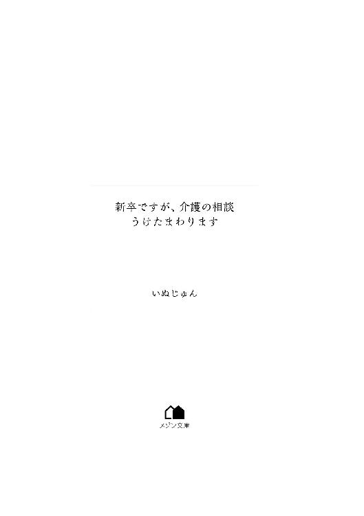
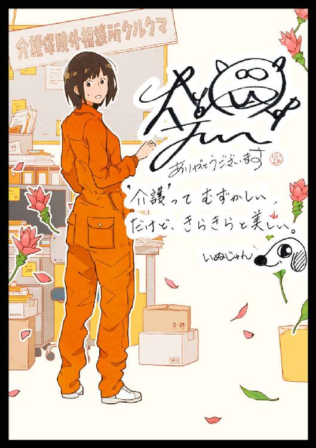

| 新卒ですが、介護の相談うけたまわります【イラスト特典付】 (メゾン文庫) | |
| いぬじゅん | |
| 一迅社 (2018) | |

「私、納得できません！」
思わず叫んでしまった声が、施設長室に響くのを聞いて我に返った。
しん、とした沈黙のなか、左側にそっと目をやると桑原施設長の口が『あ』の形で固まっている。
またやってしまった......。
放たれた言葉はデータのように消去できないし、時間も戻せない。
後悔する気持ちの反面、どうしようもなかったと言い訳をしても新入社員の私のほうが分が悪いのは明白だ。
先行きの見えない不安が青空を墨で塗りつぶすように黒く染め出しているのを感じても、消えてゆく青色を茫然と眺めているしかできない。
始まりは、今からたった二十分前の話。
そのときにはまだ、空には青空が広がっていたのに......。
ここは、『花の郷会』という浜松市南区にある福祉施設。
広大な敷地のなかには、特別養護老人ホームやヘルパー事業所、デイサービスなど多種多様なサービス事業所があって、市内でもこれほど大規模なところはない。
地元では『福祉村』の愛称で親しまれていて、全部の施設を徒歩で回るのは難しいほどに大きい。
大学を卒業し、今日は四月一日。
意気揚々と初出社した私は、なぜか初老の男性職員に呼ばれて【施設長室】に連れてこられたのだ。
他の新入社員たちから引きはがされて、不安なままこの部屋に着いたのが十分前のこと。
すでにイヤな予感が空に薄雲になって立ち込めていた。
革張りのソファに座る間もなく申し訳なさそうに言われたのは『小飼里枝さんは、しばらく違う施設で働いてもらいます』という通告だった。
ぽかん、とする私になにか説明をしてくれていたけれど、ショートした頭では理解できないまま今に至っている。
「あの......ちょっと待ってください。介護保険ではなく、介護保険〝外〟ですか？」
乾いた言葉を発しながら、四月というのに額に汗が滲んでいた。
コミュニケーションの基本は会話であることくらい、私は知っている。
同じ日本人同士であれば、話を続けていけばいつか分かり合えるものだ、って二十二年間信じていた。
だけど、目の前に立っている初老の男性がしてくれた説明は、聞けば聞くほどに私を混乱させるよう。
なにか続けて言わなくちゃ、と口を開くけれど、パニック状態の脳ではいろんな言葉がグルグル回っていて、どれを選べばいいのか分からない。
初老の男性......桑原という名の施設長は柔和な笑顔を浮かべている。
人の好さげな表情に、つられてほほ笑んでしまいそうになり『しっかりしなくちゃ』と自分に言い聞かせた。
普段は私だって桑原施設長と同じく、温厚な性格......いや、気の弱さを自認しているけれど今はそんな場合じゃない。
「私は......」思っていたより小さな声が出てしまい、意識してボリュームを上げた。
「【特別養護老人ホームの生活相談員】として採用されました。でも......違う事業所で働かなくてはならない、さらには介護保険以外の仕事ということですか？」
念願の職種に就けるはずだったのに、なんで他の事業所に？
それはデイサービスなの？ もしくは、ヘルパー事業所？
さっきから疑問符がたくさんこの部屋でフワフワと浮いている。
「たしかに特別養護老人ホームの生活相談員に応募されていましたね」
ようやく桑原施設長が言ってくれたので、大きくうなずいてみせた。
「面接でも言ったのですが......中学の職業体験をここでさせてもらってから、ずっとあこがれていたんです。介護もそうですが、生活相談員さんは家族とのパイプ役になり、本当に素敵でした」
あの日のことは今でも鮮明に覚えている。
女性の生活相談員さんの仕事に引っついて、彼女が家族に電話をしたりケアマネージャーさんに報告している姿を見た私は、胸が震えるほどの感動を覚えたのだ。
人の役に立つだけでなく、関係機関の間に入る仕事ってなんてすばらしいのだろう。
だから、生活相談員になるために必要な資格である社会福祉士を、必死で取得した。
それなのに......。
「いや、しかしですね。困ったな......」
表情を曇らせた桑原施設長を見て、なんだか悲しくなってきた。
たくさんの新入社員でここに呼ばれたのは私だけ。
そんなに面接のときの結果が悪かったのだろうか？
よく友達から『里枝火山』とからかわれていた私。
普段はのん気でおとなしいのに、たまに噴火してしまうことを面接官は見抜いたのだろうか？
うつむきながら桑原施設長を目だけで見ると、眉間にシワを寄せて悩んでいる様子。
鼻をすすった私は、ようやく自分が半泣きなことに気づいた。
まさか社会人初日で泣くなんて、昨日の私には想像もつかなかっただろう。
桑原施設長は、ゆるゆると首を横に振ってから慈愛に満ちた目で私を見た。
「小飼さん、私もできれば特養で働いてほしいと思ってはいますし、そのつもりでした。しかし――」
言葉にかぶせるように、部屋の扉が三回ノックされた。
顔を出したのはさっき事務室で見かけたボブカットの女性だった。
こちらを一瞬見ると、
「失礼します」
返事も聞かずに部屋に足を踏み入れてきた。
スタイルはすごく良いけれど、あえて女性っぽさを排除した黒スーツに薄化粧で、年齢は四十歳くらいだろうか？
「ああ、稲垣事務長。実はですね、今――」
「説明は結構です。だいたい予想はしていましたから」
稲垣事務長......へぇ、偉い人だったんだ。
身長はそれほど変わらないと思うのに、ニコリともしないで私を見てくる稲垣事務長に見おろされている感覚になる。
かたや、まだ困った顔が貼りついている桑原施設長。
「あなたが小飼里枝さんね」
感情がない声、とでも言うのか。
稲垣事務長の話しかたはひどく事務的......あ、事務長だから仕方ないのか。
「......はい」
「聞いていると思うけれど、あなたの配置はここじゃなくなりました」
「でも」
「話は最後まで聞きなさい」
ぴしゃりと口撃してくる言葉に、ビクッと体が震えた。
稲垣事務長は、腕を組んでその細い目をさらに線にした。
「あなたが配置されたのは【介護保険外相談所クルクマ】というところです」
聞きたいことは山ほどあったけれど、注意されたばかりなので口を挟めずに話を追った。
クルクマってなんだか動物の名前みたい。
黒いクマ、もしくは狂いクマ。
どちらにしてもクマのマスコットキャラクターが似合いそうな名前だ。
稲垣事務長の迫力に現実逃避をして、可愛いクマのキャラクターまで想像してしまった。
「介護保険では対応できないような相談を受けつける事業所です。相談員として配置しているから、文句はないでしょう？」
言い切った稲垣は、じっと私をまだ見ている。
ていうか、にらんでいるように見えるし。
恐る恐る右手をまっすぐ上に挙げる私に、
「なに？」
あごを少し上向きにした。
「もう話は最後まで終わったのですか？」
「ええ」
「それじゃあいくつか聞いてもいいですか？」
丁寧に対応しなくちゃ、と尋ねると稲垣事務長は首を振った。
「ダメよ。もう話は終わったわ」
あれ......なんだかお腹のあたりがモヤモヤとしてきている。
この感覚は悪い兆候なのを長年の経験で知っている。
火山が噴火する前の合図だ。
静かだった山の内側で、にわかに活動がさかんになっているのを体感している。
社会人になったのだから、大人にならなくちゃ。
自制とは裏腹に、
「でも、私......」
口から頼りない言葉がこぼれた。
「話は以上よ」
「あの」
「しつこいわね。質問は受けつけません」
そのまま部屋を出ていこうとする稲垣事務長に、お腹のマグマが噴き出そうとしているのを感じた。
とっさに口を手で覆え、と脳に指令をくだすけれど間に合わない。
そして私は感情を言葉にして叫んでしまったのだ。
「私、納得できません！」
と......。
走馬灯のように振り返ってみても、場の空気は変わってくれなかった。
ああ、またやってしまった......。
まさか初日から火山を噴火させてしまうなんて。
遅れて口を両手でふさぐけれど、もう遅い。
稲垣事務長がピタリと足を止め、いぶかしげな眼を向けてきた。
「......納得？」
首を必死で横に振るけれど、感情のマグマはちっとも収まってくれない。
むしろボコボコと温度を上げて燃え盛る。
「特養で生活相談員の仕事をすることになっていたはずです。それなのに、出社初日の今日になっていきなり配置換えなんて、おかしいじゃないですか」
私の言葉に稲垣事務長の細い目が光ったように見えた。
「これは決定事項です」
「決定事項、って......。私の意志は関係なく、ですか？」
ピクッとこめかみのあたりが揺れたように見えたのは気のせいだろうか？
稲垣事務長の冷淡な目が私を捉える。
「あなた、社会人になる、っていうことを甘く見ているんじゃない？」
「そんなことありません」
ムキになって言いかえすと、稲垣事務長は再び扉に向き直ると横顔でため息を吐いた。
「そういう言いかたが甘い、って言っているの。ここは学校じゃないのよ。会社において配置換えなんて当然のこと。自分の望む仕事ばかりできると思わないで」
「だけどっ」
「話は最後まで聞きなさい」
また同じ言葉で制される。
いくらのん気な私でも分かる。
彼女は今、怒っている。
私が余計なことを言ったせいだ、ってことも反省中です。
「そもそもあなたが今、特養の生活相談員になってなにができると言うの？ そんな子供っぽさじゃ、家族からのクレームにも突っかかるに決まってるわ。はっきり言わせてもらえば、私にはあなたが生活相談員に向いているとは思えない。不向きよ」
がーん。
まるで人間性にダメ出しをされた気分になり、固まってしまう私。
半泣きでこらえていたのに、一気に砦は崩されポロポロこぼれ落ちてゆく。
涙で歪んだ視界に悲しみがあとから追いかけてくる。
「まあまあ」
桑原施設長が間に入ってくれようとするが、
「施設長は関係ありません」
と、言われて私と同じようにしょんぼりとうなだれてしまった。
ショックのあまり頭がショートしているなか、稲垣事務長の声が聞こえる。
「だけど」
さっきよりもやさしい口調になっている稲垣事務長の声に顔を上げるが、あいかわらず無表情な目が見つめている。
それでも、言いすぎたと思ってくれているのかも。
「あなたに行ってもらう部署は、正直ここの施設にとってはお荷物以外のなんでもないところ。そのうち閉鎖するだろうから、そうすればここの生活相談員に戻れることも考えてあげるわ」
「え......」
「それまでに、その短気をなんとかなさい。失礼します」
最後の言葉は桑原施設長に向けてだろう。
音もなく閉じられたドアを茫然と見やる私。
いったいなにが起こったの？
こんな展開、朝の私は予想もしていなかった。
神様、どうか私を助けてください。
一刻も早く、特養の生活相談員にしてください。
心で念じていると、
「そういうことですから......小飼さん、がんばってくださいね」
施設長の声が聞こえて、願いは遮断された。
......こんな社会人初日だなんて、あんまりだよ。
職員用玄関から表に回り、桑原施設長に教えてもらった場所へ向かう。
いや、向かうというより流されてゆく感覚に近い。
おろしたての革靴を見ながらうつむいて歩く私には、快晴の天気も気候の暖かさすらも感じる余裕がない。
等間隔に並んでいる桜が散らすピンクすらも悲しい。
だけど、稲垣事務長の言葉を思いかえすと、彼女の言うことも一理あるって感じてしまう。
普段は気弱な性格のはずなのに、我慢できないことがあるとカッとしてしまうのは生活相談員にとっては致命的だろう。
彼女はそれを見抜いていて、私を異動させたとしたら......。
「だけど、入社初日に異動なんて......」
ブツブツ言いながら歩いていると、ホールに集まっている人たちがガラス越しに見えた。
今ごろ、入社オリエンテーションを受けているのだろうな......。
敗北感にため息を吐きながら、前に進む。
【介護保険外相談所クルクマ】は、施設の入口のほうにあるらしい。
「そんな建物あったっけ？」
まだ数回しか来たことがないから、見逃していたのかな。
そこでふと、気づく。
「......相談所？」
相談所って名前がついているくらいだから、相談相手になれる仕事ってことだよね？
そういえば、相談員として配置してくれているんだっけ......？
「そっか......」
現金なもので、さっきまでのショックは一気に波が引くようにおさまっていた。
あの稲垣事務長って人、冷たそうに見えてやさしいところもあるんだ。
特養ではないけれど、同じような仕事内容の事業所にしてくれたんだね。
現金なもので、さっきの自分の態度もたしかにいけなかった、と反省をしている私。
もうずいぶんキレることもなかったから安心しきっていた私も悪かった。
最後に怒ったのは、去年の春にゼミの男子にだっけ？
あのときは教授も含めて全員が目を点にしていた。
バカみたいに騒いでいて卒論の説明が聞こえずについ怒鳴ってしまったんだ。
正論だったけれど、その方法が悪かったと反省したはずなのにまたやってしまうなんてね......。
成長しない自分がもどかしい。
「今度会ったら謝らなくちゃ......」
社会人になったんだし学生気分はおしまいにしよう。
しっかり働いていれば、いつか特養の生活相談員に戻してもらえるかもしれないし。
こういうところ、自分でも単純だって分かっているけれど、どんどん軽くなる気持ちのまま敷地の正門まで戻ってきた。
けれど、どこにも建物らしきものはない。
門の外には大きな駐車場が広がっているだけだし。
「あれ......」
キョロキョロ見回すが、たしかにこのあたりのはず。
仕方なく、管理人室らしき小さな建物で聞いてみることにした。
誰かいるといいけれど......。
簡素なプレハブの平屋の建物は、元々白かったであろう壁がどす黒く汚れ、小さな窓と、見るからに薄っぺらいドアがひとつあるだけ。
あれだけ立派な施設がいくつもある法人の建物とは思えないほどに古臭い印象。
こういう場所で働くのってつらいだろうな。
やっぱり職場には環境が大事だよね。
そんな感想を抱きながらノックしようと伸ばした手が、はたりと止まった。
ドアの右側にかかっているプラスチックの看板の文字をじっと見る。
「ウソでしょう......？」
ドラマみたいに後ずさりをしてから、もう一度顔を近づけて確認する。
何度見ても文字は変わってくれない。
「ああ......」
少しだけ回復していた気持ちが、大きな攻撃によって一気に失われるのが分かる。
消えかかった手書きの文字を茫然と眺めているけど、消えてはくれない。
そこには【介護保険外相談所クルクマ】と書かれてあった。
薄いドアを三回ノックしてからそっと開くと、目の前には小さなカウンターがあり、中年の女性が椅子に座っていた。
五十歳くらいだろうか、ソバージュの髪にくっきりメイクで俗に言う厚化粧。
顔立ちはキレイだけど、かなりの丸い体型のせいでどことなく【コント】というワードが頭に浮かんでしまう。
どこに売っているのか、というサーモンピンクのスーツ姿に目がくらみそう。
「あの、すみません......」
「小飼里枝さんでしょう？」
濃いマスカラをバサッと瞬かせて女性がニッコリと笑ったので、
「はい」
とうなずく。
女性は立ち上がると、舞台女優さながら大げさに両手を大きく広げた。
「ようこそ、【クルクマ】へ。あたしは鈴木せつ子、事務員よ。『せつ子ちゃん』って呼んでね。性格は明るくサッパリ、せっかちなのが短所って言われるけれど、あたしにとっては長所なのよね」
「あ......はい」
「大学卒業したてですってねぇ。ほんとピチピチしてて新鮮よねぇ」
魚みたいに言ってくるその表情は、にこやかで私も自然にほほ笑んでいた。
良さそうな人で良かった......。
ホッとしてなかを見回すと、カウンターの向こうには机が三つ向かい合わせに並んでいるだけの質素な事務所だった。
あとはコピー機と書架があり、その向こうは、給湯室とトイレかな......？
「ここの事業概要は聞いてるのよね？」
キョロキョロしているとせつ子さんが尋ねてきたので、必死で首を横に振った。
「ごめんなさい。まだ、介護保険外の相談に乗るってことだけしか......」
少しでも情報を聞いてくればよかった......。
シュンとする私に、「いいのよ」とせつ子さんは言ってくれた。
「説明するから座ってちょうだい。ちょうど、おいしいクッキーを焼いてきたのよ。こう見えてもお菓子作りが趣味なのよね」
うふふ、と笑っているけれど、体型から見ると納得できるわけで。
もちろん口にはしないけれど。
「......失礼いたします」
座りながら壁にかかった時計を確認して驚く。
まだ勤務開始から一時間も経っていない。
せつ子さんも同じように腰を下ろすと、パイプ椅子は鈍い悲鳴を上げた。
スーツと同じピンク色のバッグからタッパーを取り出すと、
「食べながら聞いてね」
と、蓋を開けた。
なかにはたくさんのクッキーが無造作に詰め込まれてある。
「見た目はイマイチだけど、味は天下一品よ。おばあちゃんから受け継いだレシピなの。ああ、お茶を出すわね」
腰を浮かせるせつ子さんに、また椅子が切なく鳴く。
「大丈夫です。水筒を持ってきていますから」
ビジネスバッグから取り出してみせると、満足そうにうなずいている。
「ここは【介護保険外相談所クルクマ】って言うの。里枝ちゃんはそこの相談員ね。ここまでは聞いているってことね？」
「はい」
いきなりの『ちゃん』づけにビックリしながらも答えると、せつ子さんはパチンと両手を打った。
「じゃあここで質問です！ 【地域包括ケア】とはなんのことでしょうか？」
急に顔を寄せてくるせつ子さんのアップに驚いてしまったけれど、授業でもさんざん習ったし筆記試験にも出ていたから頭には入っている。
「あ......あの、住み慣れた地域でその人らしい生活を送ってもらおう、という――」
「正解！」
話の途中で遮ってからせつ子さんは、ティッシュに載せたクッキーを一枚私の前に置いた。
景品、ってとこなのだろう。
「病院や施設で亡くなる人を減らして、地域みんなで支えていきましょう、ってことね。数年前から国がさかんに言い出した施策なの。国の医療保険や介護保険の負担は毎年億単位での負債になっているから仕方ないのよね」
「はい。そう習いました。ですから古き良き時代の日本に――」
「続いての質問です！」
また途中で止められてしまい目を丸くしていると、赤い唇でニッと笑ってくる。
「浜松市の人口は？ ついでに六十五歳以上の割合......つまり、高齢化率は何パーセントでしょうか？」
「人口は......約八十万人です。六十五歳以上は二十七パーセントくらいです」
まるで面接の場面を繰りかえしているみたいな質問。
思い出しながら答えると、目の前に置かれたクッキーの上にいそいそと二枚追加で重ねてくれた。
正解、ってこと......か。
「高齢化率は年々高まっていて、数年後には二十八パーセントを超えると言われているの。じゃあ、この町の高齢化率は分かる？」
「え......？」
浜松市や南区の高齢化率は覚えていたけれど、町単位までなんて調べていない。
焦りながら口ごもっている私をやわらかい笑みで見ていた彼女が、三つ重ねてあるクッキーからひとつを取ったかと思うと口に入れた。
ボリッと、気持ちのいい音がした。
「三十パーセントよ」
あごを動かしながらウインクしてくる。
「つまり、町の三人にひとりは高齢者なわけ。駅前のあたりと違って、ここらへんは田舎でしょう。でも、天竜区なんて五十パーセントを超えている町もいくつかあるのよ」
「区によってそんなに差があるのですね......」
「地域包括ケアにおいてかかせないのは、福祉サービスよ。デイサービスや訪問介護、訪問入浴などのサービス事業所がいつまでも家での生活が続けられるようにサポートするわけ」
この福祉村にもたくさんのサービス事業所があるのは知っているし、デイサービスの送迎車は朝夕によく走っているから見慣れている。
昔はそこまで見かけなかったと思うから、いつの間にか町の風景に溶け込んでいるような印象があった。
「なんとなく分かります」
素直にうなずく私に、せつ子さんは「でもね」と続ける。
「介護サービスを使うには、要介護認定を受けなくちゃならないでしょう？」
認定を受けて初めて、介護保険のサービスを使えることは私でも知っている。
要支援１から始まり、要支援２、要介護１から５の順に振り分けられる。
要支援１がいちばんしっかりしていて、要介護５が重度の扱い。
いつの間にあったのか、大きな湯呑みに入ったお茶をすすってせつ子さんは宙を見た。
「でも、認定を受けてない予備軍の人ってたくさんいるのよ。そういった人たちの悩みや相談を聞いたり解決する場所はないのよ。もちろん【地域包括ケアセンター】というのは配置されてはいるけれど、業務内容には制限があるからできないことも多いの」
「それをするのが......ここにあたるわけですか？」
尋ねる私に、せつ子さんは目を見開くと、
「大正解！」
と大きな声で叫んで、私の前にクッキーを三枚置いた。
大盤振る舞いの報酬になんだかうれしくなってしまう。
「一回五百円で住民の相談に乗って解決するのが役割よ。あたしは事務員だから事務処理しかできないけど、がんばってちょうだいね」
なるほど、と頭を整理する。
介護認定を受けていない人の悩みや相談か......。
そこでふと気づいた私は、事務所のなかを見回した。
「あの、ひとつ質問してよろしいでしょうか？」
「はいはい」
「他のスタッフの皆さんは会議かなにか......ですか？」
もう勤務は開始しているはずだから、出払っているのだろうか？
私の質問にせつ子さんは一瞬固まったかと思うと、次の瞬間にはブッと吹き出していた。
ガハハと地響きのような笑い声が続く。
なにかおかしなことを聞いたのだろうか......。
「この事務所のメンバーは、所長とあたしのふたりだけなの。でも今日から里枝ちゃんが加わったから三人になるのよー」
「えっ、三人だけですか⁉」
絶句する頭でいろいろと考える。
たった三人しかいない事業所なんて聞いてないよ。
てか、せつ子さんは事務員だから......実質ふたり？
そんなことありえない。
「それだけ相談事は少ないということですか？」
「まだあんまり知られていない部署だし、宣伝もしてないからね」
せつ子さんの言葉に眉をひそめる。
「でも、地域のためにやっている事業なのですよね」
「そうなんだけどねぇ。まぁ、そのうち里枝ちゃんも分かるわよ」
消化不良な答えに疑問ばかりが湧いてくるけれど、せつ子さんが立ち上がって手招きするのでついていく。
それにしても朝というのに日当たりの悪い事務所だ。
電気をつけているけれど、それでも暗くて視力が悪くなりそう。
私の杞憂を察知してか、
「大丈夫よ。夕方の西日だけはすごいから」
なんてせつ子さんは手を腰に当てて自慢にならないことを言った。
あいまいにうなずいてから机に視線を移す。
見るからに古い机と椅子だ。
リサイクルショップでも売ってないだろう、ってほどに傷だらけで、特別養護老人ホームに置いてあったそれらとは全然違う。
あっちはまるでホテルのようにキレイだったのにな......。
「そこが里枝ちゃんの机ね」
指された机の上には電話とデスクトップ型パソコンがひとつあるだけ。
向かい側にせつ子さんが座り、
「んで、ここがあたしの机」
と、説明してくれた。
置物や座椅子カバーがピンク色なので予想はつく。
すると、左側にある大きな机がまだ見ぬ所長さんの机ってことか......。
前にはせつ子さん、左を見れば所長さんの顔が見えるという、いわば顔を突き合わせる配置になっている。
「あの、それで所長さんと言うのは......」
稲垣事務長みたいな怖い人だとどうしよう......。
さっきの冷淡な目を思い出すと身震いが襲ってきそう。
すっかりトラウマになってしまっているらしい。
あの人と同じ建物で働かないだけ、マシってことかも......。
ギイ
と、ドアが開く音がしたので視線を入口にやると、ボサボサ髪の男性が入ってくるのが見えた。
ひょっとして、もうお客さんが来たの？
どうしよう、私ひとりじゃ対応できない。
すがるようにせつ子さんを見ると、ようやく入口を振りかえってくれた。
よかった、とホッとしたのもつかの間のこと。
「お帰りなさい」
なんて男性に声をかけるものだから、
「え！」
と声にしてしまった。
ということは、ひょっとしてこの人が所長さん......？
髪や頬だけでなく真っ黒いつなぎの服も泥だらけになっていて、長めの前髪のせいで表情もよく分からないこの人が？
いや、いくらなんでもそれはないだろう。
社訓もこの上ないほどに立派なものを掲げているこの法人において、あんな所長さんを認めているわけがない。
男性は頭をかきながらズカズカと入ってくると、
「顏と頭、洗ってくる」
せつ子さんに言い残すと、私のほうなんて見ようともせずに奥に消えた。
「はあい」
軽く答えるせつ子さんに顔を近づけて小声で尋ねる。
「今のかたは......用務員さんですか？」
「ブッ！」
またしても吹き出したせつ子さんは、お腹を抱えて笑い転げてしまう。
思ったよりも大きい声だし。
聞こえてしまうのではないか、と気が気じゃない。
ようやく笑いの波は徐々に収まり、
「違うわよ。あれが所長のソウマカイゴくん」
目じりの涙を拭きながら言った。
「カイゴ？ え、介護？」
「早い馬と書いて早馬、でしょ。名前は、海という漢字と数字の五の下に口を書く吾で海吾。早馬海吾くんって言うの。あははは、用務員さんって」
ちょっと声が大きいってば、と手を横に振って焦るけれど彼女は気づかずに高らかに笑い続ける。
「いやあ、里枝ちゃんっておもしろいわー」
「もう分かりましたからっ」
挨拶もまだできていないのに、これはヤバい。
とにかくこの話題からの脱出を試みる。
「それより私、何をすればいいでしょうか？」
「そうねぇ......」
人差し指を唇に当てたせつ子さん。
「相談員だったら相談に乗ればいいだろ？」
ふいに向こうから男性の声がして心臓が跳ねた。
うわ、やっぱり聞かれていたかも......。
ゴクリと唾を飲み込んで顔を上げると、給湯室から所長さんが出てきたところだった。
頭と顔を洗ったのか、タオルでゴシゴシ拭いている。
よく見ると、つなぎの服も色は同じ黒色だけれど、着替えたみたいでキレイになっている。
「あ、あの......」
立ち上がる私に、所長さんは自分の体をクンクンと嗅ぐと、
「朝っぱらからドブさらいなんて、悲惨な新年度だ」
と、ボヤいて自分の机の椅子にドカッと体を預けた。
「すみません、初めまして。私、小飼里枝と申します」
「おお」
軽く手を挙げて、
「俺は用務員だ」
なんて言うから一瞬で顔を真っ赤にして口ごもってしまった。
「ちょっと、海吾くん。せっかくの新人さんをイジメないでちょうだい」
お茶を出しながらせつ子さんが言うと、肩をすくめて顔を歪ませた。
違う、笑ったんだ。
普段あまり笑うことがないのか、一瞬で仏頂面に戻ってしまった。
「これからよろしくお願いいたします」
さっきの『用務員』発言を少しでも挽回しようと頭を深く下げる私に、
「よろしくな、里枝」
声が降ってきてそのままの姿勢で固まってしまった。
え......いきなり呼び捨て？
引きつった笑みを浮かべて姿勢を戻すと、所長さんはいたって真面目な顔をしていた。
聞き間違いかな......。
椅子に座ると、
「小飼って呼びにくいから、下の名前でいいだろう。里枝も俺らを同じように呼べばいいさ」
聞き間違いじゃなかったらしい。
「そんな......ムリですよ」
いきなり上司や先輩たちを呼び捨てで呼ぶなんてありえないし。
稲垣事務長に知られたら大変そう。
「決めつける前にやってみるクセをつけたほうがいい。世界を自分で狭くする必要はないだろう？ 自分で可能性を否定するな。ほら、言ってみろ」
犬かなにかあやしているように手のひらをヒラヒラ上下させて催促してくる。
せつ子さんに助けを求めるが、彼女はニッコリとうなずいているだけ。
「所長、とか......所長さん、という呼びかたではダメなのでしょうか？」
「俺は所長って柄じゃないしな。ここだって命令されて仕方なくやっているだけだから、その呼びかたは気に食わない」
憮然と腕を組んだ所長さんを見て、必死で頭をフル回転させた。
「それじゃあ、所長は......海吾さんで、事務員さんは、せつ子さんでお願いできますか？」
海吾さんは少し迷ってから「しょうがないな」と、うなずいてくれたけれど、異を唱えたのはせつ子さんのほう。
「さんづけは、年を実感するからイヤよ。『せつ子ちゃん』にしましょうよ」
「そうだな。それがいい」
また顔を歪ませる海吾さん、感情の表現が苦手なようだ。
「分かりました。それじゃあそうします」
渋々同意すると、改めて海吾さんを見た。
さっきはかけていなかった黒メガネをかけていることに気づいた。
その奥にある目は、鋭いけれどなぜか落ち着いている印象を受けた。
まだ濡れている黒髪を左右に分け、端整な顔立ちはかっこよく見えなくもない。
身長が高いことはさっき見て分かったけれど、つなぎの服では体型までは分からなかった。
「それで、どういった仕事をすればよろしいでしょうか？」
見とれてしまっていることに気づき、慌てて尋ねると海吾さんは、大きなあくびをした。
「んなの簡単だ。相談者が来るだろ、その相談や悩みを聞いて五百円をもらえばいいんだよ」
あっけらかん、と当たり前のように言う。
せつ子さん......いや、せつ子ちゃんも首を縦に振っている。
そんな答えでは困るし、まるで人生相談みたいじゃない。
このまま実務につかされてはかなわないので、さらに質問を重ねることにした。
「具体的にどういった相談が多いのですか？」
「里枝は理系か？」
突然の質問返しに、
「え？」
と、小さな声で反応する私に海吾さんは首をかしげた。
「悩みや相談は人の数だけあるから、分析しても何の役にも立たないぞ。まずは、相談内容を本気で傾聴するんだ。他人事じゃなく、しっかりと深く同調する練習をしてみろ。それを記録にまとめて、解決できそうならば協力するってことだ」
「はい......」
納得してない声を感じ取ったのだろう、せつ子ちゃんが、
「まあまあ」
と、話に入ってくれた。
「最初は海吾くんも一緒にやってくれるから、体験してみればいいのよ」
気楽な言いかたに少しだけほっとした私に、
「ウワサをすれば、来たぞ」
海吾さんが素早く立ち上がった。
来た、って何が......？
眉をひそめたと同時に、ドアがノックされる音が聞こえた。
静かにドアが開き、白いスーツ姿の女性が入ってくるところだった。
「相談に乗ってくださるところ、ってここで合っていますか？」
「はい、どうぞ」
ぶっきらぼうに言ってからカウンターに向かう海吾さんを見送る。
驚いた......。
会話を続けていたのに、お客さんの足音が聞こえたのだろうか？
「ほら、里枝ちゃんも」
小声のせつ子ちゃんに、ハッとして急ぎ足で隣の席に座ると、海吾さんは【相談用紙】と記された紙に早速記入をしてもらっている。
サラサラと美しい字で記されている情報をのぞき込んだ。
名前は......内田則子さん。
年齢は、三十八歳。
ゆるやかなパーマがかった髪に、薄いメイクを施していて年齢よりも若く見える。スーツもシワひとつ見当たらず、パールホワイトという難しい色を着こなしている。
なんだか、上流階級のご婦人に思えちゃう。
そう思えば、指輪やネックレスも高そうな代物に見えてくる。
家もきっと大きくてお金持ちなのかも。
左の膝に違和感を感じたのはそのとき。
下を見ると海吾さんの大きな右手が私の膝を軽く叩いたよう。
驚いてその顔を見ると、口だけを動かして『見すぎ』と伝えてきた。
しまった......。
つい珍しくて観察に熱中してしまっていた。
とっさにペコリと頭を下げた私に、また顔を歪めてくるので、怒っているのか笑っているのかも分からずに視線を落とす。
笑顔だけでなく、感情表現自体が苦手なのかもしれない、と心にメモる。
「はい、以上で結構です」
初めて聞く敬語で話す海吾さんは、用紙を受け取って自らの前に置いた。
「早馬海吾、今日は記録係をします。こっちは里枝......ええと？」
眉をひそめる海吾さんは、もう苗字を忘れているらしい。
「小飼里枝です。よろしくお願いいたします」
お辞儀をする私に、海吾さんは両手を机の前で組んだ。
「小飼里枝が、今回の相談担当です」
えっ⁉
驚いて海吾さんを見るけれど、どこ吹く風。
「最初に確認します。今回、相談される内容の該当者のかたは、介護保険を使ってますか？」
「いいえ」
背筋をピンと伸ばした内田則子さんがまっすぐに海吾さんを見て答えた。
意志の強さが声に表れている、と思った。
黒メガネを人差し指で上げた海吾さんが口を開いた。
「介護に関するご相談でよろしいでしょうか？ 認定を受けたい、というような相談であれば、敷地内にある地域包括支援センターで受けられますが？」
言葉は丁寧だけれど、かったるそうな言いかたをする海吾さんは、笑顔もそうだけれど接客そのものが苦手なのかも。
「そういう相談ではありませんが、もちろん介護についてです。実は、今日は娘のことで相談に伺いました」
「分かりました。では、里枝......ゴホン、こいつ......こっちにお話しください」
敬語も得意ではない、とメモに上書きをした。
内田さんとようやく目が合った。
さっきの稲垣事務長ほどではないが、自信に満ちた目に圧倒されそう。
「よろしくお願いいたします」
目線を逸らせて頭を下げると、内田さんは軽くうなずいた。
「娘がおります。今日、中学三年生になりました。名前を茜と申します」
一字一句をしっかりと言葉にしてから内田さんが苦い顏になった。
「その茜が、このごろおかしいのです」
ペンを走らせている海吾さんが無言を貫いているので、何か答えなくちゃ、と自分を奮い立たせる。
「おかしい、と言いますと具体的にはどのようなことでしょうか？」
私の質問に、内田さんの眉が吊り上がったように見えたのは気のせいかな。
せつ子ちゃんがお盆に載ったお茶を内田さんの前に置いた。
「ありがとうございます」
軽く頭を下げてから、内田さんはまた私に視線を戻す。
「最近、将来就きたい職業についてよく話をするようになったんです」
「中学三年生になったばかりで？ すごいですねぇ」
思わず感嘆の声を上げてしまったのは、過去の自分と重なったから。
職業体験のあと、お母さんに必死で語った記憶が蘇る。
「それはそうですけどねっ」
内田さんは吐き捨てるように言ったから。思い出のフィルムは瞬時に消えた。
「その職業が問題なんですよ」
「問題......と言いますと？」
だんだん空気が変わってゆくのを感じながらも、内田さんの言ったことを聞きかえすしかできない。
「茜は、『介護の仕事をしたい』って言うんです。これって問題ですよね？」
「え？」
思わず出てしまった言葉に、内田さんは足を組んで呆れたような顔になった。
「違う、とおっしゃるのですか？」
「あの......ごめんなさい。どうして問題なのかがちょっと......」
丁寧な受け答えを意識して聞くけれど、頭のなかが混乱していてよく理解できない。
「は？」
「介護のお仕事、ってそんなに問題でしょうか？ これからは高齢化社会の時代ですし......」
「はあ？」
これみよがしにため息を重ねた内田さんは、それからこう言ったのだ。
「あなた方に言うのも何なのですが......自分から望んで介護みたいな仕事を目指すなんて、おかしいでしょう？」
と。
さっきから机にある傷をじっと眺めているだけの時間が続いている。
せつ子ちゃんはパソコンに向かってキーボードをカタカタ動かしていて、海吾さんは書類を書いている。
居づらさだけじゃなく、最初の相談にうまく対応できなかったことが心を重くしているのはたしか。
だって......やりかたもよく分かんなかったし。
それに質問しただけであんな怒らなくても、とも思う。
結局内田さんの相談は、『娘に介護の仕事を目指すのはやめるように説得してほしい』というものだった。
それを介護の仕事を始めたばかりの私に言う？
ブスッと尖らせた唇のまま肩で息をついた。
たしかに介護保険外の相談であり、介護に関することで間違ってはいない。
でも、それを介護保険業を営んでいるここに相談に来るなんて、あまりにもバカにされている気がする。
それが言えないもどかしさと、うまく会話をつなげられなかった後悔が波のように押し寄せ、何度も飽きることなく私を責めているみたい。
「絶賛落ち込み中ってとこか？」
ふいに尋ねる海吾さんに、気持ちはまた暗くなる。
「......すみませんでした」
「まぁ、気にするな。そのうち慣れるさ」
「はい......」
正直、入社初日にして【退職】の案も生まれている。
相談員として特別養護老人ホームの入居者さんや家族の相談に乗りたかったのに、あんなひどい相談を解決しないといけないなんて。
やりたかった仕事からは、あまりにもかけ離れすぎている。
「私の相談の受けかたですけれど......何がおかしかったのでしょうか？」
「十点ってとこだな。もちろん、百点満点での話だけどな」
やさしい言葉をかけてもらいたかったわけじゃないけれど、茶化すような言葉に思わずムッとしてしまう。
「ちょっと、海吾くん。里枝ちゃんは『何がおかしかったか』を尋ねているの。点数は聞いてないでしょう」
パソコンから目を離さずに援護してくれたせつ子ちゃんにも澄ました顔で腕を組んでいる。
「まず、出だしからおかしかったな。相談内容を本気で傾聴することが、そもそもできていなかった」
そういえば、最初の説明で言われていた、と思い出す。
「里枝は相談の本質を見極めたくて焦っていただろ？」
「本質、ですか？」
「相談を早く解決に導こうとしてた、ってことだ。相談の基本は、質問を端的に短くして、まずは相手にしゃべらせる。そしてそれを自分のことのように置き替えて聞くんだよ」
「でも、あんな相談内容じゃムリですよ」
介護の仕事をバカにしたような発言に同調なんてできるわけがない。
「里枝個人として話を聞こうとしたからだろうな。俺たちはプロとして相手に寄り添わなくちゃいけない。介護をするときの考えかたと一緒だ」
「......はい」
納得ができないままうなずいた。
プロとしてなら余計に介護を軽く見た発言に腹が立ってしまいそう。
「傾聴、同調が終わったら、今度はすり合わせをする。相手の気持ちを受け入れつつも折衷案を探る作業だ」
「よく分かりません......」
正直に言えたのは自分を褒めてあげたい。
だって、いくら同調しても最後に自分の意見を言うならば同じじゃないの？
ああ、もう洗濯機で洗い物が回っているみたいにぐるぐる回る頭。
ちっとも整理できない。
肩をすくめた海吾さんが「ったく」と、ボヤいてから身を乗り出してくる。
「じゃあ、実演をしてみるか。なにか相談を俺にしてみろ」
「相談......」
「本当に悩んでいることなら何でもいいぞ」
私が本当に悩んでいること......。
そんなのひとつしかない。
だけど、ここで言ってみてもいいの？
絶対に海吾さんには解決なんてできないって自信がある。
「ほら早く」
せかす声に、それなら逆に言ってやろうと気持ちが固まった。
背筋を意識して伸ばす。
「私の相談は、仕事についてです」
「はい」
急に他人行儀になった海吾さんが、新しい相談用紙に記入を始めた。
「特別養護老人ホームの生活相談員になりたくて、この法人の面接を受け合格しました」
「なるほど」
たしかに短い言葉で返してくる。
「採用され、今日の初日が楽しみでワクワクしていました。でも、今日いきなりここに行け、と言われたんです」
「ここ、というのは【クルクマ】のことですね？」
「はい。来たくないわけじゃありません。ただ、私は特別養護老人ホームで仕事がしたかったんです。気持ちの切り替えなんて、すぐにはできないんです」
ぎゅっと握りしめた両手の拳を見ていると、悲しみがまた訪れた。
どうしてこんなことになっているのだろう......。
なんで私だけが、こんな目に遭わなくちゃならないの？
長い沈黙に顔を上げると、切ない顔で私を見ている海吾さんがいたから一瞬息が吸えなくなった。
こんな表情を見たのは初めてだったから。
メガネ越しの目が慈しむようにまっすぐに私に向けられている。
「本当に......悲しい思いをされているのですね」
「え？」
「さぞかし悔しくて苦しいでしょう」
「あの......」
「お話を聞いていて苦しくなりました。突然にそんな悲しい出来事があったなんて......よく話してくれましたね。ありがとうございます」
その目から視線を外せないまま、うなずいた。
「これから......先のことが見えません。自分の想像していた未来とは違う展開になっていて......」
不思議だった。
心の奥のほうから言葉がポロポロこぼれてゆく。
「私はこれからどうすればいいのでしょうか？」
もう、シミュレーションではなくなっている。
本気で海吾さんに助けを求めている私がいた。
「つまり、里枝さんはこれから先どうすればいのか、ということを相談されたいのですね？」
「はい、その通りです。ここでやっていけるのか......いていいのか......なんにも分からないのです」
あ、と思ったときには、視界が潤み涙がひとつ落ちていた。
だけど、海吾さんは言う。
「苦しさが伝わってきますよ。一緒に、悩んで道を探しましょう」
言葉は温かく、すっと胸に降りてくるようだった。
「私はどうすれば？」
目の前の担当者は、私の問いに目じりを下げた。
「里枝さんはどうしたいのですか？」
「え？」
「あなたは今日、自ら選んでこの【花の郷会】に来ました。そして異動を告げられた。怒って帰ることもできたのに、それでも【クルクマ】の戸を叩いた。それも、あなたの選択だったのではないですか？」
「選択......」
「そう、選択です。渋々ながらもここへ来たのは、心のどこかに希望があったからではないでしょうか？ まだ希望が全部消えていないのならば、【居る理由】も残っているのでは？」
涙はもう出ていなかった。
そうか、と納得している自分がいたのだ。
たしかに絶望までは感じていない現状だし、決断をするのは時期尚早な気がしてきた。
重くへばりついていた悩みが、はがれてゆくのを見た気がする。
「すごい、ですね......」
そう言うと、海吾さんは急に真顔になり体の力を抜いて椅子にもたれた。
「ま、こんな感じだ。なんとなく分かったか？」
「あ、うん」
思わずタメ口になってしまい、「すみません」とモゴモゴ謝った。
たしかに海吾さんの相談は、教えてくれた傾聴や同調など順を追って行っていた。
実践してもらったことで、相談の受けかたの流れが見えた。
「少しだけですが、理解できた気がします」
「だろ？ まぁ、俺くらいまでになるには時間はかかるけどがんばってみろ」
自信たっぷりの言いかたも気にならないで笑顔になれた。
が、
「それにイヤになったら辞めればいいんだし」
続いて言った海吾さんの言葉に目を丸くした。
「ちょっと、海吾くん。それじゃあ台無しでしょうが」
キーボードを打つ手を止めて不平を口にするせつ子ちゃんにも、
「なんで？ だって一度きりの人生だろ。イヤになったら俺だってすぐに辞めるさ」
なんておどけているから彼の本音がどこにあるのか分からなくなる。
だけど......。
少しだけ気持ちが軽くなった気がしたんだ。
「よし。それじゃあさっきの相談を解決するか」
イタズラっぽい目をした海吾さんに、笑顔でうなずいてから私も顔を戻す。
「どうやって、ですか？」
ひとりで解決する、となるとやはり方法が分からない。
両腕を天井に向かって伸ばしてから、海吾さんは言った。
「もうひとりの相談者を舞台に上げるんだ」
「もうひとりの？」
「内田さんの悩み、そしてもうひとり悩んでいる人がいるだろう？」
「......娘さん、ですか？」
そっと私の机にせつ子ちゃんがクッキーを置いたのを見て正解だと知る。
なるほど、それならできることがあるかもしれない。
私は相談用紙を眺めてから、今思う方法を提案してみた。
翌日の午後二時。
内田さん親子が【クルクマ】の戸を叩いた。
今日は黒いスーツの内田さんの隣に立っているのは、まだあどけない表情の茜さん。
昨日と同じ場所に腰かけた内田さんの横に戸惑いながら腰をおろした茜さんが不安そうな表情を浮かべている。
「今日はご足労いただきましてありがとうございます」
椅子に座って挨拶をする海吾さんに、
「解決してくださる、というから来たんです。茜も今日までは半日授業ですから」
まだ怒り口調の内田さんがそっけなく答えてから私を見た。
言葉に窮するけれど、ここでひるんではいけない。
「ありがとうございます。解決できるかは正直分かりませんが、内田さんのお悩みに少しでも寄り添っていきたいと思っていますので、よろしくお願いいたします」
ゆっくり気持ちを込めて頭を下げ終わると、私を見る目の温度が少し変わったように見えた。
傾聴と同調、と心に言い聞かせる。
「内田さんのご相談を聞かせていただき、私も考えました。お母様だからこそ、娘さんのことを心から心配しているのですよね」
「ええ、そうなのよ」
初めて私を認めてくれたように、少し肩の力が抜けるのが見える。
「私だって、娘の望む将来を応援したい気持ちはあります。でも、将来この子が泣くことが分かっていて、その背中を押すことはできないじゃないですか」
「そうですよね。本当に苦しんで、そしてここに相談に来られたことを感謝しています」
私の言葉に内田さんは少し目を見開いたかと思うと、まばたきを数回した。
「あなた......、なんだか昨日とは違う人みたい」
「そうですか？」
「なんだか話しやすいわ。昨日は失礼なことを言ってしまって......ごめんなさい」
肩を落として謝罪する内田さんに首を振った。
「私こそ、内田さんの気持ちを考えずに失礼をお許しください」
ペコペコ謝る私たち。
ようやく内田さんの表情が緩まったみたいで安心した。
相手の気持ちになって考えてみることは大変だけれど、そのおかげで距離が縮まることが分かった。
「で、今日はどうされるのですか？」
詰問ではなく、穏やかな口調で問う内田さんから茜さんに視線を移した。
今、彼女は内田さんのした相談内容を理解したのだろう、ふてくされた顔でそっぽを向いてしまっている。
今度は彼女を舞台に上げる番だ。
「こんにちは、茜さん。私は、小飼里枝と申します」
声には出さずにあごをわずかに上下させる茜さん。
揃った前髪に肩までの髪が、ようやく差し込んでいる太陽に光っている。
子供、と言ってもいいくらいに幼くて、だけど将来の夢を持っていることに改めて感銘を覚えてしまう。
今度は彼女の話をしっかりと聞かなくちゃ。
「茜さんは介護のお仕事を目指しているのですね？」
「だから？」
こっちを見ようともしない茜さんは、昨日の内田さんと同じように怒っている。
難しいな......。
ここで傾聴をするのはできても同意してしまったなら、内田さんはまた怒りの鎧をまとってしまうだろう。
舞台にふたりを上げても、互いの意見が違う場合はどうすればいいのだろう......。
「私も介護のお仕事を始めたばかりなんです。茜さんの年齢のころにこの施設で職業体験をしたのがきっかけになっているんですよ」
「そう、なんだ......」
一瞬驚いた顔で私を見てから、サッと目を逸らせる。
まるで懐いていない猫が、私のことを見定めているかのよう。
敵か、味方かを見極めているんだ。
プロとして、意見を述べるのはまだ早すぎる。
今は、まずは傾聴だろう。
「どうして茜さんは介護を目指そうとしたのですか？」
「......別に」
「でも、興味はあるのですよね？」
同じように私も悩んだから、さっきよりも同調は簡単にできそう。
本当は言いたい。
『あなたの気持ちが分かる』と。
だけどそれを言ってしまっては、相談者を裏切ることになってしまう。
今回相談してくれたのはお母さんである内田さんなのだから、個人の考えは捨てるべき。
笑顔の奥でめまぐるしく考えていると、
「言いたくない」
拒絶が耳に届いた。
さっきまでそっぽを向いていた茜さんが私をにらむように見ていた。
「そうですか」
一旦退こうとうなずくけれど、それでは茜さんの気持ちは収まらない様子。
「だって言ってもどうせ否定してくるだけでしょ？ 今日だってここに来るっていうから、てっきりお母さんが許してくれたんだって思ったのに」
最後の言葉は隣に向けて言っているらしい。
けれど内田さんは、
「そんなわけないでしょう」
鼻で笑ってのけた。
「じゃあなんで連れてきたのさ」
「私だって知りませんよ。この人に......小飼さんに呼ばれたから連れてきただけです」
ふたりして攻撃されてはかなわない。
「今日お呼びしたのはおふたりの仲介をしたくてです」
先に答えを披露することにした。揃って首をかしげるふたりはよく似ている。
「これから介護のお仕事の現場を、見学していただきたいのです。内田さんにも茜さんにも、実際の介護の様子を見ていただき判断してもらおうと思いました」
「そんなことして何になると言うの？」
予想通り疑問を呈したのは、内田さんのほう。
固く変化した表情に、やさしく私は笑いかける。
「意見の相違は日常生活では往々にして起きます。だけど、将来の夢のせいで仲たがいをされるのは悲しいな、と私は思います。まずはだまされたと思って、一緒に見学しに行きませんか？」
ふたりは顔を一瞬見合わせてから、私を見た。
合意の合図だろう。
だとすれば、見てもらおう。
実際の介護のお仕事を。
エレベーターを降りると、先にふたりを廊下へ進ませる。
「今のところは合格だ。ここからすり合わせをする。難しいが、まずはマニュアル通りに進めてみろ」
隣に立っていた海吾さんが耳打ちしてきたので、
「はい」
うなずいてから私も足を前に出した。
「老人ホームって意外に明るいのね」
開口一番、感心したように口にした内田さんに私も激しく同意。
大きな窓がたくさんあり、私も初めて来たときには明るさに驚いたから。
それにしても春休みにボランティアで来ていて良かった。
見知ったスタッフも多くなったから今日のお願いもしやすかったし、何より勝手が分かるのが大きい。
キョロキョロ見渡しているふたりを【ステーション】と呼ばれる病院で言えばナースステーションにあたる部署へ案内する。
木目の壁紙が貼られたステーションは、オープンカウンターになっている。
「お、里枝じゃん」
書き物をしていた女性が顔を上げるのを見てホッとした。
「未希さん、お疲れ様です。今日はよろしくお願いいたします」
「ああ、主任が言ってた見学って、里枝だったんだ？」
笑顔で近づいてくる石田未希さんは、二十二歳で私と同じ年ながら現場で四年働いているベテラン介護職員さんだ。
ボランティアのときも、やさしく私にいろいろ教えてくれた頼りになる存在。
最初、茶髪に派手なメイクに気おくれしたけれど、裏表のない性格ということを知ってからはお世話になりっぱなし。
あっけらかんとした性格の裏にあるやさしさは、ご利用者様からも慕われている。
「まさか【クルクマ】に異動だなんて驚いたよ」
「一緒に働けなくなって寂しいです」
本心だった。
未希さんにいろいろ教えてもらえる、って楽しみにしていたのにな。
「あそこの所長ってさ、なんか変わってるってウワサだけど大丈夫なの？ 愛想がないとかなんとか」
当の本人が後ろにいることに気づいていないのか、そんなことを言うものだから、
「あ、あの未希さん。こちらが内田則子さんと内田茜さんです」
と、紹介をした。
内田さんは浅く、茜さんは深々とお辞儀をした。
「ふふ。まるで授業参観に来たみたいだね」
口が悪いのが未希さんらしいけれど、こっちは気が気じゃない。
顔色の変わった内田さんに気づかないフリをして、
「記録が終わってからで構いませんので、少し見学させてもらっていいですか？」
と、尋ねると未希さんは肩をすくめた。
「記録って苦手なんだよねぇ。それよか利用者さんとお話ししてたほうが何百倍も楽しいからさ。先に見学行っちゃおう」
ステーションから出てくると未希さんは茶色のポニーテールを揺らせてさっさと歩いてゆく。
「では、行きましょう」
ふたりに声をかけると、戸惑った顔のままついてくる。
私が昨日、海吾さんに出した案を実行に移すときが来た。
介護の現場を見れば、ひょっとしたらふたりの考えが変わるかもしれない。
むしろ、同じ考えになってくれるかもしれない。
私なりに考えた折衷案を、海吾さんもせつ子ちゃんも賛成してくれた。
廊下を曲がった未希さんが、【ユニット】と呼ばれる場所へと案内する。
テレビやソファ、食卓が配置されていて、家で言うところのリビングにあたる。
ユニットには、リビングを中心に十の個室が配置されている。
十人の入居者のためのスペースってところ。
ソファに座ってテレビを見ているのは、源蔵さんだ。
源蔵さんは日中はたいていここでテレビ鑑賞に興じている。
「こんにちは！」
元気よく声をかけて隣に座る未希さんを、私、そして内田さん親子、ずいぶん離れて海吾さんが見守る構図。
「誰だお前は」
しゃがれた声で不信感を露わにした源蔵さんにも未希さんは臆することなく笑顔を向けている。
「あたしは石田です。源蔵さんはテレビがお好きですね。何を見ているのですか？」
「知らん」
「あたしの部屋、テレビないんですよ。こんなおっきいテレビあるんですねぇ」
「知らんて」
何を言ってもそれしか答えない源蔵さんだったけれど、
「昔はテレビは白黒の色しか出せなかったのですよね？」
の質問をすると、舌打ちをした。
「お前ら若いヤツらは知らんだろう。俺は東京オリンピックをテレビで見たんだ」
「家にテレビがあったのですか？」
「ないない。太一......佐藤太一だったけな。あいつの家にテレビがあったろう？」
未希さんは手をパチンと打つと、
「そうでしたね」
と、あたかも知っているような口調で答えた。
「太一はいつもヘンな髪型だったなぁ。『これが流行だ』っていばりくさりおって」
「なつかしいですね」
ニコニコ笑う未希さんにつられて、源蔵さんの口元も緩んでいる。
「ヘンな会話」
私の横に来た内田さんが小声で言うので、うなずいた。
「そう聞こえますよね。だけど、源蔵さんの世界に未希さんは入り込んだんです」
「世界に？」
いぶかしげに尋ねて、内田さんはまた未希さんたちに目を戻す。
「そうです。認知症のかたは最近の記憶ほど覚えていられないことが多いのです。逆に昔のことは鮮明に覚えている。源蔵さんが持っている世界を、未希さんは理解しようとしているんです」
「そんなことしてどうなるのよ」
呆れ顔で言った内田さんを見た。
「認知症のかたに寄り添うためです。それに【回想法】といって昔を思い出すことは、脳への刺激を与えることに有効なんです」
説明をしながら茜さんを見ると、食い入るように会話を見つめている。
本気で介護に興味を持っているのが伝わってきた。
「私には理解できませんけどね」
吐き捨てるように言った内田さんが、プイと背を向けて壁のほうへ歩いていってしまった。
ふう、とため息を吐いた。
「難しいか？」
代わりに隣に並んだ海吾さん。
「分かりません。だけど、実際の介護現場を見せたかったから少し満足です」
私の答えに海吾さんが、
「ふ」
と息を漏らしたので見やると、意外にも口を上げて笑っていた。
歪んだ笑顔しか見たことがなかったので驚く私以上に、
「あれ」
自分の口に手を当てて目を丸くしている海吾さんが、ハッと表情を元に戻した。
まるで自分が笑っていたことに驚いているみたい。
「ちょっと何するのよ！」
叫ぶ声に振り向くと、内田さんが老婦人に腕をつかまれているところだった。
小柄な老婦人は怒った顏のまま腕を離さない。
「失礼します」
素早く立ち上がった未希さんが駆け寄ると、
「板垣さん」
声をかけるが、聞こえていないようにブツブツつぶやいている。
「帰る。帰ろう。家に帰りたい」
まだ七十歳くらいに見える板垣さんは、内田さんの目を見て繰りかえし言う。
「帰りたい。帰るのっ」
「やめてよ、おろしたてのスーツなのよ！」
大声で手を振り回す内田さん。
「動かないで、危ないから」
小声だけど鋭く注意した未希さんを、キッと燃えるような目でにらむ。
「だったらどかしなさいよ！ あなたプロでしょう⁉」
「静かに。板垣さんが興奮するから」
「誰に注意してんのよ。あなたがしっかりしないからでしょうが！」
どんどん声が大きくなりブンブン振り回す内田さんの腕を、
「お母さんやめて！」
それまでひと言も発しなかった茜さんが押さえようとした。
――そのとき
バシッ
板垣さんの手が宙を舞い、茜さんの頬に強く当たった。
はずみでよろけた茜さんを見て、内田さんの顔が真っ赤になった。
「うちの娘に何てことするのよ！」
激高とはこういうことを言うのだろう。
自分で手を振り回しておいて勝手に怒り出す内田さんを止めようとしても、体も口も動いてくれない。
正直、ビビッてしまっている状態。
それを止めたのは、今叩かれたはずの茜さんだった。
「板垣さん、帰りたいのですか？」
体勢を戻して尋ねるその声に、それまで内田さんの腕にしがみついていた彼女の視線が茜さんを捉えた。
「......あなたも帰るの？」
「はい。一緒に行きますか？」
するり、と板垣さんの腕が解け、
「ああ、よかったわ。どうしようと思っていたの」
ホッとしたように今度は茜さんの腕をつかんだ。
「じゃあ一緒に帰り道を聞きに行きましょう」
「ええ、そうね。行きましょう、早く行きましょう」
もう怒りが顔から消えている板垣さんは、うれしそうに茜さんと歩き出す。
「こっちに誰かいますかね？」
やさしい横顔で尋ねる茜さん。
「そうだねぇ。聞いてみようかね？」
なんて会話をしながら遠ざかる背中を私はただぽかん、と見ているしかできなかった。
すごい、と思った。
板垣さんは、卒業後にボランティアで来ていた私にも同じように何度もしがみついてきたけれど、スタッフが止めてくれるまでそのまま動けなかったから。
やっぱり傾聴と同調が必要なんだ、と思うとともにあのときも、今も何もできない自分を恥ずかしいと思った。
「ふざけないでよ！」
そうは思っていない人がここにひとり。
「ここの安全管理はどうなってんの？ 暴力を振るう人を住まわせていいってわけ？」
「そんなのあんたが動いたからでしょうに」
ボソッと真実を口にした未希さんに、さらに内田さんは怒りのボルテージを上げる。
「今なんて言ったの⁉ う、上の人に直訴しますからっ！」
「どうもすみませんでした」
一応、という形で謝罪する未希さんに、酸欠の金魚のごとく口をパクパク動かしている内田さんをなだめなくては。
「あの......こんなことになって申し訳ありません」
「あなたがここに連れてきたのでしょう。責任取りなさいよ」
「申し訳ありません」
ボキャブラリーのなさを呪いながら繰りかえす私を鼻息荒く見おろしている。
昨日よりも怒っているのはたしかだ。
騒ぎを聞きつけたらしく茜さんが、
「お母さんやめて！」
と、駆けてきた。
見ると、板垣さんは他の男性スタッフと一緒にニコニコと歩いている。
「茜は本当にこんなところで仕事をしたいわけ？」
「そうだよ。ずっとそう言ってるでしょ」
「こ、こんなところで仕事したら、茜の頭がおかしくなっちゃうじゃない」
ヤバい、と思ったのはそのときだった。
モヤッとした感情がお腹のあたりに生まれたのだ。
昨日の朝にも感じた感覚に、後ずさりをしてポケットに手をつっこんでいる海吾さんの隣に並んだ。
「すみません、緊急事態です」
顔を寄せて言う私に、海吾さんは、
「放っておけばいいさ」
なんて言うので首を小刻みに横に振った。
「そうじゃないんです。自分の感情が波打ってるみたいで......マニュアルのように進められないかもしれません」
「は？」
私を見てから海吾さんは肩をすくめた。
「施設長室で怒鳴った、ってやつか？」
「もう知っているんですか？」
「まあな。俺くらいになると些細な情報も耳に入る」
胸を反らせて自慢しながら「まあ」と、言葉を続けた。
「マニュアルがすべてじゃないからな」
「でも、これ以上は......。とにかくここからは交代していただけませんか？」
そんなことを言っている間にも目の前で親子は言い争いを続けていて、一緒にムカムカした感情も大きくなってきている。
聞きたくなんてないのに、勝手に情報が耳に流れ込んでくる。
それなのに海吾さんは、
「これは実地演習だ。俺がやっては意味がない」
なんて軽く言うから私の顔色は真っ青になっているだろう。
「でも......それじゃあせっかくの......」
余計に収拾がつかなくなることを心配する私の背中を、海吾さんはドンと押した。
うわ、と前につんのめりそうになる。
「思った通りにやってみろ。失敗してもそこから学べることもあるさ」
振り向くと、また笑顔になっているし。
「......あれ？」
また自分の頬に手を当てて不思議そうな顔をしている海吾さんから、騒動へ視線を戻す。
思った通りに......。
だけどそれは最悪の事態を招くことになるのでは？
感情のままに言葉を発してこれまでも失敗してきたはず。
だけど、目の前で泣いている茜さんを助けたいよ。
将来の夢を持っただけで責められるなんて、やっぱり間違っていると思うから。
内田さんは今、ターゲットを未希さんに変えて詰め寄っている。
「だいたいあなたの態度はなんなの？ お年寄りのウソ八百の会話に『はいはい』って合わせているからつけ上がってしまうのよ」
なのに未希さんは今にも笑い出しそうな顔をしている。
「認知症の人にとっては、あれがその人にとって本当の世界だから。否定しちゃったら混乱するんだよ」
「まがい物の世界でしょうが。ボケてる人の世界をいちいち肯定してたら現実世界に生きているこっちが迷惑するのよ」
「迷惑だなんて思うわけないじゃん。それがあたしたち介護職の幸せなんだからさ」
サラリと口にする未希さんに、内田さんは一瞬きょとんとしたがすぐに、
「い、意味が分からない！」
と、叫んだ。
またお腹のなかのモヤモヤが大きくなってゆく。
「お母さん、もういいから。とにかく私は介護の世界でやっていきたいの」
「どうしてそこまで思えるのよ。理由をちゃんと言いなさい」
詰問する内田さんに、茜さんは一瞬口を開きかけたけれど、すぐに躊躇するように視線を逸らせた。
「そんなの......どうでもいいじゃん」
言いたいことがあるのに言ってはいけない、と自制したように見えて違和感を覚えた。
「介護の仕事をすることがどうしてそんなにいけないことなの？」
話を変えるように茜さんは押し殺した声で尋ねた。
「全部に決まっているでしょ。何のためにあなたをここまで育てたと思っているのよ。とにかくお母さんはこんな仕事、絶対に認めません」
断言した内田さんが茜さんの腕をつかんだ。
「帰るわよ。二度と介護の話はしないで！」
「そんな......ひどいよ。ひどすぎるよぉ」
もう茜さんは泣きじゃくっていた。
「こんな職場であなたを働かせるわけにはいきません」
引きずってでも帰ろうとする内田さんの前に、意志とは関係なく勝手に足が前に出ていた。
気づいた内田さんが私を見る。
今、大きく成長したモヤモヤがお腹から吐き出される瞬間が来る！
「私、納得できません！」
リビングに響き渡る声に、みんなが口を開けるのが見えた。
しん、とした静けさのなかでテレビの音だけが聞こえている。
「私は......」
そう言ってから内田さんの目をしっかりと見た。
「内田さんの相談を理解したつもりです。たしかに介護職の給料は、大企業に比べたら安いとは思います。内田さんが娘さんである茜さんを心配されるのも分かりますし、反対していることを否定するつもりはありません」
「だったらいいじゃない。どいて、帰るから」
「どきません」
気づくと足を広げて仁王立ちで立っていた。
てこでも動かない決心が足に力を入れさせているのを感じる。
「あなた......」
怒りの炎が私に伸びてくるけれど、絶対に譲りたくない。
「内田さんのお考えに反論させてください。介護の仕事はすばらしい仕事です。認知症のかたは、日々自分自身を失ってゆく感覚に混乱しています。喪失感で満たされた世界を共有し、少しでも元気に過ごしてもらおう、っていう仕事をバカにしないでください」
「......誰に言ってるのよ」
怒りで声が震えている内田さんのうしろで、茜さんは何度も泣きながらうなずいてくれている。
それは小さな勇気に形を変えてくれるよう。
マニュアルからは遠くかけ離れてしまったけれど、その涙に応えたかった。
そして、怒りで我を忘れている内田さんのためにできることをしたい。
相談は内田さんからいただき、茜さんの悩みも知った。
ふたりのためにできることを......。
疑問が湧いたのは、そのときだった。
「内田さん、質問したいことがあります」
「......聞きたくない。早くそこをどきなさい」
答えをムシすることにして、その瞳だけに集中した。
「今回の相談ですが、最初から違和感がありました。内田さん、あなたはどうしてそんなに介護の仕事に反対するのですか？」
「この子のためにならないからよ」
私が意地でもどかないと観念したのか、内田さんは茜さんを握っていた手を解放して腕を組んだ。
その目がどことなく動揺しているように見えた。
「あの、ひょっとしてですが......介護でイヤな経験があるのではないですか？」
「なっ......」
体をビクンと跳ねさせ、あからさまな動揺を見せた内田さん。急に目線を下げたから予想が当たっていたことを知る。
思い当たることがあるのか、茜さんが迷ったように口を開いた。
「おばあちゃんのこと、だよね？」
「......」
答えない内田さんに代わって、茜さんは私を見た。
「数年前まで、おばあちゃんが一緒に住んでいたの。認知症になってすごく大変で、お母さん毎日泣いていたから......」
思ってもいない展開に、いつの間にか隣に立っていた海吾さんの顔を確認すると、軽くうなずいている。
このまま進めろ、ってこと......？
「認知症のおばあさまで大変な思いをされていたのですか？」
静かに問うと、内田さんは体中からと思えるほどの大きなため息を吐いた。
「毎日......大変だった。トイレやお風呂のお手伝い、気づくとどこかへ歩いて出かけてしまって迷子になって、夜中でも警察に頭を下げて......」
つらい過去を思い出しているのだろう、苦しそうに言葉をつなげている。
「だけど、自分の母親だから夫には相談できないし......。だんだん娘である私の顏すら分からなくなっていった。それでもたまに回路がつながるのか、急にしっかりするものだから、文字通り振り回されっぱなしだった。だから私、『もうこの人は、お母さんじゃない人なんだ』って、そう思うことにしたの」
最後の言葉は震えていて、内田さんの瞳から涙がこぼれそうになっている。
「お母さん......」
茜さんもその肩に手を置いて同じように泣いている。
「そうしているうちに私に悪魔がとりついたの。いつしか、顔を見るたびにこう願うようになった。『早く死んでください。早くラクにさせてください』って。毎日そればっかり祈っていたわ。ひどいことだ、って自分でも分かっていたけれど、もうあの人が死ぬことだけが望みになっていたの」
泣きながら笑みを浮かべた内田さんが、再び私をまっすぐに見た。
「ここに住んでいる人だって家族がお手上げになったからここに来たのでしょう？ 見捨てられた人をどうして茜がみなくちゃいけないの？ 毎日が苦しいことばかりの連続だった私の気持ちなんて分かるわけない。あの苦しみは絶対にあなたには分からない！」
消えかけた炎は、悲しみを加えてさらに激しく燃え上がっているよう。
鋭い爪でえぐられたように、体中に痛みが走っている。
だけど、さっきまでと違う気持ちで彼女を見ている私がいた。
「分かりません......でも、分かりたいと思います」
お腹のなかはからっぽで、空虚な空間に内田さんの悲しみが満たされてゆくよう。
介護をしながら、自分のことを少しずつ忘れてしまう母親を憎んで、嘆いて、そしてあきらめたんだ。
介護に対するトラウマが茜さんの夢を反対している。
それは内田さんのせいでも、茜さんのせいでもましてや、内田さんの母親のせいでもない......。
「どうして、あなたが泣いているの？」
きょとん、と口にした内田さんに自分が泣いていることに気づいた。
中途半端な同情だと思われても仕方ない状況なのに、涙はあとからあふれてくる。
怒ったり泣いたり、なにやってんのよ、私......。
「違うん......です。あの――」
「じゃあ続きは俺が言おう」
ずい、と前に出た海吾さんは口元に笑みを浮かべていた。
話がややこしくなるんじゃ、という不安をよそに彼は、
「茜さんはどうなんだ？」
と、まるで喫茶店でメニューを尋ねるかのような軽い口調で言った。
動揺を浮かべている茜さんは、見られまいとするように顔を伏せた。
「そもそもきみは肝心なことを言っていないだろう？ どうして介護にそんなにこだわるんだ？」
強く唇をかみしめている茜さんは、あふれそうな気持ちを必死で耐えているように見えた。
言いたくないのか、言ってはいけないと思っているのか判断がつかないけれど、小さな体で自分を守っている。
「内田さんの今の話を聞いて、どう思った？ きちんときみの言葉で話すときが来たんじゃないかな？」
あいかわらず世間話のような口調だけれど、支配していた空気が少しだけ軽くなるかのよう。
「茜、ちゃんと話をして」
振り向いてから促す内田さんの声は、穏やかなそれに変わっていた。
強制じゃなくて、本当に聞きたい気持ちが言葉になっている。
やがて茜さんは鼻をすすると、
「私は......」
と、言ってからまた口をぎゅっと閉じてしまう。
「がんばってください」
私の声かけに、ハッと顔を上げてから茜さんは目を閉じた。
「私は、おばあちゃんが大好きだった。お母さんも大好きだった。だけど、介護で大変なお母さんを見ていて、私には何にもできなくって......」
一旦、言葉を区切ってから瞳を開けた彼女はさっきよりも落ち着いたように思える。
「介護の方法さえ知っていれば、って何度も思った。そうすれば、お母さんもおばあちゃんも、もっとイライラしなくて済むのにって......。それから、他にもきっと苦しんでいる家族はいるって考えるようになってからは、介護の仕事をしたい夢が大きくなっていって......。きっと、後悔がそうさせているの」
「後悔？」
やさしい声で尋ねる海吾さんを、潤んだ瞳で見つめてうなずく。
「おばあちゃんとお母さんを助けてあげられなかった後悔です。だから、どうしても介護の仕事をしたい」
迷いのない言葉だった。
きっと、自分なりに介護の方法を勉強したからこそ、さっきのような対応もできたのだろう。
まだ中学生でこんなにもたくさんの後悔を背負っている茜さんの気持ちに同調して、涙がさらに止まらなくなる私。
「そうか。でも、お母さんの気持ちも茜なら分かるよな？」
「うん」
横柄な海吾さんの口調にすら誰も気づかない様子。
きっと、やさしい茜さんは内田さんの気持ちも理解している。
それでも、あきらめられない夢だからこそ、衝突してしまったのだ。
ふん、と鼻から息を吐いた海吾さんがひとりうなずく。
「今は夢のためにしっかり毎日を過ごせばいい。新しい世界をこれからどんどん知るだろう。それでも介護の仕事を目指したいのなら......内田さんはどうする？」
「......そんなのそのときにならないと分かりませんよ」
つっけんどんな口調にも、やさしさが含まれていた。
「でも......お母さんも言いすぎたわ。こちらの事務員さんが言うように、たしかにまだ時間はあるから、まずは勉強をがんばりなさい」
「お母さん......」
「一般常識も知らない介護職員さんじゃ、利用者さんから笑われるわよ」
母親の顔に戻った内田さんが、未希さんに頭を下げた。
「取り乱してしまい、申し訳ありませんでした」
「いいってこと。茜ちゃん、がんばって！」
「はい」
「勉強もね！」
未希さんがおかしそうに笑い声を上げ、それが伝染してみんなが笑う。
最後は笑顔で互いの顔を合わせられてよかった。
互いの悩みは解決しなくとも、この相談が完結するのを見ている。
そんな私たちに、
「うるさい。テレビが聞こえないだろうが！」
源蔵さんが怒鳴るものだから、私たちは口を閉じてから目だけで笑う。
「俺、事務員じゃねぇけど」
ボヤく海吾さんの声すらも、どこか笑っているようだった。
夕焼けが『花の郷会』を淡い朱色に染めている。
高台にあるこの施設は、空が大きく見えて春の風が気持ちいい。
内田さん親子を見送った私たちは、なぜかどちらからともなくその場にとどまっていた。
「少しは相談を受ける方法が分かったか？」
正門に体を預けて大きく伸びをした海吾さんに、
「まだ......難しいですね」
正直に答えた。
たったひとつ解決するのにも大変な労力が必要だった。
自分自身を出すのではなく、相手に寄り添ってゆく過程をこれから毎回行わなくてはならない、と考えると不安しかない。
それでも、今見送った内田さん親子は、そっくりな笑みを浮かべて影をひとつに合わせて帰っていった。
「内田さんと茜さんが笑顔になれて......本当に良かった」
「そんなもんさ。困難なケースでも、俺たちは結局、相談者の笑顔に救われるんだ」
「少しだけ分かりました」
「で、どうだ？ 続けていけそうか？」
私を見ている海吾さんが目を細めている。
まぶしいからか、笑おうとしてうまく表情を作れないのかは分からないけれど、私でも誰かの役に立てるのなら、こんなにやりがいのある仕事はないって思う。
それに、陽気な事務員のせつ子ちゃんと、口は悪くとも頼れる海吾さんがいるのなら......。
「はい」
口にしたとき、自然に笑顔になれていた。
「それは自分で選択をした、ってことだな？」
「自分で決めました。だから、よろしくお願いいたします」
頭を下げる私に、満足そうにうなずいた海吾さんが急に、
「何色がいい？」
なんて尋ねるから目を丸くしてしまう。
「何色、って......何がですか？」
「ユニフォームの色。まぁ、ユニフォームって言ってもこれと同じつなぎの服だけどな」
自分の胸元を見てから、ニッと白い歯を見せた。
「え、それを着るんですか？ そんなの恥ずかしくてムリですよ。スーツじゃダメなんですか？」
「『ムリ』って言葉は使用禁止だ。自分で可能性を否定するな。それにこの服のほうが動きやすいし、汚れにも強い。今日みたいな相談は特殊で、普段はドブ掃除や地を這って探し物をすることが多い仕事だからな」
饒舌になった海吾さんが腕を組んで考えるポーズになった。
「たしかオレンジのつなぎが購買で売ってた記憶がある。よし、それにしよう。サイズはＭ？」
「Ｓです。って、まだ承諾してないですよ」
「自分で可能性を――」
「そうじゃなくって！」
必死で阻止しようとする私に、
「ちょっとおふたりさん。五時半になるから帰るよぉ」
いつの間にか事務所の外に出てきたせつ子ちゃんが呆れ顔で声をかけてきた。
「はいはい」
さっさと戻ろうとする背中を見て、ひとつだけ聞いていなかったことがあることに気づいた。
「そういえばクルクマってどういう意味ですか？」
「いい名前だろ？ 俺がつけたんだ」
自慢げに振り返っているけれど質問の答えになっていない。
不服な表情に海吾さんは、
「夏に咲く花の名前」
とだけ言ってドアを開けた。
クルクマ、という花があることは初耳で、想像もつかないけれど納得したふうにうなずいた私に、彼は西日に目を細めた。
「花には意味がある。焦らなくともそのうち分かる」
そうかもしれない、と手書きで書かれたプレートを見る。
――ここは、介護保険外の相談を受ける事業所【クルクマ】。
明日からはまた違う相談者が訪れるだろう。
それが、少しだけ楽しみになっている私がいた。
毎年五月が近くなると、浜松市はにわかに活気づく。
夕刻をすぎれば町民会館に町の人が集まり、夜遅くまで会合が続く。
すべては五月三日からの三連休に開催される【浜松まつり】の準備のため。
各町が所持する【屋台】と呼ばれる御神輿を担いで練り歩くまつりは、県外からもたくさんの観光客が押し寄せる大イベントだ。
浜松駅前を通行止めにし、きらびやかな屋台が一堂に会する光景は圧巻。
かけ声や独特の笛ラッパの音色は華やかであるとともに、短いまつり期間が上げる泣き声のようで、どこかはかなくも感じる。
小さいころから年中行事に溶け込んでいたから、他の県では行われていないと知ったときには愕然とした。
私の住んでいる町でも、【決起集会】と称した飲み会が週末には行われていて、否が応でもまつり当日に向けて盛り上がってゆく。
とはいえ、私はもっぱら準備専門。
参加するとそれなりに楽しいとは思うけれど、まつり特有の荒々しい雰囲気は正直苦手だった。
言えないまま二十二年が過ぎ、今日も居酒屋の端っこの席で何度目かの集会に参加している。
「いい男って、どっかに落ちてないかねぇ」
グラスを片手にしなだれてくる彼女は、幼なじみの英美。
何人目かの彼氏と別れたばかりの英美は、露出の多い服でハンターのようにあたりに視線を配っている。
「落とし物じゃないんだから落ちてません。だから町内で探すのはやめたほうがいいってば」
何回したか分からない進言も、英美には通じない。
「遠距離恋愛とかムリだしー」
自慢の前髪を耳にかけ直して艶っぽい目で見てくるけれど、女子の私には残念ながら効果はない。
「同じ市内なら遠距離でもないでしょ」
ビールで火照った顔を押さえて言うと、英美は「うう」とウソ泣きで答えた。
酔いが早いのは、慣れない仕事の疲れだろうな。
「で、仕事はどうなの？」
さすが幼なじみ、というタイミングで尋ねてきた英美に唇を尖らせた。
「なかなか難しい。そんなにお客さんも来ないんだけど、ひとつひとつが大変でさ」
意味もなく使い捨てのお手拭きで机を拭くと、アルコールの匂いが鼻をくすぐった。
この数週間で私が担当した相談は、【高齢のため引っ越し先が見つからない】【結婚指輪をゴミに出してしまっておじいさんが激怒】【ひとり暮らしの隣のおじいさんのひとり言がうるさい】という、国民的アニメも真っ青な三本立てだった。
ひとつの相談があるたびにいろんな場所で頭を下げ、さらには相談者からも怒鳴られの繰りかえしだった。
「相談に乗る仕事をしたかったんだけど、それは介護を受けている人を助けたかったからなんだよね......。今のは、何て言うか......」
「何でも屋？」
「......うん」
実際に解決までたどり着けば達成感もあるし、それなりに感謝もされる。
だけど、やりがいと言えるほどのものはまだ見つけられていなかった。
「仕事なんてそんなもんじゃね？」
特製から揚げを口に入れた英美がまた髪をかき上げた。
「そうだとは思うけどさ。介護認定すら受けていない人の相談なんて種類が多すぎるし、切羽詰まっている相談も少ないし」
「そのうち第一志望の仕事に戻れるかもしれないんでしょ。てことは、今が下積みじゃん。あたしだって、毎日オールドミスにイヤミばっか言われてるんだから」
英美は西区にある楽器工場の事務をしている。
すでに【天敵１】【天敵２】と名付けた意地悪な先輩がいる、ってこの間ボヤいてたっけ。
「それにさ」
箸の先でつまんだから揚げをにらむようにして英美は言う。
「たくさん下積みで経験をすれば、それはあんたの身になるでしょ。このから揚げだって、下味をしっかりつけてるからうまいんだし」
軽い見た目とは違って、英美はさらりとこういうことを口にする。
私の心のメモのフォルダには、たくさんの【英美名言集】が存在し、日々更新されている。
から揚げを小皿に移すと、鈍いライトにかざして黄金色の衣を眺めた。
「たしかにそうだね。まあ、しばらくがんばってみるしかないよね」
「その調子」
クスクス笑っていると、ひときわ大きなおじさんたちの笑い声が聞こえた。
すっかりできあがった町内会の重鎮たちの笑顔を見ていると、なんだか悩んでいることがちっぽけにすら感じてくる。
『浜松まつり』のために一年の間、仕事をがんばっているような人が多いこの町では、当日の天気がもっぱらの関心事でそんな会話が行き交っている。
「飲んでるかい？」
ビールの入ったピッチャーを片手にふらりと危なげな足どりで前に座ったのは町内会長の犬塚さん。
『今年でまつりは引退』と毎年のように宣言し続けている犬塚さんは、七十歳を迎えるそうだ。
もちろん来年も参加するだろうから、誰も真には受けていない。
幼いころからおじいちゃん、という印象だったから変化に気づかなかったけれど、確実に私たちは年を経ているらしい。
「ちょっと犬ジイ、若い男連れてきてよ」
不平たらたらの英美に、犬塚さんは目元のシワを深くした。
「この町の若い衆よりも、浜松駅前にでも行けばいくらでもいい男はいるだろう？」
「駅まで遠いし、出逢った人が遠い町の人なら悲劇じゃん」
空になったグラスにビールを注いでもらいながら苦い顔をしている英美。
「里枝ちゃん、福祉の仕事に就いたんだって？」
話題を変えようとしたのか、犬塚さんが私を見た。
「はい。まだ新米ですけど。地域の相談に乗る部署なんですよ」
先週もらったばかりの名刺を差し出すと、思いっきり目を離して文字を確認している。
「ほう、相談員......。この町の？」
「ええ。南区に住んでいる人が対象で、介護に関する相談なら何でも」
おお、と声にはせずに言った犬塚さんは身を乗り出してくる。
「それなら、三丁目の袴田さんの相談に乗ってあげてほしいんだけどな」
「ああ」と、英美が手をぽんと打った。
「角の家の？ そういえば最近姿見ないね」
「そうなんよ。実は袴田さんがな――」
話がどんどん進んでいきそうな流れに、
「ちょ、ちょっと待ってください」
右手を挙げてストップをかけた。
「すみませんが、こういう場所で個人情報はダメです。それに、相談なら事務所で伺いますから」
「なにそれ。こんな小さい町で個人情報もないでしょうに」
赤ら顔で非難してくる英美。
「でも、ダメなの。それに今日は休日なんだからね」
グイとグラスをあおると、なぜか犬塚さんは目をウルウルさせているからギョッとした。
「あのちっちゃかった里枝ちゃんがこんなに大きくなって......」
酔うと始まるいつもの展開にため息。
「泣かないでくださいよ、もう」
「おねしょばっかりしていた里枝ちゃんが......」
「それは余計ですってば。いい加減、その記憶を捨ててください！」
恥ずかしさで余計に真っ赤になる頬を押さえて言うと、周りのみんなが声を上げて笑っていた。
「海吾くん、寝不足なの？」
せつ子ちゃんの声にパソコンの画面から視線を左に向けると、分かりやすく大あくびをしている海吾さんがいた。
「そんなところ。まつりの練習が毎日続いているだろ？」
たしかに黒メガネを取って涙を拭っている目が赤い。
「ああ、なるほどねぇ」
「海吾さんも浜松まつりに参加するんですか？ 意外です」
私もお茶を受け取りながら尋ねた。
どこか世間に流されないイメージがあるから、そういう行事には興味がないと勝手に思っていた。
「俺は参加しない」
あ、やっぱり予想通りの返事。
「でも、うちが町内会館のそばだからうるさくてな」
「練習は十時までですよね？ 規約違反ですか？」
「違う違う。楽器の練習が終わったあとも、ずっと楽し気にしゃべっている声が聞こえるからうるさくて眠れやしない」
ずず、とお茶を飲んでからまたあくびを宙に逃がしている。
「じゃあ苦情言わなきゃですね」
私の言葉に再度メガネを装着して真顔になる。
「まさかそんなことはしない。この時期はしょうがない、とあきらめている」
意外に大人な一面が見えた。
「それにこういうのは先にいたほうが有利だ」
「先に？」
「町内会館は古い歴史があり、ずっとそこでまつりに備えて練習してきた。あとから家を建てたほうはこれまでの慣習に従わないとな。早い者勝ち、ってことだ」
歴史を重んじるタイプ、と心のメモに書き加えた。
「そういえば、【クルクマ】の意味って分かったのか？」
資料をパラパラとめくりながら海吾さんが軽い口調で尋ねたので、ついにこのときが来た、と姿勢を正した。
入社してすぐに名前の由来を尋ねた私に、彼は『花の名前』とだけ教えてくれた。
実はその日のうちに調べていたんだよね......。
「分かりました」
素直に答えるけれど、ずっと答え合わせはしていなかった。
言いたくなかったのだ。
「え、すごい」
前の席に腰をおろしたせつ子ちゃんが今日も濃いメイクの目を丸くして、いそいそとバッグからタッパーを取り出す。
「今日は紅茶のクッキーよ。正解したら十枚あげちゃう」
「そんなに？」
「だってあたしですら、答えを聞くまで分からなかったもの」
あれ......？
そんなに難しい質問じゃないと思うんだけどな。
「よし、それじゃあ言ってみろ」
少し目が覚めたのか、身を乗り出してくる海吾さんに向き直る。
「花の名前ってことは分かりました。それに『花には意味がある』って言ってましたよね？」
「たしかに」
表情を変えないその心は見えない。
半月働いて分かったことは、海吾さんは感情表現が下手だ、ということ。
笑顔もうまく作れないことが多いし、ぶっきらぼうな言動は感情をどう表していいのか知らない子供のようにも見える。
仕事においてはさりげないサポートもしてくれるけれど、エラそうな態度も同じくらいされている。
四文字で言うなら、自信過剰。
もっと言えば、俺様所長。
「回りくどいな。早く答えを言えよ」
ほら、今も王様みたいな顏をしているし。
「......本当に言うんですか？」
ためらう私に、あごを軽く引いて促してくる。
あの夜、スマホでクルクマを検索するとすぐに花言葉が出ていた。
そこに書かれてあった文章は......。
「クルクマの意味は【あなたの姿に酔いしれる】です。この事業所名を考えた海吾さんのことを表しているのか、相談に来られるかたのことを示しているのかは分かりませんが、そういう意味です」
海吾さんのナルシスト発言にしか思えないのだけど、別の可能性も示唆して答える。
ボリ
音のする方を見ると、せつ子ちゃんがクッキーを頬ばっている。
「これ意外にいけるわ。はい、海吾くん」
「サンキュー」
「紅茶の味がもっと濃くてもいい感じかしら？」
「いや、これくらいがちょうどいいだろう」
十枚どころか一枚も目の前に置かれる様子がないので、
「不正解ですか？」
不安になり尋ねると、せつ子ちゃんは大きくうなずいた。
「あたしも最初はそう思ったんだけどねぇ」
「あさはかだな」
鼻で笑ってくる海吾さんは、やおら腕を組んだ。
「うわべだけの調査はダメだ。もっと深く考えるようにしろ」
「はい。すみません......」
そんなこと言っても、『花には意味がある』なんて言われちゃ、花言葉だって思うじゃない。
言いかえす性格だったら言葉も弾むのだろうけれど、新入社員の私と所長の海吾さんでは立場が違いすぎるし。
「やけに素直だな」
考えていることが読まれてしまった気がして思いっきり手のひらを横に振った。
「そんなことないです」
「キレると突っかかるくせに。せつ子にも見せたかったよ、里枝の『私、納得できません！』って叫んだところを。すごい迫力でぶちかましてた」
笑顔を作ろうとしているのか、顔を歪めて言われると嫌味を言われている気分になってしまう。
「へぇ、里枝ちゃんが叫ぶところ見てみたいわ」
「あれはたまたまなんです」
「この半月で二回もあったのに？」
グ......。
痛いところを確実に突いてくる海吾さんは、ドＳなのかも。
「ときには重なるんですよ」
精いっぱいの文句を言ったときだった。
ドアが開かれる音がして、スーツ姿の男性がひょっこり顔を出した。
「あの、すみません。少し相談がありまして......」
「はいどうぞ」
海吾さんが立ち上がって、
「俺がやるからいいぞ」
と、小声で言ってくれた。
最近は、交互に相談を受け持ち、困難なケースだけはふたりで担当するというルールができていた。
たしかに今回は彼の順番だった。
入ってきた男性は小柄で小太り、きっちり分けた髪で額に流れる汗をハンカチで拭っている。
椅子に座ると男性は、
「あの、こういうことをお願いしていいのか分からないのですが。あと、職場には内緒にしてほしいのですが......」
と前置きを口にした。
どこか挙動不審にキョロキョロと視線を動かしている。
「個人情報は守られる。で、介護に関する相談ですか？」
けして丁寧とは言えない口調で尋ねる海吾さんに、男性は眉間にシワを寄せて「ううん」と悩む声を出した。
「まだ介護認定は受けていらっしゃいませんが......僕は受けたほうがいいとは思っています」
「地域包括支援センターに相談は？」
「匿名でしました。けど、本人や家族にその気がないとダメらしくて」
「その人との関係は？」
「いえ、ないです」
疑問を顔に浮かべた海吾さん。私も同じ表情をしているだろう。
せつ子ちゃんだけはにこやかに、「どうぞ」とお茶を差し出している。
軽く頭を下げた男性は、名刺を取り出すと海吾さんに渡してから名乗った。
「わたくし、市役所職員の大重と申します。ですので非公式の相談にしていただきたいのですが......」
「市役所？」
「はい。ですから非公式の――」
「いいから続けてくれ」
手のひらをヒラヒラさせている海吾さんが不機嫌だと感じたのか、大重さんは慌てて「わ、分かりました」とうなずいた。
「今日相談に伺ったのは、区画整理のことなんです。実は、三丁目の道路が現在区画整理の対象となっており、交渉を進めていたのですが、一件だけ強い拒否をされる家がありまして」
クリアファイルから資料を提示すると、大重さんはまだ汗を頬に流しながら中央あたりに記された文字を指さした。
「このかたなのですが」
「袴田、って人か」
「えっ！」
思わず出てしまった声に、みんなが一斉に私に注目したので愛想笑いで、
「なんでもないです」
とごまかしたけれど、なんでもなくない。
どこかでその名前を聞いた気がする。
それもつい最近だ。
思わず声を出しちゃったけれど、どこで聞いたっけ？
いぶかしげな顔の海吾さんが、再び大重さんを見やる。
「区画整理は、うちの相談内容から外れているだろう？」
「そうなのですが、実は袴田さんは高齢のひとり暮らしの女性でして、ひょっとしたら判断能力がないのではないか、と......」
しばらく資料とにらめっこしていた海吾さんが頭をかいた。
「つまり、区画整理に賛成するようにしてほしい、と？」
大重さんは目を輝かせたと思うと、
「そうなんです！ もう頼れるところがなくって」
と、うれしそうに言った。
犬なら尻尾をちぎれんばかりに振っている図だ。
市役所の職員さんですら頼りにするってことは、巷ではこの事業所の解決能力を買ってくれているのかも。
もしくは、やはり何でも屋として認識されているのかもしれない。
そのとき、
バン
勢いよくドアが開いたかと思うと、
「ごめんやで。里枝ちゃん探してるんやけど」
声とともに現れた姿を見て驚く。
さっきまで寝ていたかのような作務衣姿の男性の顔を知っていたからだ。
「犬塚さん？」
駆け寄ると、犬塚さんは私を認めて目じりを下げた。
「おお、里枝ちゃんいたかー。本当に社会人になってたかあ」
が、次の瞬間には顔をしかめている。
「そのつなぎが制服？」
オレンジのつなぎに慣れてきたとはいえ、第三者から見ればやっぱり違和感を覚えるみたい。
改めて言われると、初めて着た日に感じた恥ずかしさが蘇ってしまう。
「まあ里枝ちゃんは何を着ても似合うからなあ」
ガハハと笑っている後ろでは、大重さんがぽかん、と口を開けている。
「そ、それよりどうされたのですか？」
空いているカウンターの椅子に座ってもらい、反対側に回る。
「里枝ちゃんが約束したから来たんやて」
「約束？」
ふと、飲み会の記憶が蘇った瞬間、胸がドキンと大きく打った。
ちょっと待って。
さっき出た袴田さんの名前は、そのときに犬塚さんが口にしていた言葉じゃなかったっけ？
しっかりしていたつもりでも酔っぱらっていたらしく、どういう流れでその名前が出たか覚えていない。
「でなぁ、相談ってのは三丁目のゆりちゃん......いや、袴田さんのことなんやけど」
私の混乱をよそに、犬塚さんは難しそうな顔のままその名を言った。
「家が区画整理の対象になっててな。どうか袴田さんを助けてやってほしいんだ」
全員があっけにとられているのが、血の気の引いた頭でも分かった。
しどろもどろ。
その言葉は本来、和歌の言葉などにも使われていたそうだ。
乱れていること全般を表していて、マイナスなイメージがついたのは近世に入ってかららしい。
「いや、だからですね......」
しかし、先ほどからしどろもどろになって防戦一方の大重さんを見ていると、やはりどこか滑稽な印象を抱いてしまう。
「なにが『だからですね』だ。はっきり言え。お前ら役人は、ひとり暮らしのばあさんの大事な家まで奪おうって魂胆だろうが」
かたや、隣に座っているのが敵だと分かると、犬塚さんは笑顔の仮面を捨て、激高して詰め寄ってしまった。
「そういう、あの、違います。そうじゃないんです」
「ゆりちゃんをイジメておいて何を言ってるんや」
「イジメてませんって。第一、まだ話も聞いてもらえないんです。家の戸すら開けてくれないんですよぉ」
チラチラと海吾さんに視線を送って助けを求めているらしいが、彼は微妙な表情でやりとりの傍観者になっている。
感情がうまく顔に出ないせいでむしろどこか楽しんでいるみたいに見える。
いや、楽しんでいる確率が高いと見た。
「犬塚さん、落ち着いてくださいよ」
代わりにもみあっている体を引きはがしにかかっても、怒りまくっている犬塚さんの力は強く太刀打ちできないでいる。
「里枝ちゃんはこいつらの味方なんか？」
「違います。でも、これじゃあ話し合いになりませんって」
「何を話し合うってんだ。弱い者いじめをしてるのはこいつらやて！」
鼻息荒い犬塚さんは、聞く耳も持たずに大重さんの襟をつかんで離さない。
すでにまつり魂が騒いでいるように興奮している。
そのときだった、せつ子ちゃんが間に割り込んできたかと思うと、
「はい、それまでぇ！」
と犬塚さんの耳元で叫んだのだ。
「うわっ」
驚いた衝撃で離れた腕を片手でつかむとそのままズルズル引きずっていき、
「はい、お座りください」
無理やりもといた席へ座らせた。
すごい力......。
毒気を抜かれたのか、犬塚さんも横で仁王立ちしているせつ子ちゃんの二の腕あたりを眺めている。
「ここで暴力は困りますからね」
「......はい」
「言いたいことがあるなら口で言いなさい」
「はい、分かりました」
「相談に乗ってもらいたいなら、態度を改めること」
「誠に申し訳ございません」
さっきまでの勢いはどこへやら、叱られた生徒みたいにハキハキと答え頭まで下げている。
「怖かったですぅ」
まだ怯えて壁に引っ付いている大重さんに、
「ふん」
鼻息を吐いた海吾さんが立ち上がると、ぐるっと全員を見回す。
「大重の依頼は、区画整理を認めさせること。そっちは、助けること。同時に真逆の相談を受けるなんて、おもしろい偶然だ」
水を得た魚のように光る眼は、彼が楽しんでいる証拠。
「ちょっと待ってください」
続く言葉を制止しないとヤバい、と海吾さんに言ってもそんなことおかまいなし。
「よし、この相談、【クルクマ】が引き受けてやろう」
......やはり、俺様な海吾さん。
『俺の姿に酔いしれろ』という花言葉が事業所名の由来だと断言できる。
「ありがとうございます」
座ったまま頭を深く下げた大重さんとは対照的に、犬塚さんは憮然とした表情を崩さない。
「ただし」
と、言葉を続けながら私を見てくる。
......完全にイヤな予感がします。
「俺はこの大重さんの相談に乗る。里枝は、犬塚さんのをやれ。どっちの希望が叶うかの勝負ってところだな」
ガキ大将みたいに思いついたアイデアを口にしているけれど、ちっとも賛同できない。
「あの、それはちょっと......」
勇気を出して異を唱える私に海吾さんは片眉を上げた。
「なんだ、不満か？」
「おふたりとも真面目な相談をしてくださっています。ゲーム感覚で勝負するのはどうでしょうか。まずは、双方の意見を聞いて......」
最後まで言い切れずに足元に視線は落ちる。
「大重はどうなんだ？」
呼び捨てて声をかける海吾さんに、彼はあたふたと椅子の上で踊った。
「僕は、協力してくださるのなら構わないです」
「わしも構わん」
犬塚さんまで手を挙げるものだから、海吾さんは満足そうに大きく一度うなずいた。
「てことで、勝負開始だな」
スタート合図を知らせるピストル音が、絶望的な頭のなかで聞こえた気がした。
三丁目の角にある袴田さんの家に着くころには、汗が額に滲んでいた。
車ならすぐの距離も、歩くと思った以上に遠くすでにグッタリしている。
門の前で息を整える私に、
「古い家だな」
平屋建てを見回して感心したように言ったかと思ったら、さっさと海吾さんは玄関のチャイムを鳴らした。
急いで後ろにつくと、左側に大きな庭が見えた。
家の敷地と同じくらいの広さの庭は、お世辞にも手入れがされているとは言えないほど荒れている印象。
地面から伸びた雑草がまばらに緑の染みを作っていて、木々の枝も伸び放題でそれぞれの葉を交わらせている。
「はい」
小さな声が磨りガラスの戸のなかから聞こえて視線を戻す。
海吾さんが何も答えないので、仕方なく近づいた。
「突然すみません、わたくし【花の郷会】という社会福祉法人の【クルクマ】という事業所で相談員をしております、小飼と申します」
「申し訳ありませんがお帰りくださいますか」
言い終わったと同時の返答に一瞬言葉が詰まった。
「あの、今日は――」
「誠にすみません。どうぞお引き取りください」
丁寧に断る言葉の奥に意志を感じる。
話すつもりは一切ない、ってことだろう。
困って隣を見ると、海吾さんは何やら小さなメモ帳に文字を書いていて助けてくれそうもないので、もう一度声をかける。
「袴田さん、違うんです。実は犬塚さんから相談を受けてここに来ました」
少しの沈黙が続いたかと思うと、
「犬塚さん......というのは町内会の？」
と、戸惑った声が聞こえる。
「はい、そうです」
またメモる海吾さんを気にしながら答えると、急に戸がガタガタと揺れた。
「......犬塚さんが？ それは......まあまあ」
はじかれた金属音に続いて、ゆっくりと戸が開く。
目の前にいるのは、小柄でやさしそうな目をしたおばあさんだった。
白髪というよりシルバーに近い色の髪を結わえ、上品な印象。
「袴田ゆり子です。失礼をいたしました」
深く頭を下げた彼女を、私はひと目で気に入ってしまった。
感情移入をしてはいけない、と制しながらも、こんなおばあさんの土地を奪おうとしている市に怒りを覚えた。
勧められるままなかに入ると、昔ながらの日本家屋と言うべき細い横幅の廊下が奥まで続いている。
通された部屋は、庭が見渡せる和室だった。
ちゃぶ台の前に腰をおろした私たちに、袴田さんはお茶を用意しながら、クスクスと笑いだす。
「ごめんなさい。なんだか、その服......おかしくって。なんだか漫才師さんみたいね」
「所長のお気に入りなんです」
「あらあら」
また何かをメモ帳に書いていた海吾さんが、ようやく自分のことを言われていると気づいたらしく不機嫌に鼻から息を吐いた。
名刺を差し出した私に、袴田さんはメガネをかけて小さな長方形の紙とにらめっこをした。
「【クルクマ】という事業所で相談員をしております。今日お伺いしたのは、犬塚さんから区画整理のことで相談を受けたからです。で、こちらは......」
「早馬。俺は大重という役所の人からの依頼で来た」
海吾さんの差し出した名刺を受け取ろうと伸ばした手を一瞬止めてから、また袴田さんは笑みを戻した。
「そうですか。似ている格好だったので同じ会社のかたかと思ってしまいました」
「同じだ。俺は市役所からの相談で、こいつは犬塚という血気さかんなじいさんからの相談を受けている」
こいつ、って......。
袴田さんが二枚の名刺を見比べているうちににらみつけるが、海吾さんはメモを取る作業に戻ってしまっている。
さっきから何を書いているのか気になるけれど、話を進めなくては、と背筋を伸ばした。
「区画整理のお話を断っているそうですね？」
「おっしゃるとおりです」
静かに瞳を伏せた袴田さんは、やはり被害者のようにしか思えない。
肩入れすることがマズいのは学んでいるから、まずは話をしっかり聞かなくてはならない。
「どうして断っているのか教えていただけませんか？」
すると、それまで穏やかだった空気がピリッと固くなった気がした。
まだうつむいたままの袴田さんが、静かに首を横に振る。
「その話は、したくありません」
これまでならば、「でも」と相手に催促をしていたと思う。
さすがに半月と言えども、経験は私に正しい相談援助を学ばせてくれているよう。
「分かりました。それでは違う話をお聞かせください」
あっさりと折れた私が意外だったのか、少し驚いた顔をしている。
「このお家にはおひとりでお住まいでしょうか？」
「ええ。夫とふたりで長い間住んでいましたけれど、五年前に亡くなってしまいまして。平屋ですがひとり暮らしにしては大きな家ですので散らかりっぱなしです」
チラリと庭に視線をやった袴田さんの横顔が寂し気に翳った。
自分でもそれに気づいたのか、
「でもね」
と、歯を見せて笑う。
「娘がたまに孫と遊びに来てくれるんです。孫と言ってももう二十歳を過ぎてますから大人ですけどね、いつまで経ってもやっぱり可愛くって」
「娘さんはお近くにお住まいなのですか？」
「同じ市内です。といっても浜松の北区ですから、一時間はかかるそうですよ。あんまり来てもらうのも悪いとは思うのですが、来たらうれしいのは隠せないものですよね」
袴田さんは口のなかで笑った。
「なんだかこんなに誰かと話をしたのは久しぶりで、楽しくなってきちゃうわね」
コロコロと笑う人だ、と思った。
やさしくて思いやりもあって、だけど話の本題にはなかなか入ってはいけない。
中心点が分かっているのに着陸できずにグルグル旋回しているけれど、初対面だし方法は間違っていないだろう。
あとは娘さん以外の家族構成などを確認して、次回につなげれば......。
「よし、帰るぞ」
急に海吾さんが立ち上がったので、驚いてお茶をひっくり返しそうになった。
「え？」
「もう十分だ。袴田さん、突然すまなかった。次回はちゃんと区画整理について話をしよう」
ウソでしょう？
ぽかんとしている間に、海吾さんは部屋の出口に大股で歩いていってしまう。
見ると、袴田さんのにこやかな表情は消え能面のように無表情になっている。
「あ、あの......」
「今日はありがとうございました」
平坦な声で言う袴田さんは拒絶を全身で表しているみたい。
「また来ますね」
ゆるゆると立つ私を見ようともしない。
庭の奥のほうを見つめる彼女の瞳には、悲しさが宿っているように思えた。
「怒るなよ」
「怒ってません」
「その言いかたが怒ってる」
「怒っていませんから」
さっきから無意識に足を速める私に、足の長さの差だろう、余裕で追いつく海吾さんが同じことを言ってくる。
「顔と態度に全部出ているぞ」
そうまで言われては仕方ない。
コンクリートを鳴らして足を止めると、まっすぐに彼の顔を見上げた。
「どうしてあんなこと言ったんですか？」
「あんなこと？」
「区画整理の話をしたくない、っておっしゃっていたのに、どうしてあえてしたのですか？ 私の対応が間違っていたのですか？」
怒り口調になってしまうのをなんとか抑えようにも、お腹のなかでモヤモヤが製造され続けていて難しい。
「俺は助け舟を出したつもりだぞ」
心外、といった顏の海吾さんに、余計に腹が立つ。
「どこが助け舟なんですか。せっかく会話が弾んでいたのに、振り出しに戻っちゃったじゃないですか。傾聴と同調をちゃんとしたのに、どうして台無しにするの？」
最後の悲しい表情がチラついて、ついタメ口で責めてしまった。
だけどあんまりだ。
ジャマをしてるとしか思えないよ。
「あのな、傾聴とか同調は相談者に対してだ。俺の相談者は大重、お前のは犬塚さんだ。袴田さんではない」
「だけど、いちばん悩んでいるのは袴田さんでしょう？」
「だが、相談者じゃない」
にべもない返事。
「だけど今回のことでいちばん被害に遭うのは袴田さんですよ。いくらなんでもデリカシーがないと感じました。だいたい、区画整理が相談内容だとしたならば、圧倒的に袴田さんが不利ですよね？」
「そうか？」
「私だってこの町で生まれ育っていますから、地区事業の一環で区画整理を進めていることは、子供のころから知っていました。反対をしている人たちもたくさん見てきたんです」
何が言いたいのかが伝わったのだろう。
海吾さんの目がすっと色を落としたように感じたけれど、ここでひるんではいけない、と思えたのは、わざわざ相談しに来てくれた犬塚さんのためだ。
「区画整理も表向きは、民主主義的に実施をすることにはなっていますけれど、実際は違います。半ば強制にしか私には思えません」
良い町を作る、という体の良い目的を掲げておいて、実際は泣きながら土地を削られたり引っ越していった人をたくさん見てきたから。
袴田さんの家も、どんなに反対しても結局最後は押し切られるだろう。
だとしたら、この勝負は初めから負けが決まっていると思う。
「まあそうだろうな」
あっさりと口にした横顔に、さっきのモヤモヤがまた大きくなった。
「それじゃあ、この相談だって最初から結論は出ているじゃないですか。次回、袴田さんに会ったとしても、ヘンに期待を持たせてしまっては結果が分かったときのショックが大きくなりますし」
「負け戦だとあきらめるのか？」
「......そうは言っていません。不利だ、と意見を述べたんです」
こんなにも長い間、海吾さんと意見を戦わせたのは初めてだった。
しかし、目の前の憎らしい顔はこんなときなのに笑顔を浮かべている。
......笑顔？
ハッと見ると、もう口をへの字に結んでしまっている。
「あのな、里枝。俺たちの仕事は相談を受けて解決することだ。それを最初から『どうせムリ』と思うのはやめたほうがいい。相手に希望を持たせなくてもいい、だが自分の心であきらめてしまったら意味がないぞ。お前ならちゃんと犬塚さんの気持ちに答えられるさ」
急にやさしさを見せてくる海吾さんに眉をひそめてしまう。
「でも......」
「そもそも、俺たちは【介護保険外相談所】に所属している。今回の件で言えば、もし袴田さんが介護保険の認定を受けるとすれば、俺たちの手からこの相談は消えてしまう」
「あ......」
「介護認定がおり、さらに認知症と認められれば、彼女の意思決定は最終的には家族に託されるだろう。本人が拒めば成年後見制度を利用し、第三者が意思決定を担うこともある。どちらにしても、阻止することは不可能になってしまう」
そうだった、と今さらながら気づいてしまう私。
袴田さんが認知症だったとしたら、どんなに私たちが関わりたくてもそれは介護保険制度のなかの仕組みに取り込まれて、ケアマネージャーを中心とするチームケアに突入する。
「認知症になってしまった人の意見は、一切聞かないのですか？ そんなのおかしいと思います」
「もちろん名目上は、本人の意思がいちばん大事だ。しかし、介護をする家族の意思も尊重されてしまう。たとえば『風呂に入りたくない』という希望があったとしても、普通に考えたら入ってもらいたいと家族は思うだろう？ 本人の意思決定が明らかにおかしい場合は、家族の意見が採用されるだろう」
言っていることは分かるけれど、そんなの悲しすぎる。
認知症になったら選択の自由もないことになってしまう。
「今のは極端な例だが、袴田さんの娘の立場に立ってみれば考えも変わる。認知症になった袴田さんを、お前はあの家でひとりで暮らしてほしいか？ 火事が起きる可能性もある。薬をうまく飲めない可能性もあるんだぞ」
なんでもない世間話みたいに言って、海吾さんはつなぎのポケットからメモ帳を取り出した。
さっきから書いていたやつだ。
「ということで、俺なりに袴田さんの日常生活動作を調査してみた。見たところ、動きもしゃべっていることもしっかりしていたから、介護認定を申請しても介護度はつかないだろう」
「......良かった」
それで袴田さんが何かするたびにメモを取っていたのか。
「だったらそう言ってくれればいいじゃないですか」
ホッとして口にするけれど、海吾さんは腕を組んで宙を見上げる。
「だけど、ここからが大事だ。里枝も分かっているように区画整理は反対しても裁判を起こしても、ほとんどのケースが最終的には決定されてしまうだろう。袴田さんの家の周りも今はまだみんな住んでいるが、反対していないのであれば、そのうち区画整理は始まる」
「介護認定を受けなくても変わらない、ってことじゃないですか」
「反対して裁判すればいい」
ぐにゃり、と思考が音を立てて曲がった気分。
「さっきは反対しても裁判してもダメって言いましたよね？」
ふ、とまた海吾さんは一瞬笑って、それから慌てて咳払いをしてみせた。
だんだん表情が顔に出てくるようになったアンドロイドみたい、とこんなときなのに感想を抱いてしまう。
「どうせ区画整理は始まるんだから、反対して裁判をすればある程度時間は稼げるさ。少しでも長くあの家にいたい、と願うならばそういう方法もある、ってことだ」
ぽかん、と海吾さんの顔を見上げた。
「どうしてそんなことを私に......？」
「敵に塩を送るってヤツ。ハンディだと思ってくれ」
歩き出した背中をしばらく見てから、急いで追いかける。
「大重さんには何て言うんですか？」
「あいつは市役所には内緒で相談に来た。つまり、行き詰まっているんだろうな。ひとりで担当しているってことは、早急に同意を取らなくてもよい案件だろう」
気弱な大重さんに心の中で謝った。
だけど、私は困っている人を助けたい。
区画整理が始まっても大重さんの生活は何も変わらないのだから、相談してくれた犬塚さんのためにも、私は戦いたい。
決心を胸に海吾さんを追い抜くと、彼の笑う声が空に溶けていった。
「この間はお見送りもせずにごめんなさい」
会ってすぐに袴田さんは前回よりも深く頭を下げて謝ってきた。
そして、和室に招いてくれると正座をしてさらに頭を低くする。
「犬塚さんから伺いました。里枝さんは私の味方をしてくださるそうですね、本当にありがとうございます」
土日を挟んでの月曜日の朝、電話番号を聞き忘れた私が直接訪ねても、彼女は拒否することなく戸を開けてくれた。
「犬塚さんとはお友達なのですね？」
「お友達というか、犬猿の仲でしたけどね」
予想もしない答えに驚いていると、口に手を当てて笑いを隠した袴田さん。
「まぁ昔から言い合いばかりしていて、だけどお互いに気にかけているような、いわば歯に衣着せぬ言葉を放てる相手ですね」
「そうだったのですか」
「でも、夫が亡くなってからは、しょっちゅう顔を見に来るんです。『おい！ 死んでないか？』って失礼しちゃう。自分だって老いぼれのくせにね」
うふふ、と今度は声にした袴田さんが可愛く思えて私も笑ってしまう。
男女の仲を越えた親友っぽくて素敵だな......。
改めて考えると袴田さんも犬塚さんも私の何倍も長く生きているわけで、たくさんの思い出がふたりの絆を深めているのだろうな。
「今日は、大きな男の人は来られなかったのですね？」
「置いてきました。あの人こそ失礼なことばかりで、前回はすみませんでした」
行き先も言わずに出てきたけれど、海吾さんは気づいているんだろうな。
でも話がややこしくなるから、今日はひとりで来たかった。
「あのかたとあなたも、仲が悪そうで良さそうな感じですよね。おふたりを見ていたら、昔を思い出しちゃいました」
「全然違いますよ。むしろ怒られてばっかりです」
「そのうちお互いを知れば、きっと変わってきますよ」
まるで私が相談に乗ってもらっているみたい。
だけど、話を聞いてもらっているだけで気持ちが良かった。
袴田さんも同じ気持ちでいてくれるならば、区画整理の話は次回でもいいのかもしれない。
「ちょっと庭に出ませんか？」
そう言った袴田さんの声が少し寂し気に聞こえて、
「あ、はい」
うなずきながら不安になってしまう。
「全然手入れもできてなくて恥ずかしいんですけど、どうぞ」
サンダルを出してもらい庭に出ると、灰色の塀に囲まれた庭はやはり荒れ放題だった。
「元気そうに見えるでしょうけれど、やはり年のせいね。腰が痛くて中腰になれないのよね」
「娘さんやお孫さんに頼まれてはいかがでしょうか？」
春の陽気のなか、いたるところに顔を出している雑草を踏みながら広い庭の真ん中に立った袴田さんが振り向いて首を振った。
「私、ウソをついてしまいました。実は、娘も孫もあまりここには来てないんですよ」
「......そうだったのですか」
「見栄を張るものじゃないですね。遺族年金も余裕のできる額はいただけないものですから、人も雇えなくって」
寂しそうに緑の葉を生い茂らせる木を見上げている袴田さんに、酸素を取り込んでくれない。
彼女は孤独なんだ、と思った。
「シルバー人材センターに頼んでみたらいかがでしょうか？ それほど高くないですし、よろしければ連絡しておきますよ」
私の提案に、パッと袴田さんの顔が晴れた。
シルバー人材センターとは高齢者の就労支援のサービスで、低価格で草むしりや買い物などを代行してくれる。
「そういうサービスがあるのですか。じゃあお願いしてもいいかしら？」
「任せてください」
ニッコリ笑うと、袴田さんも同じように笑ってから庭の奥のほうを人差し指で指した。
「区画整理はですね、あの庭の端を削る、という内容なんです」
急に語られる本題に、
「端を、ですか？」
と、返すのが精いっぱいだった。
「ええ。建物にはかぶらないし、庭の敷地もそこまで削られはしません」
答えに窮した。
端っこだけ？
家もそのまま？
「じゃあ、そのまま住み続けられるってことですか？」
「ええ。ポストに入っていた資料にはそう書かれてありました。おかしいと思うでしょう？ どうしてほんの少し庭を削るだけなのに反対しているのか、って」
「いえ、おかしいとは思いません。だって、袴田さん、今とっても悲しそうに見えますから。何かご事情があるのだと思います」
私の言葉に袴田さんは少し驚いた顔をしていたが、
「ありがとう」
と、言ってその場所へ向かって足を進めた。
近づくにつれて、庭の端っこが異様に片づいていることに気づいた。
塀もそこだけが膝までの高さまで低くなっていて、雑草も生えていない。
土にブロックで直径一メートルほど四角形の境界線を作ってあり、その中に濃い緑の葉が生い茂っている細木が植えてあった。
私の背たけくらいの高さがあり、細い枝を多く分けた先に楕円形で葉先が尾状に伸びている葉がたくさんついている。
「これは、何て言う木ですか？」
植物にうとい私が尋ねると、袴田さんは根元に落ちていた葉を拾いあげた。
愛おしそうに葉先をなでてから静かにその名を言う。
「紫式部って言うんですよ」
「紫式部、って源氏物語に出てくるやつですよね？」
「出てはきませんよ。作者の名前が紫式部です」
知ったかぶりがバレてしまった。
「見栄を張るものじゃないですね」
恥ずかしさに小さくなった私に、コロコロとおかしそうに笑ってから、袴田さんが自分の背丈よりも大きな紫式部を見上げた。
「諸説はありますけれど源氏物語とは関係がないそうです」
「そうなのですか」
暑い顔を手で扇ぎながら答える。
「普通は九月に紫色の実がたくさんなるそうですが、この町の気候がいいおかげで、毎年お盆のころに一斉に生ってくれるんですよ」
「大きな実ですか？」
「それが真逆なの。小さな小さな実が密集していて可愛いんですよ」
それから袴田さんは、静かに目を閉じた。
「この低木は、おじいさんが昔大切に育てていたんです。だから、私の大切な形見なんですよ」
ふと、浮かんだ考えが頭のなかでぐるぐる回った。
この一角だけ整頓されていて、そこには形見の木が生えている......。
「ひょっとして、区画整理で削られるのは......」
「ええ、そうです。ここの土地が削られてしまうのですよ。だから、私は賛成することができないのです」
深く聞けば、いろんな事情を知ることができる。
袴田さんにとって区画整理は、大切なおじいさんの形見を失くすことになるってことだったんだ。
「町の発展のためには協力したい気持ちもあります。だけど、これを失ったなら、おじいさんにもう会えなくなります」
「会えなく......心の中で、ですか？」
しんみりとした気持ちで尋ねた。
痛いほどに袴田さんの気持ちが伝わってきて、今、私は同調をしていると感じている。
だけど、そのあとに彼女は言ったのだ。
「いえ、実際に会えるんです。浜松まつりの日には必ずおじいさんが私に会いに来てくれるんですよ」
うれしそうに笑う袴田さんに、私は応えることができなかった。
机に突っ伏している私に、せつ子ちゃんが冷たい麦茶の入ったグラスを置いてくれた。
「その様子じゃうまくいかなかったみたいね」
今日も濃いメイクのせつ子ちゃんに、「うう」とうなって再度机に顔をつけた。
あのあと、詳しく話を聞こうと思ったとたんに、
『おーい！ 生きてるか？』
大声で犬塚さんが乱入してきたのだ。
話もそこそこに逃げるように帰ってきた私は、こうしてショックに打ちのめされている。
ショックの原因は、袴田さんが最後に言ったひと言。
もう何十回も頭のなかでリピートをしている。
「勝手に訪ねておいて落ち込むな」
平然と言う海吾さんに机につけたまま頭を動かして、
「だって、袴田さんが......」
つぶやいてから、ため息を放ちながら姿勢を戻した。
「袴田さんは認知症が疑われます」
迷いながらも口にした私に、海吾さんは首をかしげる。
「それはないだろう」
私だって同じ気持ちだ。
「だけど、袴田さんは浜松まつりの日に亡くなったおじいさんに会える、ってうれしそうに言うんですよ。そんなことありえないじゃないですか」
心の底から信じている目だった。
否定できないくらいまっすぐでキラキラした瞳。
「介護認定を受けたほうがいいのでしょうか？」
言いたくなかった提案を無理やり言葉にすると、海吾さんは肩をすくめた。
「おそらく認定はおりないぞ」
「でも、幻を信じているのであれば、彼女が区画整理に反対しているのも正当な理由とは言えません。認知症の周辺症状がそうさせているのですから」
見えないものが見えてしまう幻覚は、認知症によって引き起こされ、それは周辺症状と呼ばれている。
どんな病気でもそうだけれど、認知症も早期発見が大切だと大学で習った。
早い段階で治療に入れば、進行を遅らせることだってできるかもしれない。
けれど、海吾さんは興味がない様子で手元の資料に視線を戻した。
「焦るな。浜松まつりの日になれば分かるだろ？」
「でも」
「それより、大重からさっき電話があったぞ。袴田さんの娘さんとまつりの日に約束を取り付けたらしい。娘さんは、区画整理に反対しないそうだ」
こっちを見ようともしない海吾さんの発言に、
「ウソでしょう⁉」
思わず大声を出してしまった。
「本当よ。あたしが電話を受けたのよ」
困った顔で答えるせつ子ちゃんは、
「区画整理については娘さんも理解していてね、一部の土地だけなら承諾するそうよ」
「そんな......。じゃあ袴田さんはどうなるんですか？ 袴田さんの気持ちはムシするっていうことですか？」
「いい加減、相談員としての思考を身につけろ」
厳しい言葉に顔を向けると、海吾さんはまっすぐにメガネ越しの目を私に向けていた。
「里枝は袴田さんが認知症と疑っているんだろ？ だとしたら家族の意見も採用されることになる。認知症でなくとも、娘は袴田さんを説得する気満々だった。どちらにしても、区画整理は進んでいくってことだ」
「だけど、そんなの、そんなの......」
ブワッと一瞬で沸点に達した思いが私を立たせていた。
「私、納得できません！」
そう言ってから、マスカラの濃い目を見開いているせつ子ちゃんと目が合う。
ハッとしてすぐさま腰を落としたけれど、
「......思ったよりも早く見られたな」
静かにつぶやく海吾さんに大きくうなずいているせつ子ちゃん。
だけどそれどころじゃない。
「それじゃあ袴田さんがかわいそうじゃないですか。たとえ認知症になった人でも、意見を言う資格はあるはずです。それを奪う権利は誰にもないはずです！」
苦しさに胸が締め付けられ、息が切れた。
でも、これじゃああんまりだよ。
「だから、言ってるだろう。袴田さんは認知症じゃない。それに、俺たちは介護保険外の相談に乗る仕事をしている。俺は大重の相談に答えることができた。お前はどうなんだ？」
「私は......何ひとつできていません」
「そうか？」
「そうですよ。大重さんの相談が解決したってことは、袴田さんの望みは叶わなかったってことになります」
何て伝えればいいのだろう......。
あまりの無力さに体が急に重くなり、頭を垂れる私に海吾の笑う声。
「成長しないやつだな。お前の相談者は袴田さんじゃない、って何度言えば分かるんだ。犬塚さんが相談者だろう？」
「同じじゃないですか。区画整理を止められなかったのは事実です」
「ふてくされるな。犬塚さんはお前にこう言ったんだ。『袴田さんを助けてやってほしい』と。違うか？」
笑みを浮かべてすぐに真顔に戻した海吾さんがごまかすように咳払いをした。
「たしかにそう言ってました。でも、同じじゃないですか」
反論する私に、そっとクッキーを差し出すせつ子ちゃん。
「甘いものをとりなさいな。少し落ち着くから。犬塚さんの気持ちになってみて。彼は本当に区画整理を止められると思っていたのかしら？」
海吾に加担するような言いかたにムッとしながら、クッキーを奪い取ると音を立ててかじりついた。
なによ、ふたりして。
ボリボリ
あれ、これおいしい......。紅茶の香りがふんわりと香り荒がる気持ちを落ち着かせるよう。
糖分が血液に取り込まれたせいか、騒がしい感情の波が落ち着いてゆく。
「犬塚さんは、区画整理は実行されることを最初から分かっていたってことですか？」
さらなる糖分を求めて差し出す手に、
「そうかもしれないわよ。犬塚さんはそうなったときに、袴田さんが落ち込む姿を見たくなかったのかもしれないわ。だから、自分にできることをしたかったのかもしれない」
二枚のクッキーを置いてくれた。
「だとしたら、私ができることって何でしょうか？」
救いを求める私に、海吾さんが同じようにせつ子ちゃんに手を差し出しながら言った。
「それは担当である里枝が考えることだろ？ お前なりに犬塚さんの相談を解決してやるんだ」
その答えを出すのには、経験値が足りなさすぎる。
ふたりとも自分の仕事に戻ってしまい、クッキーをかじりながら考えた。
犬塚さんは『助けてやってほしい』と私に言った。
それは、彼女の望む結果にならなかったときに、落ち込まないように救ってほしいということだったの？
私なりの解決......。
そんなこと、本当にできるのだろうか？
五月四日は決戦の日。
あれから何度か袴田さんの家に行ったけれど、区画整理についても、おじいさんが現れることについても話ができないまま時間だけが過ぎていった。
様子を知りたがる犬塚さんにもうまく説明できないまま、今日の日を迎えてしまった。
今、私の目の前には袴田さんが庭を背に座っている。
その横にはそっくりな娘さんの由美子さんが私をチラチラ見ている状況。
『俺は休日出勤はしない主義だ』なんて言っていた海吾さんを、やはり頼み込んででも連れてくるべきだった。
「というわけで、区画整理については由美子様にご説明差し上げた予定で進んでまいります」
さっきからペラペラとしゃべっているのは、私の左で上機嫌な大重さん。
水を得た魚のように、休みを返上して契約書を交わしに来たらしい。
由美子さんは五十代半ばの素朴な女性だった。
説明を聞きながら、うなずきを繰りかえしているけれど、専門用語だらけの大重さんの説明は私にはよく分からなかった。
袴田さんの顔を見られない。
今、どんな気持ちなのだろう。
何にもできなかった私のことをきっと怒っているんだろうな。
一通り説明が終わったところで、由美子さんが隣の袴田さんに、
「お母さん、分かった？」
と、子供に尋ねるように聞く。
「私にはよく分からないよ」
視界の端で袴田さんがうつむいたまま答えるのが見えて、罪悪感がまた襲いかかった。
そんな袴田さんに体ごと向く大重さんは、セールスマンのような作り笑顔を引っ付けている。
「つまりですね、区画整理は市の推進事業でして――」
「そうじゃなくてですね」
凛とした声が袴田さんから発せられた。
「どうして大事な思い出を奪うのですか？」
「お母さん。もう決まったことだから」
たしなめる由美子さんを不思議そうな顔で眺めた袴田さんが、
「おじいさんとの思い出の家をどうするかを、どうして由美子が決めてしまうんだい？」
と、静かに尋ねた。
「そういうことじゃなくってね。もう、最初から決まっていることなの。私が反対したって、どうにもならないのよ。それに庭のほんの少しを削るだけじゃない」
「ダメだよ。あそこだけはダメなんだよ」
穏やかだった袴田さんの声が感情に震えているのが分かって、勇気を出してその顔を見た。
思いつめたような袴田さんと一瞬目が合った。
その目は私に何かを訴えているようで、何も言えずにうつむいてしまう。
はあ、と聞こえるようにため息を吐いた大重さんが、
「おばあちゃんには申し訳ないんですがね、娘さんの言うとおりなんです。それに、こんなに大きなお庭です。失礼ですが手入れも難しいのではなかったでしょうか？」
と、なぜか由美子さんの顔を見て猫なで声を出した。
「そうよ。少し狭くなっても変わらないわよ。それより早く済ませて、屋台見物に行こうかね。お母さん毎年楽しみだったでしょう？」
朝からにぎわっている祭囃子も今は、駅前でその音を鳴らしているのだろう。
鳥の鳴き声だけがかすかに聞こえていた。
すっと立ち上がった袴田さんを誰もが驚いて見上げる。
「お前に任せるよ。母さん、こういうの分からないから」
口にしたその顔には笑顔が浮かんでいる。
だけど、私には伝わる。
笑顔の奥で、袴田さんは泣いているのだ、と。
静かに庭に出てゆく袴田さんを見やっていた由美子さんが、
「まったく......」と、また子供のワガママを嘆くように息を落とすと、
「じゃあ、続きをどうぞ」
大重さんに先を促した。
「分かりました。それでは重要事項の説明をさせていただきますね」
その間にも袴田さんの姿は庭から消えていた。
「失礼します」
軽く頭を下げてその後を追う。
庭用のサンダルに履き替えるのももどかしく向かったのは、紫式部のある場所。
うしろ姿の袴田さんに声をかけようとして、
「あ......」
思わず立ち止まってしまったのは、紫式部が淡い紫色をまとっていたから。
細枝の先にまとまっていくつもの小さな花が咲き、まるで桜の花が小さくなったように思えた。
あまりの美しさに目を奪われている私に気づいた袴田さんが、そのひと房を指先でなでた。
「キレイでしょう？ 今年もちゃんと咲いてくれたんですよ」
「袴田さん、私......」
「いいんですよ。里枝さんが私の力になろうとしてくださっていたことは分かっていますから。どうしようもないことなんですよ」
自分に言い聞かせているのか、紫式部に語っているのか、説得するような袴田さんに唇をかみしめることしかできない。
「おじいさんに会えなくなるのは寂しいですが、生まれ育った町に恩返しもしないと罰が当たりますしね」
ムリして笑っていると思った。
このまま黙っていては、袴田さんを助けることができないのは分かっている。
私なんかに依頼してくれた犬塚さんのためにも、この数日間必死で考えた。
なのに、当日になっても空っぽの頭のまま時間が過ぎてゆくだけなんて......。
愛おしそうに紫式部の花を見ている袴田さんが、遠くの空に視線をやった。
まるでおじいさんがもうすぐ現れるのを待つかのように......。
「あの、おじいさんにはもう会われたのですか？」
こんな質問しかできない自分がイヤになるけれど、彼女は目を線にしてくれた。
「まだですよ。紫式部が満開になる今夜、まつりが終わるころに会えるんです」
女学生のようにはにかむ袴田さんを見ていて、絵空事ではないような気がしてきた。
認知症でもそうじゃなくても、信じているのであれば彼女にとっては実際に起きていることなんだ、って。
たとえ、この地が削られても袴田さんが納得を少しでもしてくれるならば......。
「私も会えますか？ 会ってみたいです、おじいさんに」
私の提案に彼女はニッコリ笑うと、大きくうなずいてくれた。
「え、本当に？」
「大丈夫ですよ。まつりが終わるころにもう一度来てもらえますか？ おじいさんもきっと喜んでくれます」
自分から提案したことなのに、意外な展開に戸惑ってしまう。
そのときだった。
紫式部の向こうにある塀から、
「なら、俺もご一緒しよう」
聞き慣れた声が聞こえギョッとした。
見ると、海吾さんが腕を組んで立っているではないか。
「ゆりちゃん、生きてるかあ」
しかも犬塚さんまで一緒だ。
「あらあら、どうされたのですか？」
驚きもせずに朗らかに相好を崩している袴田さんに、海吾さんは低い塀を乗り越えて敷地に入ってくる。
「犬塚さんと偶然会ってな。無理やり連れてこられた」
「それはすみませんねぇ。じゃあ皆さんでおじいさんに会えるんですね」
パチンと手を叩いて喜んでいるけれど、なんだかややこしくなりそうな予感。
「参った。兄ちゃん、足が長いなあ」
門まで回ったのだろう、感心しながら庭を突っ切ってやってくる犬塚さんがピタリと足を止め、居間を見て眉をひそめた。
「由美子ちゃんか？ 久しぶりやな」
「え？ ああ、犬塚さん」
「大重やったか？ そいつと何やってんだ？」
尋ねている犬塚さんが何かに気づいたように「まさか」と口にしたとたん文字通り目が吊り上がるのが見えた。
ヤバい。
慌てて駆け寄るより前に、犬塚さんは靴を蹴散らして居間に突入していた。
「犬塚さん！」
駆け寄ると、犬塚さんは置いてあった書類を高々と掲げていた。
「お前、由美子ちゃんに無理やり書かせてるんか⁉」
「違いますよぉ。きちんと了承いただいた上ですって、ねぇ？」
手を伸ばしながら尋ねる大重さんに、
「そうです。ちゃんと伺った上ですからっ」
と、腰を浮かせた由美子さんが言うが、犬塚さんには聞こえない様子で顔を真っ赤にしている。
「由美子ちゃん、あんた何を考えてるんだよ。ろくに顔も出さずに、こういうときだけノコノコ現れるんやないて！」
「どうしておじさんにそこまで言われなくちゃいけないんですかっ」
最悪だ......。
どんどん状況がこんがらがっている。
ああ、と頭を抱える私の横をすり抜けたのは袴田さんだった。
「犬塚さん、いいんですよ」
軒先に立つとよく通る声で言った。
「よくないっ」
「町のためには仕方のないことですから」
「ゆりちゃん......本当はイヤなんだろ？ なんでムリするんやて」
「もう、いいんですよ」
声を落とした袴田さんが、静かにほほ笑む。
「覚悟はできましたから、どうか書類を返してあげてください」
歪んだ表情で袴田さんを見た犬塚さんが、しばらく右手につかんだ書類を見たかと思うと、乱暴にちゃぶ台に放った。
バサッと音を立てたあと、しばらく無音が続いたかと思うと、
「よし、決めた」
急に大きな声がして振り向くと、海吾さんが口角を上げていた。
けれど、目はピクピクと動いていてどうやら笑おうとしているらしい、と予測する。
「決めた、って何をや？ あんたはどうせこの市役所の味方だろうが。ああ、声をかけるんじゃなかった」
鼻息荒い犬塚さんが軒先まで来ると、ドカッと腰をおろす。
そんな彼を見おろしてから海吾さんは口を開いた。
「今宵は、みんなで袴田さんのじいさんに会おうじゃないか」
宣言する声に、袴田さん以外の全員が口をあんぐりと開ける。
もちろん私も。
「いいですね。今夜はにぎやかになりますね」
キャッキャとうれしそうな袴田さんの笑い声が夕暮れの空にのぼっていく。
にぎやかなラッパの音が遠ざかり、屋台は置き場へ戻ったようだ。
子供たちを連れて家路へ向かう人たちが、黒いシルエットになって見えている。
時刻は夜の十時を過ぎたところ。
明日のまつり最終日に備えて、子供は寝て大人たちは連日の迎え酒で盛り上がるんだろうな......。
「だかられすねぇ、僕だって何もやりたくてやってるわけじゃあないんれすよ」
さっきから突っ伏しながらちゃぶ台と会話しているのは、大重さんだ。
隣には襖にもたれかかった犬塚さんが、
「うるせえ。国の手先が」
と、荒い言葉で応戦している。
夕食をごちそうになり、その後はたくさんのお酒を持ってきた犬塚さん主催の飲み会が続いていた。
「国？ 違いますよ、ぼかぁ、市の職員ですからそこんとこ間違えないでくださいよ」
「どっちでも一緒だろ」
出された冷たいお茶を飲みながら、ふたりは案外いいコンビなのかも、と思ってしまう。
「お母さん、いつまでこんなこと続けるつもり？」
軒先で小声で不満を漏らしているのは、疲れた顔の由美子さん。
「もう少しだよ」
のん気に答える袴田さんに、その顔がこわばっている。
「お父さんが生き返ったとでも思っているの？ どうしちゃったのよ」
つぶやいた由美子さんがハッと口を両手でふさいだ。
「まさか......ボケちゃったの？」
そんな由美子さんに袴田さんは楽しそうに声を上げて笑った。
「親に向かってそんなこと言うなんて、由美子も大きくなったんだね」
「当たり前でしょ。どうしよう、そんな......」
オロオロとする由美子さんの膝をポンポンと叩く。
「安心なさい。足腰は弱ってるけれど、頭はしっかりしてるから」
「だったらどうしてそんなこと言うのよ」
「どうしてかねえ」
お茶を飲んでからふう、と息を吐き出した袴田さんを見て、由美子さんはそれより大きなため息を吐いた。
「あの、海吾さん」
私の声に、壁にもたれて目を閉じていた海吾さんが私を見た。
「みんなで見てどうするつもりなんですか？」
「さあな。そもそも里枝のアイデアだろ？」
「そうですけれど......。私はただ、最後に袴田さんと一緒におじいさんに会えれば、少しは心が落ち着くかと思っただけなんです」
「まさか本気で幽霊が現れると思ってないよな？」
「ちょ、声が大きいです」
慌てて小声で注意するけれど、意に介さずにまた目を閉じてしまう。
「袴田さんが気が済むならそうするまでだ。それで、少しは納得してサインをするだろうしな」
「本当にそれでいいのでしょうか......？」
穏やかな顔で暗い庭を飽きることもせずに眺めている後ろ姿は、なんだか切ない。
もっとできることがあるのではないか、とそればかり考えている数時間だった。
「相談、っていうのはな」
目を閉じたまま海吾さんがつぶやくように言った。
「解決を求めていたとしても、誰かに同じ悩みを聞いてもらえただけで報われることもあるんだ。完璧な解決なんてできるほど、俺たちの仕事は決定権もないしな」
「だけど、これからどうなるんでしょう？ もうすぐ夜の十時ですし、何が起きるんでしょうか？」
「内容は問題じゃない。彼女の心が納得すればいいんだから。もっと、信用してやれ。あのじいさんなんて、心の底から袴田さんを心配してるだろ？ それに寄り添うんだよ」
見ると、犬塚さんは大重さんの頭をくしゃくしゃにして笑っている。
「やめてくらさい......」
鳥の巣みたいな髪の毛になった大重さんは、振り払う元気もないのか、半分夢のなかにいるみたい。
「月が出ました」
立ち上がった袴田さんが空を見上げたかと思うと、私を振り返った。
「さぁ、おじいさんに会いに行きましょう」
ゆらり、と立ち上がった私は導かれるように庭に出た。
先を行く袴田さんはまっすぐに紫式部へ向かっている。
「やっぱり今年も会えました」
うれしそうな声がして、袴田さんが私に見せるように脇へどいた。
「ああ......」
思わずこぼれた声に、後ろからついてきた由美子さんが息を呑む声が聞こえた。
上空に浮かぶぽっかりとまあるい月は、庭を金色の光で浸している。
まるでこの庭だけに注いでいるかのような光は、紫式部にはさらに強く当たっているようでキラキラと花が光っていた。
「どうしてでしょうね。毎年、この光を見るとおじいさんが帰ってきたような気分になるんです。不思議なんですけれど、紫式部の花がそうさせているのかもしれません」
「......そうだったのですね」
あまりにまぶしい光は、本当に誰かの命が宿っているかのように幻想的だった。
隣に並んで目を細める私を、袴田さんはニッコリと笑って見た。
「私はここで、おじいさんに一年の間にあった出来事をお話しするんですよ。風が吹くと、花たちがまるでうなずいてくれているようでね。ひとり言じゃなくて、おじいさんと会話をしている気分になれるんです」
土を踏む音がして由美子さんが袴田さんのうしろに並んだ。
「だからって、これが区画整理を反対する理由なの？ いくらなんでも子供っぽいでしょう？」
諭すような言いかたに、「そうかもしれないわね」素直にうなずいた袴田さんはそっと花の先にあるめしべに触れた。
揺れるめしべが光をこぼしたように映った。
「この紫式部はね、あなたが生まれた年に植えたものなのよ」
「え......？ 本当に？」
「おじいさんがあなたの誕生を本当に喜んでねぇ。その日から、大切に育ててきたの」
静かな真実に由美子さんは言葉を失い、自分と同い年の植物に手を伸ばした。
「私が生まれた年に......」
「お母さんもう、腰が痛くて庭仕事はできないけどね、この紫式部だけはおじいさんにつながる唯一のものなの。最後にあなたに教えてあげられてよかったわ」
そう言うと、その場で膝を折り手を合わせた。
やさしい目で大きな植物を見上げている袴田さんは、心の中で会話をしているのだろう。
誰もが声をかけられないのは、そこに本当におじいさんが立っている気がしていたから。
私は、袴田さんの心が落ち着くまでずっと月光浴をしながら、あふれそうな涙と戦っていた。
連休明けの町には、まつりのあと特有の気だるい空気がある気がする。
私も四日に手伝えなかったぶん、昨日は朝から晩まで法被に身を包んで裏方に徹した。
【お疲れさま会】にも最後まで付き合ったせいで今朝は寝不足だけど、清々しい気持ちがお腹の底から湧き上がっている。
「やたら元気そうだな。クルクマの由来でも分かったのか？」
二日酔いらしく重いオーラを放っている海吾さん。
この事業所の名前であるクルクマの意味は未だ分かっていない。
「もういい加減、教えてくださいよ」
「やだね。初心者マークが取れたら考えてやらないこともない」
ニヤリと感情を表に出して笑う海吾さんに、ブスッとしながらも今日起きる出来事を想像して気持ちを切り替える。
「でも、うれしいですよね。まさか解決に導けるなんて思っていなかったので」
「ふん」
突っ伏して頭を押さえている彼に、せつ子ちゃんが、
「はい、これ」
と、お手製のクッキーを置いた。
「いらん......甘いものは見たくない」
「大丈夫よ、梅干し味のクッキーだから。二日酔いにはもってこいよ」
うふふ、と私にも差し出すのでありがたくいただく。
が......確かに目が醒めそうな味とでも言うべきか、甘さと酸っぱさがケンカしまくっているような......。
「どう？ おいしいでしょう？」
「あの......はい、独特な味ですね」
あいまいに答えると、海吾さんは持ちかけたクッキーを元に戻した。
「やっぱりいらん」
「どうしてよぉ」
そのとき、入口の戸が勢いよく開いたかと思うと、犬塚さんと大重さんが仲良く姿を見せた。
「里枝ちゃん、生きてるか⁉」
「おはようございますー！ いい天気になりましたね」
対照的なふたりはやはり気が合ったらしく、昨日は大重さんも生まれて初めて浜松まつりに参加したとのこと。
「おはようございます。いよいよですね！」
立ち上がって答える私に、海吾さんがうなり声を発した。
「朝からうるさい。静かにしろ」
「はい、すみません」
形だけ謝っておいて、ふたりのもとへ駆け寄った。
「園芸屋さんは？」
と、尋ねると犬塚さんはピースサインを作った。
「もうすぐゆりちゃん家に到着予定」
大重さんも書類を見せてきた。
「かかった費用はすべてご負担いたします」
これから袴田さんの庭にある紫式部は、庭の中央に移植される。
天文学の得意な市役所の人と、園芸屋さんが協力をし、時刻は違えども月の光が当たる場所へと移してくれることになっている。
思いついた提案に、袴田さんは喜び、目の前のふたりは固く握手をしてプロジェクトの成功を誓った。
大重さんと犬塚さんの相談を良い形で終了させるには、これしかなかった、と思う。
「では、行ってきます！」
出発を告げる私に、せつ子ちゃんはタッパーに入れたままのクッキーを犬塚さんに手渡した。
「これ、あげるから。疲れたら食べてね」
「はい！ ありがたき幸せ」
ピシッと敬礼をして受け取った犬塚さんに、「あーあ」と思いながらも外に出た。
連休明けの今日は、太陽は輝きまるでプロジェクトの先行きを暗示してくれているよう。
来年も紫式部があの庭で満開になり、袴田さんとおじいさんが会えますように。
遠くの空にまだうっすら残っている月に願うと、私は足を踏み出した。
梅雨の合間の晴れた朝は、世界が洗われて光っているよう。
事業所の横にあるアジサイが紫色に化粧をして、緑の葉から雨粒が流れている。
今日こそはせつ子ちゃんより早く出社しようと、いつもより三十分も早く来たのに、掃除機をかけ終わったばかりの彼女に完敗。
「何時に出勤しているんですか？」
半ば呆れながらカバンを机の下に置くと、
「適当よ。今日はたまたま早かっただけ」
なんて澄ましている。
あいかわらず厚塗りの化粧には時間がかかるだろうから、そうとう早い時間に起きていることは間違いない。
一通り掃除が終わったせつ子ちゃんが、お茶とクッキーを二枚机に置いてくれた。
今日のクッキーはいつもよりふたまわりくらい大きく、ナッツがぎっしり埋め込まれている。
「ごちそうになってばかりですみません」
お礼を言いながら、今度何かおかえしをしなくちゃ、と心にメモをしていると、まだ営業時間までずいぶんあるというのに入口の開く音がした。
「おはよー。入っていくのが見えてさ」
ひょっこり顔を出したのは未希さんだった。
私が働くはずだった特別養護老人ホームで働いている大先輩、と言っても年齢は一緒なので仲良くしてもらっている。
「あ、未希さん。お疲れ様です。これから出勤ですか？」
「違うよ。今、夜勤終わったところ。今日は早く上がらせてもらえたんだ」
疲れているのか、薄く口元だけに笑みを作っている。
カウンターの椅子に腰をおろすと、ポニーテールがしゅるんと揺れた。
茶髪で口紅も赤色の未希さんは、私服も派手らしく、黄色のシャツに真っ赤な半そでのパーカー、ズボンは青色という原色だらけのコーディネート。
せつ子ちゃんに紹介すると、
「知ってるわよ。男気あふれた介護員って有名よ、あなた」
と、笑いながらお茶を出してくれた。
「えー、おとなしくしているつもりなんですけど？」
「桑原施設長にかみついた事件はあたしでも知っているもの。彼、ずいぶん落ち込んでいたわよ」
ふふ、と笑っている。
「あれは施設長が悪いんです。事務長に言われるがまま、お正月手当を撤回しようとしたんですから。まぁ、最後は支払ってはくれましたけど」
「上層部に意見ができる人は少ないから、どんどん言ってやりなさいね」
席に戻ってゆくせつ子ちゃんを見送ってから、
「さすがは未希さん」
と、茶化すと、キレイな指をまっすぐ私に向けてきた。
「里枝だって同じでしょ。施設長室で怒鳴っているのを何人かが耳にしたってウワサだよ」
「げ......」
「手あたり次第、物を投げてガラスの灰皿が割れた、って」
ウワサはいつだって風船のように膨らんでゆく。
「いくらなんでもそこまではしてません」
否定する私に、楽しそうに笑ったかと思うと急に未希さんは目頭を押さえた。
「ごめん......ちょっと、めまい」
目を閉じてじっとしてから、大きく息を吐いた。
夜勤明けだからかと思っていたけれど、改めて見ると少し顔色も悪いように思えた。
「大丈夫ですか？」
「うん......いや、大丈夫じゃない」
軽く首を振ってから、困ったような顔をした。
「最近さ、人手不足が深刻なレベルでね。里枝と同期の新人が集団で辞めちゃってさ、シフトがぐちゃぐちゃなんだ」
「新人......え、この間入ったばかりじゃないですか」
驚きのあまり口をあんぐりと開ける私に、未希さんはお茶をすすった。
「夜勤が連続するのも当たり前だし、今日だって早く上がれたのは、昼すぎに遅番でまた出勤しなくちゃいけないからなんだ」
「ええ？」
遅番は午後一時からだから、少ししか眠れないことになる。
そんなの過酷すぎるし体がもたないのでは......。
「派遣社員を依頼しているらしいからもう少しの辛抱だとは思うんだけど、さすがにキツいわ」
あはは、と乾いた笑いをしているけれど全然笑えなかった。
今年の新入社員が何人いたのかは分からないけれど、あの日施設の玄関に入るまでにもスーツ姿の男女をたくさん見た記憶がある。
「集団で辞めた、ってことは......何か原因があるのですか？」
「人間関係じゃないよ。細かいいざこざはあったにしても、基本的にうちはみんな仲がいいし。結局はさ、お金の問題なんだよね」
「給料は夜勤手当を含めたら結構多かったような......」
この事業所だけでなくデイサービスなどの日中だけの仕事と違い、特別養護老人ホームには夜勤手当が一日六千円、宿直手当が三千円つくはずだからそれなりの初任給だったはず。
考え込む私に、未希さんは首をゆるゆると横に振った。
「西区にさ【キャスパー】ができるの、知ってる？」
「あ、はい。ＣＭをやっていますよね。来月オープンでしたっけ？」
キャスパーは、外国資本の巨大ショッピングストアで外国産の商品を多く扱うことで有名だ。
量も多くて値段も安く、東京と大阪に次いでなぜか浜松市に上陸することになったらしい。
西区にある山を崩して建設していて、あまりにも広い敷地と建物は、オープン前というのにすでに話題になっている。
オープンすれば道も渋滞が懸念されていて、西区に勤めている友達は今から心配をしている。
ここは南区だから、あんまり関係がないとは思っていたけれど......。
「キャスパーには、スカウトマンがいるみたいでさ、うちの新人たちにも声をかけたらしく、破格の給料に惹かれて一気に辞められちゃったんだよ。新卒扱いで月給は三十万円以上もあるらしいよ。他にも手当がつくらしいから、若い子には魅力的だろうね」
たしかにすごい金額とは思うけれど、未希さんだって就職したのが早かっただけで、彼らと年齢は変わらないのに。
「どうしてこの法人の新人さんなんですか？ いろんな企業で新人さんはたくさん採用されているはずなのに」
私の疑問に未希さんは肩をすくめた。
「高齢化社会だし、年齢層が高いお客さんも取り込みたいみたい。だから、介護の資格を持っている新人をターゲットにしたんだろうね。おかげでこっちは大惨事だよ」
「うちの法人も、求人情報誌とかに掲載はしているんですよね？」
「ダメダメ。あの事務長が高い有料求人誌なんかに載せてくれるわけないじゃん。ハローワークがせいぜいだよ。それに、キャスパーも毎週のようにでかでかと載せているから、どう考えても負けるに決まってるし」
とほほ、と肩を落とすと未希さんは「あ」と短く声を発してから私を見た。
「そっか......そうすればいいのか」
「どうかしましたか？」
ひとりで納得している未希さんはドクロの絵が描いてある手提げから真っ赤な財布を取り出すと私に五百円を手渡してきた。
「え、これって......」
手のひらの真ん中に置かれた鈍い銀色のコインから視線を戻す。
「里枝ちゃんに依頼することにするね。職場に人を集めてもらえるかな？」
満面の笑顔の未希さんと反対に、私は真っ青になるわけで。
「な、何言ってるんですかっ。そんなのムリですよ」
「介護保険では解決できない相談を受けるのがクルクマの事業内容でしょ？ これだって、介護に関することだけど介護保険じゃ解決できないじゃない」
平然と言ってのける未希さんに頭を抱えたくなる。
「そもそも介護保険は収入が決まっているじゃないですか。給料を上げるには法人が利益を減らす、もしくは国が介護報酬を上げるしかないわけで......」
必死で説明する私を見ている未希さんは軽くうなずいている。
そうか、こんなこと言わなくても百も承知のはず。
寂しそうにうなずく未希さんはやはり理解しているらしく遠くに視線をやった。
「だからあたしたちには何にもできない」
去っていった人を見送るような愁いのある瞳に、間髪入れず断ったことに罪悪感が生まれてしまう。
「協力したい気持ちはありますけど......」
「難しいのは分かってるって。せめて、たくさん人が集まるような求人方法とかを見つけてよ」
「求人方法、ですか......」
それならなんとか考えてみるのもいいかもしれない。
ためらいながらもうなずくと、未希さんはホッとしたように首をかしげた。
「あたし、早く寝なくちゃ。じゃあ、行くね」
明るくそう言ってから未希さんは私なんかに頭を下げて事務所を出ていった。
あきらめたような笑みがまだそこに残っているようだった。
午後からは青空から一転、厚い雲が塗られ、帰るころには小雨が降り出していた。
天気予報を珍しく信じて、今朝は自転車で来なかった。
せつ子ちゃんは定時で帰ってしまったので、事務所には私と海吾さんしかいない。
「お先に失礼します」
まだ書類とにらめっこをしている海吾さんに挨拶をすると、
「ああ、お疲れ」
こっちを見ようともせずに答えている。
最近ではちょっとした受け答えでも感情が分かるようになってきた。
今の反応には、若干不機嫌さが含まれている。
というか、今日はずっとそんな感じでろくにしゃべってもくれなかったから。
カバンを肩にかけながら、ため息。
「未希さんの依頼は、書類には残しましたが正式には受けていませんから」
私の言葉に海吾さんは、ようやくこっちを見てくれた。
「分かっている。こんなの、俺たちの範疇外だしな」
「だったらどうして怒っているんですか？」
「怒ってない。ただ、辞めたやつらに腹が立つ。金が大事なら、もともと介護の仕事なんて就かなきゃよかったんだ」
メガネを外して言い捨てた海吾さんに、素直にうなずけばいいものを勝手に口が「でも」と反論していた。
「お金だって大事じゃないですか。毎月の給料に大きな差があれば、誰だって心が揺らぐものでしょう？」
ピクリとこめかみを動かして私を見てくる。いや、にらんでいる。
今、怒りの対象がＵターンをしてこっちに向いたのが分かる。
「じゃあお前はどうなんだ？ 誘われたら金に目がくらんでしまうっていうのか？」
「私は〝お前〟っていう名前じゃありません。それにそんなの答える義務はありません」
海吾さんの意見と正面衝突するのは初めてだった。
少し意外そうな顔をした海吾さんは、「はあ？」と怒りの表情になった。
感情表現が表情に直結しない彼にとっては珍しいこと。
それくらい怒っているのかも......。
「いえ、あの......問題はそこじゃないんです。どうやったら特養で働く人が増えるか、を考えてあげたいんです」
「考えるってことは、依頼を受けてることになるだろ」
「そうじゃありません。アイデアを出すくらいですから」
衝突事故は起きてしまったけれど、被害は最低限で済ませたい。
少しやわらかく言葉にすると、ようやく海吾さんの表情がいつものよく分からない表情に戻ってゆく。
「俺は関知しないからな」
「はい、理解しています。お疲れさまでした」
逃げるように外に出ると、雨が本格的に降り出していた。
門を出て、雨のせいで暗くなった帰り道を進む。
なだらかな坂を下りながら、カサを叩く雨の音を聞いていると、お腹のあたりがムズムズしてきた。
ようやく遅れて怒りがこみ上がってきたみたい。
「......あんなふうに言わなくてもいいじゃない」
さっき言われた言葉がずしんと気持ちを重くしていて、吐き出すようにつぶやく。
特養の人員不足を直接聞くことができ、少しでも役に立てるならと思っただけなのに冷たすぎる。
「もう少しやさしくしてくれたって......。だいたいデリカシーがないんだよ」
足先で水たまりを蹴っても、怒りのあとにいつも顔を出すのは悲しみ。
歩くたびに自分の無力さにがっかりしてしまう。
坂道の下まで来て、右へ曲がったそのときだった。
「小飼さん」
と、呼ぶ声が聞こえて足を止めた。
カサを上にずらしてから振りかえると、雨の向こうに女性が立っていた。
一瞬、未希さんかと思ったけれどスーツ姿だし、そもそも彼女は今ごろ寝不足の体に鞭を打って仕事をしている時間のはず。
「小飼里枝さん、だよね？」
雨のなかヒールを鳴らして近づいてくる女性がすぐに分かった。
「あの、覚えているかな？ 私......」
「富田さんだ。久しぶりだね！」
思わずうれしくて私も駆け寄る。
富田さんは、入社の筆記試験で隣の席だった子だ。
お昼休みにお弁当を食べながら話をして、帰り道も途中まで一緒に帰ったことが昨日のことのよう。
入社初日に廊下を歩いている横顔を見かけたのに、声をかけようとしたとたん、施設長室に呼ばれてしまったんだ。
数か月ぶりに会えたのに、富田さんはあいまいに「うん」とうなずいた。
「少しだけ時間ある？ 話があるの」
「え？ 私に？」
人差し指で自分を指さすと、カサがバランスを崩して雨粒が顔にかかりそうになり焦る。
あれ？
違和感はそのときに生まれた。
久しぶりの再会というのに空白を埋める言葉もなく、本題に入ろうとした富田さん。
もっと明るくて気さくな印象だったはず。
それに、介護職員として採用されたはずなのに、どうしてスーツ姿なのだろう？
化粧だってしっかりとしているし。
戸惑う気持ちが表情に表れていたのだろう富田さんが口を開く。
「花の郷会は辞めたの。今は、違う会社にいるの」
「違う会社？」
「今度西区にできる大型ショッピングストアの――」
「ひょっとして、キャスパーのこと？」
言い終わるのを待てずに尋ねると、彼女はにっこりと笑った。
そうか、富田さんもキャスパーに転職しちゃった新人さんたちのひとりだったんだ......。
あ......今私、少し傷ついているんだ、って分かった。
あの日話した夢や、介護に関する想いがほろほろと消えてゆく気がした。
「私だけじゃなくてね、半分くらいの人が移ったんだよ。きっと、これからも増えると思う」
「どうして？ どうして辞めちゃったの？」
カサがぶつかりそうになるほど近寄ってしまった私に、驚いた顔をしてから富田さんはピンクの口紅を塗った唇を尖らせる。
「特養だと夜勤もあるせいで生活リズムがむちゃくちゃになっちゃうでしょう？ キャスパーは遅番はあっても夜勤はないし、それでも給料は多い上に、休みも多いの」
「だからって......」
「良かったら来ない？」
そう口にした富田さんに、脳がフリーズしたみたいに真っ白になった。
今、何て言ったの......？
「小飼さんて社会福祉士の資格を持っているでしょう？ 上司に話したら、ぜひ会ってみたいんだって。簡単な面接だけで採用してくれるって」
「あの......ちょっと待って」
「もうすぐオープンだから、これが最後のチャンスなの。だから、教えたくて待ってたの。試験のときはいろいろ話をしてくれて助かったから」
いたずらっ子の笑みで舌まで出している富田さんは、試験会場にいた彼女とは別人みたい。
うれしいニュースのように目を開いている彼女に、首を振った。
「富田さん、ごめん。私......そういうつもりないの」
「どうして？ すごくいい話なんだよ。お給料だってビックリするほど高いんだから」
はしゃぐ富田さんを不思議な気持ちで見ている私がいた。
あの日、たくさん介護の話をした富田さんはどこへ行ったの？
「私は......キャスパーの給料が高くてもやっぱり介護の仕事をしていたい。それに、こうやってこの施設の人に声をかけるのは良くないと思う。特養の人たち、すごく大変なシフトでがんばっているから......」
疲れた未希さんの顔が浮かんだ。
去った人たちがこうして今も声をかけているのなら、これから先、もっと退職者が増えるかもしれない。
ましてや、人手不足で過酷な勤務が続いている今ならなおのこと。
与えられる希望の光にすがりつく人たちが雨の向こうに浮かんでいる。
すると富田さんがふっと表情を緩めた。
「仕方ないでしょ。キャスパーは全国どこでも同じ給料で設定しているんだから。物価が東京ほど高くない浜松市で、こんなにおいしい仕事ないじゃん。うちに人が流れれば、そのぶん周りの企業も給料を上げざるを得なくなるでしょ。それってすごい経済効果だと思わない？」
まるで暗記したようにスラスラと説明をしている富田さんに戸惑いしか起きない。
「で、でもっ、福祉の仕事は介護保険で決められた金額しか法人には入らないの。一般企業と違って、給料を上げることもできないんだよ」
「そう熱くならないでよ。だから、福祉を見切るときが来たってこと。国が介護の仕事に就く人を助けてくれないからこんなことになったんだよ」
ケラケラと笑う富田さんを信じられない気持ちで見ていた。
「高齢者がどんどん増える今、国だってがんばってるよ。処遇改善で補助も出ているし......」
「そういうこと何て言うか知ってる？ 付け焼刃、って言うんだよ」
気弱になる私を彼女は冷めた目で見てくる。
「ひどい......」
「でも、お給料を聞いたらきっとビックリすると思うから」
黒いカバンをあさって資料を取り出そうとする手を、無意識につかんでいた。
すぐにハッとして手を離す。
不思議そうにする彼女の周りで暗い雨がまっすぐに地面を打っている。
「富田さん......あの日、試験会場で私に言ったこと、覚えてる？」
地面で跳ねている雨が歩道の上を流れてゆく。
「え？」
「『昔から介護の仕事をしたくって、それで福祉系の大学に行ったんだ』、って話してくれたよね？」
薄化粧で髪をひとつに結わえた富田さんはあの日、まっすぐな目で教えてくれた。
「やだ、そんなこと覚えてないよ。それより、少しだけでも聞いて」
恥ずかしそうに笑ってから、彼女は資料を差し出したけれど私の手は動かなかった。
「帰り道も話をしたよね？ どんな介護職員になりたいか、って。私も自分の理想の生活相談員像を話して、楽しかった。夕焼けがすごくまぶしかった」
「そんなのはもうよくってさ。先のことを考えようよ」
「思い出してよ。あの時の気持ちはウソだったわけじゃないでしょう？」
「もう忘れちゃった。全部、忘れたの」
少しイライラした口調になった富田さんは、もうあの日の彼女ではないんだ。
泣きそうな気持ちになってしまい、カサで自分の顏を隠した。
「......ごめん。資料は結構です」
「小飼さんさ、特養の生活相談員になれなかったんだよね？ ヘンな新設の事業に飛ばされてさ、悔しくないの？ いつ希望の職に戻れるかも未定なんでしょ？」
疑問符ばかりで詰め寄ってくる富田さんに、カサを握りしめて後ずさりをする。
彼女が持っていた資料は雨に浸食されてだらりと力を失くした。
バタバタと紙を打つ音に耳をふさぎたくなる。
「どんなに話をしたって富田さんには分かってもらえないと思う。でも、私は今、やりがいを持っているよ」
「やりがいだけじゃ、生活はできないよ」
本気でそう信じている彼女との話は、きっと平行線のままだろう。
「私は大丈夫だから。富田さんは新しい職場でがんばってください」
さよならの代わりに頭を下げて歩き出すことしかできなかったのは、泣いてしまいそうだったから。
水を跳ねさせて早足で逃げる私を、富田さんは追ってこなかった。
彼女は私をあきらめたんだ、と知った。
ううん、違う。
私が彼女をあきらめたんだ......。
未希さんがクルクマに来たのは、それから三日後の夕方だった。
「雨がまた降りそう」
と、定時ピッタリで帰ったせつ子ちゃんと入れ替わりに入ってきた未希さんを見て、ドキッと胸が鳴った。
未希さんの悩みを解決できていないし、その糸口すら見つけられていないのだから。
そんな私に気づく様子もなく、未希さんは戸の外に向かって「入って」と言っている。
遅れて入ってきた女性は、見たことのない小柄な中年の女性だった。
年齢は五十歳くらいだろうか、白髪交じりの髪を一つにくくってヘルパーさんのユニフォームを着ている。
「時間外にごめんね」
申し訳なさそうにカウンターの椅子に座る未希さん。まだ残っている海吾さんを見やると素知らぬ顔をしている。
短い経験から察するに、これはＯＫのサイン。
「どうぞ、お座りください」
隣の女性に声をかけて、私も向かい側に座った。
未希さんは仕事終わりなのか、ポニーテールを解くと、
「この間の相談の件なんだけどね」
と、問題の核心をいきなり突いてくるから固まってしまう。
そんな私を見て未希さんは「プッ」と吹き出した。
「心配しなくても大丈夫。あれは無効にする、って言いたかったの。里枝に頼んでも仕方ないことだしね」
「そんなことありません。なんとか働く人を確保するようなアイデアを出してみせますから」
ホッとした半面、変なプライドのせいでムキになってしまう私。
「最後まで聞いてよ。代わりの相談があって今日は来たの。こちら、ヘルパーの大場美津代さん」
隣に不安気な顔で座っている大場さんが頭を下げた。
「大場です。よろしくお願いいたします」
「小飼と申します」
話の流れが読めずに未希さんを頼るように見た。
「大場さんはベテランのヘルパーさんでさ、料理も掃除もプロ並みにうまいんだよ」
「そんな、私なんて......」
謙遜して顔を真っ赤にしている大場さんは、笑うとえくぼが右側にでき、年齢の割に可愛らしく見える。
「大場さんは大人気でね、忙しく毎日いろんなご利用者さんの家に伺っては介護をしているんだけど、ちょっと最近問題が起きちゃったみたいでさ......」
未希さんの言葉に大場さんは、背筋を伸ばすと真顔になった。
「実は......小澤様という男性のご利用者様がいらっしゃいまして。まだ七十五歳と若いのですが、奥様を亡くされてからはひとり暮らしをされています」
キレイな声で話す女性だ、と思いながら、言われたことを相談シートに記載する。
「もう三年ほど介護のお手伝いに伺っておりますが、先月あたりから......」
そこまで言った大場さんは、なぜかキュッと唇をかんで黙ってしまった。
長い沈黙に未希さんを見やると、首を軽く振って合図してくる。
本人に語らせたほうがいい、ってこと？
やがて顔を上げた大場さんがためらいながらひと言ずつゆっくりと言った。
「私が......財布から、小澤様のお金を盗んでいる、と上司に訴えたんです」
予想外の言葉に固まってしまう私。
反応しようと思っても何と答えていいのか分からずに「ええと......その......」と口ごもっていると、ゴホンと後ろから海吾さんの咳払いが響いた。
そうだ、困ったときは......。
「お金を盗んでいる、と小澤様はおっしゃられているのですね？」
相手の言葉を繰りかえす、と教えてもらったのだった。
深くうなずいた大場さんが、ひとつ息をこぼした。
「もちろん私は盗んでいませんし、小澤様もしっかりとされた方です。どうして勘違いされるのかは分かりませんが、ひどく怒っておられます」
うなずく私に、未希さんが「それでさ」と付け加える。
「上の人が『担当から外しましょうか？』って聞いてくれたらしいんだけど、それはかたくなに拒否してるんだって」
「おもしろいな」
急に声が聞こえて振り向くと、海吾さんが私の隣に座るところだった。
「おもしろい、って失礼すぎだし」
不満を顔で表す未希さんをムシして、海吾さんは斜め前に座る大場さんに身を乗り出した。
「うちは介護保険外相談所だ。本来なら介護保険に関することは引き受けない」
「......はい」
不安そうな大場さんに「しかし」と、もったいぶって続ける。
「今回のことは介護保険で解決するのであれば、担当を降りるしかない状況だろ？ 相手がそれを拒否しているなら、盗んでいないことを証明することだ」
「でも、それは......」
「したくないんだろう？」
「......はい」
うめくように答える大場さん。
盗んでいないのであれば私なら証明したい。
濡れ衣を着せられたまま、小澤さんの介護を続けるなんてしっくりこないと思う。
けれど、海吾さんは「だろうな」と納得してから腕を組んだから意味が分からない。
「盗んでいないけれど、証明はしたくないってことですか？」
私の質問に、海吾さんは大きな手のひらを見せてくる。
これって、『ストップ』ってこと？ 犬じゃないんですけど？
「この間のそこのポニーテールの依頼がうまくいかないんなら、今回は特別にその相談、うちで解決しよう」
「事務員さん、やるじゃん」
パシン、と肩を叩く未希さんに青ざめる。
そう言えば、未希さんは未だに海吾さんのことを事務員だと思っているのだった。
「あの、未希さん」
声をかけるが、彼女は大場さんに笑顔を向けていて気づかない。
あれ......？
ふと、気づいたのは大場さんがまだ思いつめたような顔をしているから。
長い時間関わってきたご利用者様に疑われて、そうとうなショックだったんだろうな。
少しだけ彼女の痛みが伝わってきて、私も落ち込む夕暮れだった。
訪問介護は、通称ホームヘルプサービスと呼ばれる。
利用者の自宅に出向き、介護の手伝いをするサービスだ。
時間はそれぞれに決められていて、分単位で動いているらしい。
お風呂やトイレなどのお手伝いは身体介護、食事や掃除は生活援助に分けられているらしいが、勉強不足の私にはそれ以上は分からなかった。
翌朝訪ねた小澤さんの家は、高台の一軒家だった。
昔からある家らしく、昔ながらの小ぢんまりとした日本家屋。
出迎えてくれた小澤さんは、白髪とひげをたくわえていて、威厳ある風格の人だった。
「ああ、電話の人か」
張りのある声に導かれ、リビングのソファに通された私たちに、
「座りなさい」
と指示する声が、どこか校長先生を思い出させた。
足腰が弱いのか、家のなかでも杖を使っていて、少し遅れて向かい側に腰をおろした。
「お茶も出せないが、申し訳ないな」
ニコリともせずに言う小澤さんに緊張している私の隣で、
「構いません」
平然と言い放つ海吾さん。
「早馬と申します。今日はヘルパー事業所からの依頼で参りました。電話でもお伝えしたとおり、今回の事件を調べております」
挨拶をした海吾さんから名刺を受け取ると、見ようともせずに脇に置いた小澤さんが片眉を上げる。
「事件でもなかろう。あれは、もう終わったことだ。ヘルパー事業所にもそう伝えたはずだが？」
「承知しております。しかし、なくなったお金が出てこない以上、私たちにも調べる義務がございます。今一度、あなたと大場の関係について教えてほしいのです」
初めて耳にする丁寧さで海吾さんは話を進めてゆく。
こういう自信を感じさせる発言ができるようになるのは、いつのことだろう。
相談シートに記載する準備をしながら考えるけれど、パッとは出てこないくらいだから、まだまだ遠い未来なのかもしれない。
「大場さんには、かれこれ三年ほど世話になっとる。男やもめになって、足腰が悪くなってからずっとだ」
「どういったお手伝いをしてもらっているのですか？」
「最初は飯を一緒に作ってもらってたが、長い時間立てなくなってからは任せることが多くなっているな。あとは掃除や洗濯干し......おい、そんなことはどうでもいいだろう」
急にムッとした小澤さんの言葉が荒くなる。
「申し訳ありません」
丁重に頭を下げる海吾さんに私も倣うけれど、ほんと先生に怒られているみたい。
「大場のことをどう思いますか？」
が、姿勢を戻した海吾さんは気にすることなく尋ねるから神経を疑う。
今度こそ雷が落ちると覚悟するが、小澤さんはなぜか、
「きみは味噌汁が好きか？」
海吾さんに質問を質問で返した。
「はい、毎朝飲んでいます。といっても私もひとり暮らしですから、インスタントのものが多いのですが」
「きみは？」
向けられた視線に、
「はい！ 私もたまに飲む程度です」
思ったよりも大声で答えてしまうと、意外にも穏やかな小澤さんに驚く。
「それなら、大場さんが作った味噌汁を飲んでみるといい。あれほどうまい味噌汁は、めったにない。まあ、亡くなった妻にはかなわんがな」
感心してうなずく私に、小澤さんは初めてその歯を見せて笑った。
さっきまでの威厳さを潜ませ、まとう空気をも柔らかくしているよう。
「大場さんも亡くなられた奥様も、お料理が上手なかたなのですね」
誘発されるように尋ねると、小澤さんはなつかしむように少し視線を上に向けた。
「ふたりとも羅臼昆布を使った出汁で味噌汁を作ってくれるんやて。あれはうまいぞ」
「羅臼昆布で取る出汁は、濃い味が出ておいしそうですね」
同調する私に、うれしそうにうなずいている。
隣の海吾さんが両膝に肘を乗せて前のめりになった。
三秒ほどの沈黙のあと、海吾さんが口を開いた。
「それほど信頼されている大場から、お金を盗まれたのは悲しいですね」
ポツリと寂しそうな口調が、小澤さんの思いのそばに寄り添おうとしているのが伝わった。
迷ったように口をヘの字に曲げた小澤さんが、やがて観念したように目を閉じた。
「......最初は違うと信じたよ」
「気がついたのはいつごろなのでしょうか？」
「どうだろうな......。気がつくと、少しずつ財布の中身が減っていたんだ」
同じトーンを意識している海吾さんの質問に、もう抵抗することなく素直に答えている。
相談シートに経過を記しながらまだ信じられない。
一度しか会ってはいないけれど、あの大場さんが盗みをするなんてありえないと信じている私がいた。
「大場が盗んだと確信したきっかけがあるのですか？」
質問する海吾さんを見ると、意外にも穏やかな表情でまるで世間話をしているかのよう。
トーンだけを小澤さんに合わせているのが伝わってきた。
「ある日、財布に十万円を入れていた日があった。大場さんが来る前には確かにあった。しかし、彼女が帰ってから財布を開けると一万円しかなかったんだ。だから、もう一度本当のことをたしかめるために、十万円を入れておいた」
そこで言葉を区切った小澤さんは、肩で大きく息をついた。
「その金も、やはり大場さんが帰ったあとには一万円になっていたよ」
言いにくいことを言葉にしているのが伝わってくるような苦し気な口調。
だけど、すぐに手を横に振って私たちに目を向ける。
「きっと彼女は金銭的に困っているんだろう。それに、財布に大金を入れておいたわしにも非はある。だから、もういいんだ。大場さんに来てもらえなくなるほうが困るからな」
「それでは、このまま何事もなかったように、大場に担当をさせるのでしょうか？」
「もちろんだ。大場さん以外のヘルパーが来る日は、味噌汁がうまくないからな。だから、ご両人、穏便に解決したい。明日はようやく彼女が来てくれる日だそうだ。今から楽しみだよ」
ニッと大口を開けて笑う小澤さん、その言葉にはウソがないように思えた。
「どういうことなんでしょう？」
さっきから尋ねる私に、海吾さんはまるで無視状態で椅子の背もたれに体を預けて目を閉じている。
「こういうときは話しかけてもムダよ。海吾くんは最後まで種明かししないんだから」
前の席でせつ子ちゃんが、タッパーを差し出してくる。
今日のクッキーはシンプルなものらしい。
「いただきます」
まだ視線を海吾さんに置きながらかじると、ほのかに甘さが口に広がった。
「分かる？ これ、豆腐クッキーなのよ」
「ああ。どうりで色が白いわけですね」
しっとりとしてて、口に入れるそばから崩れてゆく食感が楽しい。
それにしても、と、何度もにらめっこしている相談シートに視線を落とす。
大場さんの言い分、小澤さんの言い分、どちらもウソをついているようには感じられなかった。
ひょっとしたら第三者が盗んだのかも、とも思うけれど確証はない。
机に肘をつき両手にあごを乗せて考える。
大場さんは、お金を盗んでいないことを証明したくない。
小澤さんも解決をのぞんでいないのであれば、このまま白黒つけずに終わらせるのもいいかもしれない。
なにかの間違いだったということで、すべてを水に流してしまえば......。
それは違う、とお腹の奥で声が聞こえる。
グレーの色は、染みになって残り、ふたりの関係に影響を与えるだろう。
「あれ......」
そこまで考えてふと気づいたことがある。
海吾さんに体を向けると、気配に気づいたのか薄目を開けたところだった。
「ひとつ疑問なんですけど、なぜ大場さんは、盗んでいないことを証明しないのでしょうか？ もし私なら、絶対に証明したいです」
「理由があるんじゃないか？」
大きなあくびをするものだから、やっぱり寝ていたんじゃないかと疑ってしまう。
「理由って......例えば？」
「本当は盗んだ、とか」
「まさか。大場さんはそんな人じゃありません」
語気を強める私に、目の前の表情がバカにしたように歪んだ。
「あいかわらず直感勝負だな。大場の何を知っているって言うんだ？ どうしてそこまで人を信じられるかな」
「それは......」
言いかけて口をつぐんだのは、雨の日の富田さんと交わした言葉を思い出したから。
「ベテランヘルパーの大場にだって、俺たちには分からない苦労や悩みはあるかもしれない。いつまでも立派なヘルパーじゃなかったのかもしれない」
時間の波に流され、人は変わってしまうことを覚えたばかりだった。
昔あった人物像は、そのまま永遠に継続されるわけではない。
だけど、あの朝私に切々と語った言葉にウソはなかった。
私がそう信じたいだけなのだろうか......。
ようやく体を起こした海吾さんが、腕を組んで私を見た。
「解決したいならば、明日、もう一度小澤さんの家に行けば分かるだろうな」
「明日......。大場さんが担当するからですね？」
「きっと大場は、小澤のじいさんに謝罪するだろう。『私が盗りました』ってな」
「ありえません」
キッパリと否定する私に、なぜかせつ子ちゃんが首をひねった。
「あたしは海吾くんに賭けるわ」
「え、なんで？」
敬語を選ぶ余裕もなく聞きかえすと、肩をすくめている。
「海吾くんの推理はいつだって当たっているからよ。じゃあ、勝負にしましょうよ」
「おもしろいな。俺は構わないぞ」
こういう提案にすぐに乗っかる海吾さんが目を細めてくる。
分は悪いけれど、大場さんは正しいことを言っていると信じたい。
ムッとした表情をあえてふたりに見せつけながら私は鼻から息を逃がす。
「いいですよ。それじゃあ勝負です。大場さんはやってもいないことを認めたりなんかしませんから」
「申し訳ありません。私が盗みました」
玄関で深く頭を下げている大場さんに、すぐ後ろに立っていた私は卒倒しそうになる。
翌日、大場さんの出勤時間を調べて海吾さんと再び高台の家に来たところ、ちょうど玄関を開けるうしろ姿が見えたのだ。
急いで駆けつけると、やおら謝罪を始めた大場さんに声も出せない。
意味ありげな視線を送ってくる海吾さんは、勝利宣言をしているのだろう。
目下、私はめまいの嵐と戦っている。
「やはり大場さんが盗んでいたのか......」
つぶやくような声は、ここからは姿の見えない小澤さんから。
ショックだろうな、と急に同情したい気持ちになる。
信じていた大場さんに裏切られたなんて、私だったらやりきれないだろうから。
「申し訳ありませんでした」
消え入りそうな声の大場さんに、
「いいから上がりなさい」
促す声。
「俺たちも入っていいですか？」
海吾さんの声に、ようやく大場さんが頭を上げて私たちの存在に気づいた様子。
まさかいると思っていなかったのだろう、動揺が瞳のあわただしい動きで伝わってくる。
大場さんがウソをついていたんだ......。
ショックのあまりにらんでしまいそうになり、地面に視線をやった。
「また来たのか。いいから、みんな入りなさい」
「はい」
小澤さんの言葉にさっさと入ってゆく海吾さんに、重い足を動かした。
廊下を歩く私たちは、居間に入っても無言だった。
小澤さんの向かい側のソファにさっさと座った海吾さんの隣に、私も腰をおろす。
罪を認めた大場さんはまだこうべを垂れて立ち尽くしていたが、
「では、お手伝いさせていただきます」
と、もう一度頭を下げて居間から続いている台所へ歩いていった。
寂しい背中で水道の蛇口から水を出すと、手を洗ってから料理を始めるのを未だ信じられない思いで見た。
「さて、と」
軽い口調の海吾さんが小澤さんを見た。
「大場は罪を認めましたが、これからどうするおつもりですか？」
まるで挑むような口調が、彼らしくないと感じた。
同じように感じているのか、小澤さんも眉をひそめた。
「前にも言ったとおり、わしはもう水に流すつもりだ」
「しかし、大場は犯罪者ですよ」
あまりにも行きすぎた口調に、
「ちょっと！」
小声で止めた私に、海吾さんは口の端を曲げてから前に向き直った。
鍋に水を入れていた大場さんは聞こえているはずなのに反応をしない。
「わしは、大場さんにこれからもここに来てほしいと思っている。過ぎたことは忘れる主義だ」
「それは忘れすぎですよ。それとも、本当は盗んでいないのかもしれないのでしょうか？」
「なんだと、きみは何を言っているんだ」
声色が一瞬で変わるのを感じた。
もう小澤さんの表情は硬くこわばっていて、厳しい目で海吾さんを射抜くようににらんでいた。
けれど、海吾さんは口を閉じようとしない。
「大場さんは犯罪者なのですか？ そうではないのですか？」
「やめてください！」
台所から駆けてきた大場さんが叫んだ。
自分の声の大きさに驚いたのか、恥じるようにうつむくとエプロンの裾を両手でギュッと握った。
「お願いですから、もうやめてください......。私が小澤さんのお金を盗んだのですから」
「それでいいのか？」
念を押す海吾さんの口調は冷淡だった。
「はい、そうです」
目に涙を浮かべている大場さんは息をつくと、感情を振りきるように急ぎ足で台所へ戻ってゆく。
見送っていた視線を海吾さんに戻した小澤さんが軽く首を横に振った。
「きみはどういうつもりだ？ いったい何をしようとしているんだ」
怒りが単語のすべてに含まれている気がした。
私にまで注がれる視線にいたたまれなくなっていると、海吾さんは立ち上がって私を見おろした。
「帰るぞ」
「え、でも......」
戸惑っている私を置き去りに、小澤さんに軽く頭を下げて出てゆく海吾さん。
慌てて立ち上がってから深く頭を下げた。
「し、失礼しました」
廊下へ出るときに痛いほどの視線を感じながらも、最後までふたりからの声は聞こえないままだった。
戻ってきた私の表情を見てすべてを察したのか、せつ子ちゃんは何も言わずに郵便物の仕分けを再開した。
椅子に座った海吾さんは、私の存在なんてなかったかのように両腕を組んで目を閉じてしまったので、渋々自分の机に戻る。
相談シートをカバンから取り出し、経過記録をもう一度見直す。
お金を盗られたと主張する小澤さん。
盗っていないと訴える大場さん。
平行線に思えたこの相談は、大場さんが罪を認めたことで解決に向かった。
小澤さんは罪に問わない、と恩赦の意向のためこのケースは完結......。
「やっぱり......おかしいです」
つぶやく声にも、海吾さんは微動だにしない。
「大場さんはやっぱりウソをついていたのでしょうか？ だとしたらここに相談に来た意味がないと思うんです。相談に来るということは、解決したいからじゃないですか」
「本人が認めたんだから仕方ないだろ」
うるさそうに目を開けると、海吾さんは髪をかき上げてあくびをした。
「本当にそれで解決なのでしょうか......」
「まぁ、放っておいてもそのうち現れる」
「大場さんが、ですか？」
「他にどこへ行くんだ。そこですべて分かるさ」
またしても目を閉じてしまう。
様子をうかがっていたせつ子ちゃんが、私たちの会話が終わったとみるやそれぞれの机に相談シートを置いた。
「それじゃあ次の相談ね。ふたりがいない間、次々にお客さんが来て大変だったんだから。海吾さんはこの相談、里枝ちゃんはこっちね」
見ると、家の裏に洗濯物を落としてしまったという相談内容だった。
ひとり暮らしのおばあさんで、耳が遠いと書いてあり、介護認定は受けていない。
これでは電話するのもひと苦労だろう。
「直接行ってきます」
立ち上がる私のお腹のあたりは、まださっきのモヤモヤが渦を巻いているようだった。
依頼主であるおばあさんの洗濯ものは、たしかに家の裏に落ちていた。
しかし、そこは崖と呼ぶのにふさわしい急斜面の底。
初夏の植物はうっそうと茂っていて、昨日の雨の名残りで濡れている。
下に落ちているバスタオルを回収するのに、文字通り『死ぬ思い』をした。
つるつる滑る足元に何度も転び、何十分もかけてバスタオルを手にしたときには体力のゲージは残り少なくなっていた。
汚れたつなぎでトボトボと事務所に戻ると、カウンターに大場さんがいたから思わず声が出てしまった。
「あ......」
無言で頭を下げる彼女の向こうには、こちらも戻ってきたばかりと思われる海吾さんがタオルで汗を拭きながら座っていた。
「どうも......」
モゴモゴと口ごもりながらカウンターの奥に回り、海吾さんの隣に腰をおろした。
「今日は申し訳ありません」
開口一番に言った大場さんの表情は、見たことがないくらい真剣な顔をしていた。
ウソの相談をしたことを謝りに来たのだろうか......。
「小澤さんは、何か言っていたか？」
タオルを首に巻いて尋ねる海吾さんに、大場さんは軽く首を横に振った。
「何もおっしゃっておりません。お金のことなんてなかったかのように世間話をされておりました」
「なら良かったな」
海吾さんはそう言うけれど、全然良くない。
「本当のところはどうなんですか？ 大場さんがお金を盗んだとは、どうしても思えないんです」
大場さんは目線を落として、しばらく黙った。
それから意を決したように居住まいを正した。
「私は......盗っていません」
「だったらどうして謝ったのですか？」
「そうするのが良いと判断したからです」
口をぎゅっと引き締めて悲しい顔で言う大場さんに、お腹にあるモヤモヤはどんどん大きくなってゆく。
なのに、
「まぁ、それでいいだろ」
なんて海吾さんが言うから信じられない。
「それでいい、って......。無実なのに罪を認めることが正しいってことですか？」
「落ち着け。大場が選んだ答えを尊重しろ」
「真面目に介護に携わっていたのに、そんなのおかしいです」
「落ち着けって」
気がつけば立ち上がっていた、むわんと膨らんだお腹から一気に言葉があふれる。
「私、納得できません！」
「......あちゃー」
額に手を当てて天を仰ぐ海吾さんから、大場さんへ視線を移す。
「いったいどういう理由があるのですか？ 分かるように教えてください」
一点を見つめて動かない大場さんが、海吾さんを見る。
「まぁ、しょうがない。たしかに不可解だとは思うからな」
そういう海吾さんは今回の違和感の正体を知っている様子でうなずいている。
自分が立ち上がってしまっていることに今さらながら気づいて慌てて座り直すと、大場さんは迷いながらも口を開いた。
「最初は小さなほころびでした」
「......ほころび」
繰りかえす私に大場さんは、遠くに視線を移した。
「威厳のある方というのはもうご存知かと思いますが、ああ見えてとてもやさしい人なのです。いつも私を気遣ってやさしい言葉をくださいました」
ほころびの正体が見えずに頭のなかで言葉を反芻していると、大場さんは全身から放つようにため息を吐いた。
「ある日......他のヘルパーに、私の悪口を言っていたことを耳にしたのです」
話の流れが見えずに黙っている私に、大場さんは薄く笑った。
「最初は私のケアの方法が悪かったのだ、と反省をしましたが、日々エスカレートをしてゆく状況でした。まるで、私を目の敵のように他のヘルパーに愚痴っておられました」
「それは、身に覚えのないことだったんだろう？」
海吾さんの質問に、大場さんは首を縦に振った。
「どんなに考えても、身に覚えがありませんでした。そうしているうちに、お金の騒動が起きたのです」
「ちょっと待ってください。と、いうことは......小澤さんは大場さんのことを嫌っていたということですか？」
「アホか。今の話のどこを聞いてそうなるんだ。むしろその逆だ」
即答で私を切ってくる。
「逆、ってことは、好きってことになります。好きな人に意地悪するなんて、子供じゃあるまいし......」
言ったとんにハッと気づいた。
それってもしかして......。
視線の合った大場さんが、「はい」と肯定した。
「小澤さんには認知症の症状が出ていました」
「認知症......」
思いもよらぬ告白に、脳がフリーズしてしまう。
あんなにしっかりしている小澤さんが......。
「認知症の周辺症状である【物盗られ妄想】だろうな」
言葉を受け継いだ海吾さんに首をかしげる。
「だけど、小澤さんはいちばん大場さんに心を許していたのでしょう？」
「だからだよ。物盗られ妄想は、その人にとっていちばん近い存在の人がターゲットになることが多い。よく、普段から世話をしている嫁が疑われたりするのを聞いたことがあるだろう？」
たしかに、大学の授業で習った記憶がある。
主となる介護者が疑われることが多いため、在宅生活に影響を及ぼすと。
「小澤さんはご自身が認知症であることは知らないのですね？」
うなずいた大場さんは、苦しそうに口を開いた。
「ケアマネージャーさんに状況報告をし、一度専門員に診てもらうよう話をしてもらいました。が、病院嫌いのかたですので、それも叶っていません」
そこまで聞いて、今朝の大場さんの謝罪の意味がスムーズに理解できた。
認知症のかたに対する対応は、その人自身を受け入れること。
すべてを受け入れ、けして否定はしない......。
「だから、小澤さんに謝ったのですね......」
「お金がなくなったことは、小澤さんにとっては現実なんです。そこを否定することで、小澤さんの威厳が崩れるのが心配でした」
悲しい空気が大場さんを取り巻いている。
長年の付き合いがあったからこそ疑われ、それを否定できなかったんだ。
「これから、どうするおつもりですか？」
私の質問に大場さんはニッコリ笑った。
「今回の件では、上司に相談に乗ってもらっておりました。担当を外すことが最善との見解でしたが、小澤さんには良くしてもらっておりましたから、なんとかしたいと思い、未希さんにも相談しました」
「それでここに来られたのですね？」
大場さんはゆるゆると首を横に振った。
「だけど、気づいたのです。私が担当を続けることで、小澤さんの物盗られ妄想は進んでゆくでしょう。だから、今日で担当を外してもらうよう、上司に伝えたところです。悲しいですが、納得はしました」
小澤さんはきっと悲しむだろうな、と思った。
大場さんも小澤さんも、どちらもそれぞれの現実を見ている。
認知症という病気になって引き離される絆、それはなんて悲しいのだろう。
――プルルル
内線を知らせる音に、せつ子ちゃんが受話器を持った。
しばらく「はい。はい」とうなずいていたが、やがて、
「所長、お電話です」
と、よそ行きの声で海吾さんを呼んだ。
海吾さんが場を離れると大場さんが席を立って頭を下げた。
「色々と、ありがとうございました。少しだけスッキリできました」
「これからどうされるのですか？」
同じように立ち上がると、困ったように顔をしかめた大場さんがバッグを肩にかけた。
「明日からは担当ではなくなります。小澤さんにできなかったぶんもしっかりと、他のかたのケアをがんばりますね」
スッキリしたなんてウソだ、と思った。
だって目の前にいる彼女はあまりにも悲しそうに笑っている。
せっかく相談しに来てくれたのに、これじゃあ何もできなかったのと同じだ。
未希さんからの依頼と同じで、私はなんて無力なんだろう......。
自分を責めていると、電話を切ったらしい海吾さんが大股で歩いてきた。
「よし、それじゃあ三人で行こうか」
「え？ どこに？」
尋ねた私に、
「小澤さんが訪問介護の事務所に来ているそうだ。最後に会いに行こう」
そう言って、不器用な笑みを海吾さんは浮かべた。
特別養護老人ホームの一階の奥に、訪問介護の事務所はあった。
ドアの前にある長椅子に座っているのは、今朝会ったばかりの小澤さんだった。
私たちを認めると、スッと立ち上がって軽く頭を下げた。
「小澤さん、どうされたのですか？」
戸惑いながら近づく大場さんに小澤さんは、
「迷惑かと思ったが、少し話がしたかった。時間をいただけないか？」
と、張りのない声で言って腰をおろした。
「はい、大丈夫です」
隣に座った大場さんは緊張を顔に浮かべている。
まさか、また物盗られ妄想が......。
どうしていいのか分からずに戸惑っている背中を海吾さんが軽く押した。
「俺らも座ろう」
向かい側にある長椅子にさっさと座るものだから、私もそれに倣う。
「気がつけば、ずいぶんと時間だけが過ぎていった」
意図を読み取ろうとしているのか、黙って横顔を見つめる大場さん。
杖を足の間に挟んだ小澤さんが、目を細める。
「もう......三年になるのかな」
「そうですね。あっという間でしたね」
「妻を亡くして気落ちしていたわしに、大場さんは本当に良くしてくれたよ」
なつかしそうな口調に、
「そんな......」
言葉の続かない大場さんが首を何度も横に振っている。
......なんで思い出話を？
海吾さんを見ると、真剣な顔で小澤さんを見ているので、私も状況を見守ることにした。
事務所から聞こえる人の話し声、電話の音がかすかに聞こえている。
「わしは......認知症かもしれないんだろう？」
ビクッと体を震わせた大場さんが、目を逸らせた。
「小澤さん......」
「最近はどうもおかしかったんだ。やかんに火をかけたまま忘れてしまったり、書いた覚えのないメモがあったり......そういうことが続いていた。まるで、醒めない夢のなかにいるようなおぼろげな記憶に混乱しているんだ」
そこまで口にしてから、小澤さんは大きく深呼吸をした。
「まさか自分が認知症になるなんて、思いもしなかったよ。今日は視界も良く見えて調子がいいが、たまに良く分からなくなるんだ。そのせいで、大場さんにも迷惑をかけたね」
静かな口調に誰もが口を挟めずにいた。
いや、ひとりだけ違う人がここにいる。
「それで、結論は出たんですか？」
「ちょっと」
腕を引っ張る私に、意外にも小澤さんは笑みを浮かべた。
「ケアマネージャーさんから専門医の受診を勧められているから、一度診てもらうよ」
「それから？」
「ひとり暮らしはムリだろうな。ここの施設にでも入れてもらうかな」
軽い口調で言っているが、そうとうな覚悟でやってきたのが伝わってくる。
しかし、海吾さんは「ムリ」と二文字を放つから頭を抱えたくなった。
「特養は介護度３以上じゃないと厳しい。なんなら系列のサービス付き高齢者住宅を紹介します」
軽くうなずいた小澤さんが、再び大場さんを見た。
「本当に世話になったね」
「私......私は何にも......本当に、申し訳なく......」
もう、大場さんは涙をポロポロとこぼしていた。
「謝ることなんてないんだ。いつかは妻の位牌とともに、誰かのお世話になるしかないと思っていた。ここまで、支えてくれたのは大場さんのおかげだ」
深く頭を下げた小澤さんは、立ち上がって伸びをした。
「じゃあ、そのサービスなんとかの資料をいただこう」
「私が行きます」
立ち上がった大場さんに、小澤さんがゆっくりうなずいた。
最後まで、小澤さんは笑顔のままだった。
「だから、なんで俺がついていかなくちゃいけないんだよ」
さっきから海吾さんは私の横で朝から不満全開。
施設長室の前までようやく連れてきても、まだ納得できない顔をしている。
「だって、私ひとりじゃどうしようもできないですし」
「俺だって同じだ。だいたい、もう相談は解決しただろうが」
「まだ未希さんの相談が残っています」
最初に相談してくれた未希さんのことがずっと心配だった。
あれから退職者が続いていないといいけれど......。
「里枝が勝手に受けた依頼だろ」
「あの日、遅刻してきた海吾さんが悪いんです」
「遅刻はしていない。お前が営業時間外に相談に乗るからだろうが」
黒いつなぎのポケットに両手を入れながらムスッとした表情を崩さない。
文句を言いながらも一応ついて来てくれたのは彼のやさしさだろう。
入社して三か月近くが過ぎ、季節はいつの間にか夏を迎えようとしている。
海吾さんは口は悪く、表情にも声にも感情をうまく出せないということが分かっただけでも大きい。
三回ノックをしてドアを開けると、桑原施設長が部屋の奥にある机に座っている。
「お疲れ様です。少しお時間よろしいでしょうか？」
「ああ、小飼さん。お久しぶりですね、どうぞどうぞ」
にこやかな笑みを作った桑原施設長が、続いて入る海吾さんを見て、
「ひゃ」
裏返った悲鳴を上げた。
「俺だと不満ですか？」
「い、いえいえ。ご一緒だとは思わなかったものですから」
引きつった笑顔で取り繕う桑原施設長は、どう見ても怯えている。
そんな彼に海吾さんは、ぐにゃりと不思議な表情を作って言った。
「予算会議のときに怒鳴り倒した件をまだ根に持っているとかですか？」
「そ、そんなことは......」
「夏まつりの担当で詰め寄った件ですか？」
「まさか、そんなことありませんからららら」
最後の『ら』が震えている。
ソファに座った桑原施設長は、視界に海吾さんが入らないように私のほうへ体を向けた。
そうとうなトラウマになっているらしい。
「それでどのような相談でしょうか？」
オドオドして尋ねる桑原施設長に、本来の目的を思い出す。
「あの、退職者が続いていると聞いたのですが、本当ですか？」
「そ、そうですね。急に辞められるかたが多くて、特に新人さんたちは多く辞められてしまいました。キャスパーというスーパーかなんだかに引き抜かれたようです。残念です」
頭をかきながら困った顔になっている。
「特養のスタッフは、シフトもうまく回らず大変な思いをされているようです。なんとか人員の確保をするべきだと思います」
緊張しながらもそう言うと、桑原施設長は少し目を見開いた。
「そうなんですよ。私も困っておりまして......。派遣社員を雇うつもりですが、人件費の関係でたくさんはお願いできない状況でして......」
しかめっ面をした桑原施設長に、
「そこで」
海吾さんが突然声を上げた。
「うちの里枝から良い提案があるそうです」
「は？」
思わず声にした不満もどこ吹く風、
「何か提案があるからこそ来たんだろう？」
なんて澄ましているけれど、ハードルを上げるのはやめてほしいものだ。
「どういう提案でしょうか？」
興味津々で私を見てくる桑原施設長を見て、覚悟が決まる。
昨日ずっと考えていたこと。
そして、大場さんと小澤さんを見て思ったこと。
「この町にはまだまだ人材はあると思うのです。例えば、高齢者の方でも『誰かの役に立ちたい』っていう気持ちはあります」
「なるほど。シルバー人材ですか」
ふむふむ、とうなずく桑原施設長に、
「それ以外にも福祉の仕事をしたいと思っている若い世代の方も多くおられます。そういう人たちに、広くアピールをしてはいかがでしょうか？」
そこまで言ってから反応をうかがった。
「なるほど」
さっきと同じ言葉を言ってから桑原施設長は少し首をひねった。
傍から見ても響いていないのが伝わってくる。
「里枝、そんなふわっとした内容でなく、もっと具体的に言ったほうがいい。例えば、どうやってアピールするつもりなんだ？」
ダメ出しと同時に、助け舟を出してくれた海吾さんに、胸が熱くなった。
「例えばショッピングモールの展示場を借りて『福祉フェア』をやるのはどうでしょうか？ もしくは地域の老人会にアピールに伺う。民生委員の集まりに参加して募る方法もあります。あとは、回覧板に載せてもらうのも有効かもしれません」
介護の資格がなくとも、気持ちがある人は多いはず。
身を乗り出して力説する私を、ぽかんとした顔で眺めていた桑原施設長はやがて深くうなずいた。
「たしかに......良い方法かもしれません。早急に理事会にかけてみましょう。その際は、ご協力いただけますか？」
口を開きかけたところに、
「分かりました」
なぜか海吾さんがうなずくのでギョッとする。
でも、所長のバックアップがあるならそれに越したことはない。
ふと、目の前の桑原施設長が目じりを下げた。
「なんだか、小飼さん変わりましたね」
「え？」
「相談員らしくなられましたよ」
突然の言葉に顔を赤らめてしまう。
「俺の教育の賜物です」
またしても口を挟む海吾さん。そこは私に語らせてほしかった。
けれど、まぁいいか......。
自分では分からなくとも、立派な相談員になるためのステップはひとつずつでも上がっているのかもしれない。
「ありがとうございます」
お辞儀をして顔を上げると、窓の外にある夕暮れは梅雨の終わりを知らせている。
もうすぐ、暑い夏がやってくる。
私は今、人の波に呑まれそうになる体を必死で前に進めているところ。
ここ、南区にある郊外型ショッピングセンターは、先日西区にオープンしたキャスパーという名の外資系ストアの影響も見受けられないほどの混雑。
それもそのはず、世間ではお盆の連休の真っ最中。
涼を求めて家族連れが多く訪れているショッピングセンター。その専門店街が並ぶ一階の通路を借りて、『花の郷会』は初めての『福祉フェア』を開催している。
福祉用具の展示会、求人案内などの固い内容もあれば、バルーンアートのプレゼントや大抽選会と銘打った企画まで目白押し。
覚えたてのバルーンアートで悪戦苦闘しながらも、大抽選会の時間が迫り、長い列を通行の邪魔にならないように整理しているうちに人波に溺れてゆく感覚。
なんとか列を抜けて、テーブルで仕切っているブースの内側に逃げることができホッとしていると、桑原施設長がいつもより高そうなスーツを着てニコニコと近づいてきた。
「小飼さん、すごい人ですね。大成功じゃないですか」
「......ありがとうございます」
「何でもお手伝いしますから、おっしゃってくださいね」
ワクワクした顔を浮かべているのを見て複雑な心境。
だって、私が会場として提案したのは、展示会場だったはず。
それを阻止したのは......。
「求人の応募もそれなりにあるみたいね」
桑原施設長のうしろで、今日も黒いスーツに身を包んだ稲垣事務長だった。
交渉を繰りかえして値下げしたもらった見積書を一秒で却下し、半額以下の通路で渋々許可してくれたのだ。
おかげで当初の予定よりもかなり狭いエリアで行うことになってしまったが、全面却下じゃなくてありがたいと思うべきだろう。
「皆さんのおかげだと思っています。今回はありがとうございます」
頭を下げる私に、なぜか驚いた顔をした稲垣事務長は、
「お金をかけた分はがんばってもらわないと」
と、言い捨てるときびすをかえしてブースから出ていった。
「ああ見えて喜んでいるんですよ」
こっそり耳打ちする桑原施設長は、笑みを残して求人のコーナーへ戻っていく。
それにしてもすごい人だ。
間もなく始まる大抽選会。
特賞はこのショッピングセンターで使える商品券とあって、開始前だというのにたくさんの親子連れが並んでいる。
準備で悪戦苦闘しているのは、特養からの応援部隊である未希さん。
茶髪を『今日だけだからね』と黒く染め、派手なメイクも封印してくれている。
「おーい。風船くれ、って子供が泣いてるぞ」
振りかえると、我が所長の海吾さんがペットボトルを片手にバルーンアートのコーナーを指さしている。
彼だけはどこにいてもまったくのマイペースぶり。
「それは景品のジュースです」
キャップを開けようとしているところを間一髪奪い取ると、不機嫌そうにうなり出すからため息が出てしまう。
「バルーンアートくらいやってくださいよ」
「俺が？ 冗談だろ。俺はこう見えて子供が大キライだ。でなかったら、高齢者福祉の仕事なんてしていない」
ムッとしそうになるけれど、すぐそばに一般のお客さんがいることを思い出しなんとか作り笑顔を浮かべた。
「分かりました。それじゃあ未希さんの手伝いをお願いします」
「俺が？」
「はい、俺が、です。......あれ、せつ子ちゃんは？」
さっきから姿が見えないせつ子ちゃん。
「クッキーが足りなくなったから家で焼いてくるらしい」
「は？ 勝手に食べ物配っちゃダメだよ」
利用規約の文言に書いてあったはず。
「喜々として配りまくってたぞ。もう手遅れだ」
せつ子ちゃんもマイペースなのを忘れていた、と後悔しても遅い。
「と、とにかく笑顔で愛想よくお願いしますね」
念押ししてからバルーンアートのコーナーへ行くと、小さな子供たちが展示してある見本の風船を見てはしゃいでいる。
ネットにあった『バルーンアートの作り方』の動画を見ながら、夜中までかけて作ったキャラクターの顔やお花たち。
付け焼刃にしては、まあまあの出来だと言えるだろう。
子供たちが私の姿を見つけると、
「あ、来た」
可愛い声で我先にとそばに寄ってきた。
無邪気な顔で本当にかわいいな。
「お待たせしました。それじゃあ、どれから作りましょうか」
空気入れを手に尋ねると、そのうちのひとりが手を挙げた。
「僕、この飛行機がいい」
興奮した顔が愛おしくなってしまう。
「飛行機ですね。ちょっと待っててね」
夏らしい青色の細長い風船を手に取る私に、その子はうれしそうに手を叩くと言った。
「おばさん、ふたつ作ってよ」
......私も、子供がキライになるかもしれない。
すっかり日も暮れた夜。
事務所でグッタリしている私の耳に、遠くの花火の音が届く。
「ああ、今日は花火大会かぁ」
ひとり言よろしくつぶやいて顔を上げると、
「お疲れさま」
せつ子ちゃんがお茶を淹れてくれた。
「せつ子ちゃんこそお疲れさまでした。ずいぶん遅くなっちゃいましたね」
時計はもうすぐ夜の八時を指そうとしている。
「いいんやて。主人も子供も花火大会に行ってるから」
あはは、と笑うとせつ子ちゃんは大きなタッパーから、残り少ないクッキーをくれた。
今日のクッキーは、薄青色のチョコミント味らしい。
夏らしい香りは、かじると爽やかな甘みが口のなかで溶けてゆく。
夕方前になってやっと戻ってきたせつ子ちゃんは、私が制止する前に出来立てのクッキーをどんどん配っていたっけ。
一日中走り回っていたから、なんだかずいぶん前の出来事に感じてしまうほど。
珍しくスーツ姿だった海吾さんは、なぜかユニフォームである黒いつなぎに着替えている。
「こっちの方が落ち着くんだ」
なんて、もうあとは帰るだけなのに。
「花火大会が終わる前に帰らないと、混んじゃうわね」
せつ子ちゃんの言葉にハッとした。
もう人混みはしばらくは勘弁願いたい。
「よし、帰るか」
同じことを考えていたらしく、海吾さんも立ち上がったので私もバッグを手にしたそのとき。
キィ
入り口が開いて、さっきよりも花火の割れる音が近くで聞こえた。
「失礼します」
オドオドした様子で顔をのぞかせた丸顔の女性は、気弱そうに私たちを見回すと、
「あの、もう今日は終わっていますよね？」
曇った顔で尋ねてきた。
五十代後半くらいに見える女性は、肩までの髪に薄化粧で、丸いフォルムがどことなく可愛らしい印象。
「ごめんなさいね。今日はお盆休みなの」
せつ子ちゃんが申し訳なさそうに言うと、見るからにシュンとうなだれてしまった。
「......あの、明日はやっておられますか？」
「それがですねぇ。福祉フェアに駆り出されていたもんだから、明日は代休になっているんですよ」
せつ子ちゃんが困ったように海吾さんを見やってから言う。
「あさって、ですね」
どんどん体を小さくするようにつぶやく女性は、本当に困っているように見えた。
同じように感じたのだろう、せつ子ちゃんが、
「所長」
と、短い言葉でお伺いを立てると、海吾さんは「ふん」と鼻から息を吐いた。
「里枝が担当するならな」
つまり、私が残って話を聞くということだろう。
福祉フェア自体が私の提案だったわけだし、これも仕方ないことだろう。
それに、悩んでいる女性を置いて帰るなんてきっとできなかったと思うし。
「どうぞお座りください」
カウンターにある椅子をすすめてから、向かい側に座る。
「なんだかすみません。こんな遅くに来てしまって......」
恐縮しきりの女性にせつ子ちゃんはお茶を出すと、軽く手を振って帰ってゆく。
海吾さんは、と見るとまだ椅子に座って何やらパソコンに向かって仕事をしているようだ。
「それでは、こちらにご記入いただけますか？」
相談シートの上部にある氏名などの個人情報を記入してもらっている間に、改めて女性を観察する。
記載された名前は、嶋村純子とあった。
年齢は五十五歳らしい。
書き終わった用紙を手元に寄せてから、改めて嶋村さんと向き合う。
「当事業所は、介護保険外のご相談を承っております。介護保険では解決できない内容であれば、一回五百円でお手伝いさせていただきます」
「はい。あの......介護度がついている方についての相談なのですが......」
まるで先生に叱られている子供みたいに上目遣いで尋ねる嶋村さんは、「でも」と、続けた。
「介護のサービスは何も受けておられません。心臓が悪いようですが、おひとりで暮らしておられます」
「ケアマネージャーさんはついておられないのですね？」
私の質問に何度もうなずいているので、これは介護保険外の相談に当たると判断した私は、相談シートのチェック項目にレ点を打つ。
「今日は、どういったご相談でしょうか？」
「あ、あの......私はアパートにひとりで住んでおります。隣の部屋におられるのが、土屋さんなんです」
相談シートに書いてある対象者の名前には、土屋トモエとキレイな字で記されていた。
「土屋トモエさんに関するご相談ですね」
「は、はい。お互いひとり暮らしということもあって、日ごろから何かと行き来があるのですが......。最近、暑さのせいでしょうか、体調が悪いようで心配しておりまして......」
シートに滑らせていたペンをそこで止めた。
「介護サービスを導入されるのであれば、地域包括支援センターさんに――」
「違うんです」
かぶせるように言った嶋村さんは、ハッとしたように口に手を当ててから、
「......ごめんなさい」
と、恥じるようにうつむいた。
「いいんですよ。私こそ、途中で話を遮ってごめんなさい」
相談の基本は、傾聴だったと反省する。
まずは相手の話をしっかりと聞くことこそが、相談援助の基本。
きっと、今ごろ海吾さんは私をにらんでいるんだろうな。
怖くて振りかえれないけれど。
「土屋さんは夏バテらしく、この数日は気落ちも激しくなっています。私も仕事帰りに夕飯を届けに行っているのですが、今日は休みだったので昼からお邪魔したんです。そのときに、土屋さんが私におっしゃったのです。『あなたにお願いしたいことがある』と」
そこで言葉を区切ってから、嶋村さんは視線を左右に揺らせた。
まだ自分でも消化できていない悩みに戸惑っているようだった。
「それでここへ？」
短い言葉で尋ねると、嶋村さんは「はい」とうなずいた。
「すぐにここに来ました。けれど、どなたもいらっしゃらなくて......。でも少しでも早く聞いてほしくて、先ほどまた来てみたら電気が点いていたもので、すみません」
何度も謝る嶋村さんは、きっとやさしい人なのだろうな、と思った。
自分の口で話すタイミングを決めてほしいと、黙っている私にやがて嶋村さんが口を開く。
「土屋さんが私にしたお願いは......『実の息子を捜してほしい』ということだったんです」
ジツノムスコ
意味が理解できずに頭のなかで考えてから、ようやく日本語にすることができた。
「土屋さんは、実の息子さんを捜してほしい、とお願いされたのですね？」
困ったときは相手の言葉を反芻するしかない。
真剣な顔の嶋村さんが、片手を頬に当てて眉をハの字にした。
「私も知らなかったことなのですけれど、養子に出したお子さんがいらっしゃるそうです。晴彦さんとおっしゃるそうですが、そんなことお願いされても、私には捜しようがなくって......」
ふう、と息を落とすと嶋村さんは懇願するように私を見た。
「でも、土屋さんからお願いされたことなんてこれまでなかったんです。だから、何とかしてあげたいんです。どうか、晴彦さんを捜してもらえないでしょうか？」
「ムリだな」
うしろから海吾さんの声が聞こえた。
やはり聞いていたのだろう、私の隣に座ると、
「早馬と申します」
頭を下げてから、手元に置いていた相談シートを嶋村さんの前へ移動させた。
「うちは探偵じゃない。こういう相談は専門業者にお願いしてもらいたい」
「......そうですか」
見るからに肩を落とした嶋村さんは、あまりにも悲しそうに見えた。
「土屋さんはご自身がもう長くないと思っておられます。私も最近の様子から......不謹慎ですけれど、そんなふうに感じてしまっているんです。探偵さんを雇うにはお金も必要ですし、ここならば、と思ってしまいました」
相談シートを半分に折って立ち上がろうとする姿に、
「待ってください」
無意識に声をかけていた。
「お前......」
あからさまにムッとした海吾さん。
だけど、このまま終わらせてはいけない気がしたから。
「どうしてもムリですか？ 介護保険外の相談という規定には合っていると思います」
「合っていても、他の機関で助けられる内容なら俺たちの出番はない」
さっきより低音になる声は、機嫌の悪さを象徴していた。
「探偵を雇えない状況を知っているのに、相談を却下してしまうのはおかしいと思います」
このままじゃ、土屋さんの願いは永遠に叶わないことになってしまう。
「だとしてもムリなものはムリだ」
「お願いします。だって、地域の皆さんの相談を解決するのが私たちの仕事じゃないですか。せめて、土屋さんに話を聞かせてください」
あとになって思えば、なぜこんなに熱くなったのかうまく説明できない。
だけど、ここであきらめたくない、と心の中で誰かが叫んでいる気がした。
「私からもお願いします。どうか、一度話だけでも聞いてあげてほしいんです。見つからなくても、誰かに話を聞いてもらえただけで、きっと土屋さんも納得されると思うんです」
嶋村さんも深く頭を下げた。
眉をひそめて私たちを眺めていた海吾さんは、
「ったく」
とボヤいてから、嶋村さんに片手を差し出した。
「依頼料は先払いで頼みます」
不愛想な言いかたにも、私と嶋村さんは顔を見合わせてようやく笑顔を作ることができた。
休み明けの火曜日は、残暑厳しい暑さになった。
土屋さんが住んでいるアパートは、錆びている鉄筋がむき出しの古い建物だった。
『三号室』と書かれたペンキのはげたドアの前に立つ私に、
「話を聞くだけだからな」
海吾さんは、今日何度目かの念押しをしてくる。
うなずいてから三回ノックをすると、
「はい。開いていますよ」
部屋のなかから、小声で応答があった。
「失礼します」
ドアを開けると、人がひとり立つのがやっとという玄関の向こうには六畳ほどの台所があり、奥の部屋で布団に寝ている老婦人が見えた。
「すみません。介護保険外相談所クルクマの小飼と申しますが」
「ああ、純子さんのおっしゃっていた......。どうぞ、お上がりください」
なかへ入ると、台所は使っていないのかほとんど物が置いておらず整然としていた。
「失礼します」
布団の枕元に正座をすると、初めて土屋さんと対面をした。
八十八歳、という土屋さんは小柄で目が隠れてしまうほどの深いシワの持ち主だった。
話を聞いていたからか、顔色も悪いように思える。
「すみません。起き上がることができないものですから」
「そのままで結構です。お具合が悪いのですか？」
相談を聞くよりも先に、体調を尋ねる私に土屋さんは目を伏せた。
部屋のなかも台所と同じように、テレビとちゃぶ台しか見当たらないほどに物が少なかった。
「心臓がこのところ悲鳴を上げておりまして。すみません」
謝ることなんてないのに、嶋村さんとなんだか似ていると思った。
そんなふたりだから、きっと気が合ったのだろうな。
「まずは、介護サービスを使われてはいかがでしょうか？ ベッドを借りたり、ヘルパーさんに手伝ってもらうほうがいいかと思うのですが」
海吾さんを見ると、静かに一度だけうなずいているからこの提案は正しいのだろう。
「早馬です。その様子じゃ食事とか困るでしょう。嶋村さんが仕事のときはどうしているんです？」
あぐらをかいて顔を近づけると、土屋さんは首を横に振った。
「老人ですから、一日一度食べられれば十分なんですよ。嶋村さんには本当にお世話になりっぱなしで」
「しかし、この暑さだ。クーラーがきいているとはいえ、脱水にもなりえるぞ」
くだけた言葉になる海吾さんに、土屋さんは目を閉じた。
「大丈夫です」
病院にはちゃんと行けているのだろうか......。
聞きたいことは山ほどあり、体のためにはしてあげたいこともたくさん浮かぶ。
「やはり、まずは体の調子を整えてからの方が良いかと思います」
このまま放っておくことはできない、と思った。
けれど、土屋さんは「大丈夫です」と、もう一度繰りかえした。
「それより、息子の話をお願いします」
強い拒否を示しているようで、もう一度海吾さんを見ると、憮然とした表情で首をかしげている。
不本意ながら、相談シートを取り出しペンを持つ。
「息子さんのお名前は、晴彦さんとおっしゃるのですね？」
顔をのぞき込むようにして尋ねるが、やはり顔色が悪い。
「はい。幼いころに夫が他界しまして、やむを得ず養子に出してしまいました。たしか、重信という家に引き取られたと聞いています。『重い』に『信じる』と書いて重信です」
「そのお子さんに会いたいのですね？」
「はい」そう口にした土屋さんが目を開けると、天井を見つめる。
「今さら何を、と言われても仕方ありません。二度と会わない、と約束もしています。けれど、人生がもうすぐ終わる今になって、どうしても会いたくなってしまい、毎日そのことばかりが気がかりになっています」
重信晴彦、とシートに記入をする。
「重信さんは今、おいくつになられているのでしょうか？」
「六十五歳です」
すぐに答える土屋さんに、一瞬言葉を失った。
彼女の深い後悔が、未だに離れた我が子の年齢を数えさせているのかもしれない。
「会ってどうするつもりなんです？」
割り込んでくる海吾さんは、なぜかいつものような傾聴や同調の姿勢を見せない。
違和感を感じている私に、
「ケース・バイ・ケースだ」
小声で言ってくるので、考えを読まれたみたいで驚いてしまう。
「ひとこと謝りたいんです。そして、渡したい物があるのです」
「それは身勝手だろう」
ぶしつけな言葉の海吾さんの腕をいつものように引っ張った。
それはいくらなんでも言いすぎ。
けれど、海吾さんは私の制止なんて気にもしない。
これもいつものこと。
「晴彦さんだって、今は幸せに暮らしているのかもしれない。急にあんたが現れたら、うれしいどころか戸惑ってしまうかと予想します」
ふう、と息を吐いた土屋さんが私たちをようやく見やった。
「そうかもしれませんね......。でも、何とか見つけていただけませんか？ 会いたくないならば。それでも構いません。許してくれなくてもいい。ただ、謝りたい、と伝えてほしいんです」
「約束はしませんが、努力はします」
答えた海吾さんが、私に向かってそのあごを動かしてきたので、ペンを握りしめ質問をする。
「重信さんが引き取られたという重信家は、どこにありますか？」
「さぁ......そこまでは、教えてもらえませんでした」
具合が悪いのか、感情が乱されているのか、少し荒い呼吸をしている。
「引き取られたのは、重信さんがおいくつのときですか？」
「八歳です」
それなら、記憶も残っていると想像できる。
「ご結婚はされているのでしょうか？」
「分かりません」
「何か顔に特徴がある、とか？」
「ありません」
「じゃあ、写真とかは？」
「ないです」
困った、とお手上げ状態になってしまう。
嶋村さんがクルクマに助けを求めに来たのも納得できるほどに、手がかりが少なすぎる。
これじゃあ、探偵を雇ったとしても難しいかもしれない。
しばらく考え込んでから、ふと考える。
私の子供のころは、どうだったのだろう......。
幼いころの親との記憶に焦点を当ててみれば、いくつか強い印象のものが宝物のように存在している。
それは、浜名湖のそばにある遊園地に行ったことや、フルーツパークで食べた甘いリンゴの味。
物じゃなくても、大切な思い出はあるかもしれない。
「思い出をお話しいただけますか？ どんなことでも構いません」
「思い出......。そうですね、やっぱりそれは......おにぎり、でしょうか」
「え、おにぎりですか？」
予想外の答えに戸惑ってしまうけれど、土屋さんはそのとき初めて少し笑った。
「まだ食べ物も十分にない時代でした。夫が急死し、食べるものもろくに手に入りませんでした。でも、あの子を養子に送り出す日の朝、近所のかたに頭を下げてもらったお米で、おにぎりを作ったのです」
セピア色の光景が脳裏に流れている。
それは、宝物のように輝く思い出ではなく、悲しい記憶。
「おにぎりといっても、中身は梅干しです。だけど、晴彦は自分がどこかへやられることを感じていたのでしょうね。泣きながら、『おいしいね、おいしいね』と何度も言ってくれました」
「......そうですか」
「あの子の気持ちを考えると、後悔ばかりが生まれます。だけど、私はあの子に生きてほしかった。そのためには養子に出すしかなかったのです......」
シワだらけの頬にこぼれる涙に、言葉を発せずに私は視線を落とした。
セミが鳴き叫んでいる音が苦しくて、息がうまくできなかった。
事務所に戻ると、クーラーの冷風に流れていた汗が止まるのを感じた。
「お帰りなさい」
グラスに入った麦茶を一気に飲み干すと、すぐにおかわりを注いでくれる。
「生き返ります」
そう言いつつも、気持ちは沈んだまま。
あれだけの情報でどうやって晴彦さんを見つければいいのか、見当もつかない。
「今日は相談者来てないのか？」
足を組んで尋ねる海吾さんに、せつ子ちゃんは肩をすくめた。
「ひとり見えたけれど、介護認定を受けたいって相談だったから、地域包括支援センターを紹介したの」
「そっか。それじゃあ仕方ない。さっさと里枝のケースを片づけるか」
コキコキと肩を鳴らすけれど、私にはその方法が分からない。
「でも、どうやってですか？」
「十分にヒントはもらっただろう？」
当たり前のように言うけれど、相談シートには、重信さんの名前と年齢、そして大きく『おにぎり』の文字があるだけ。
まさか、おにぎり好きが転じて農家になったとか......。
壮大な想像をしている私に、海吾さんは「ふ」と笑顔になったから驚く。
せつ子ちゃんがすかさず、
「やっぱり！」
と声を上げたからさらに驚いてしまう。
「何がだよ」
「海吾くんは、感情表現が苦手でしょう？ それが、里枝ちゃんの前ではちゃんと顔に気持ちを表せているいることが多いのよね」
「そんなことない」
「そんなことあります。それだけこのコンビが合っているってことよねぇ」
お母さんのように慈悲の表情を浮かべているせつ子ちゃんに、海吾さんはうなっている。
「こいつが理解力に乏しいからだろうが」
「私を攻撃しないでください。って、それはいいとして、どうやって調べるんですか？」
本題に軌道を戻す私に、海吾さんは再びニンマリと笑ってから、ハッと表情を戻す。
「ほら、今の！」
喜々として手を叩くせつ子ちゃんをにらんでから、海吾さんは無表情で言った。
「養子にもらわれる、ってことは重信家には跡取りがいなかったのだろう。つまり、ある程度の名家とも言えるだろうな」
「そうかもしれませんけれど、肝心の家はどうやって調べるんですか？」
まだ分からないのか、とでも言いたげに顔を曇らせ海吾さんが腕を組んだ。
「重信なんて苗字はめったにない。とすると、昔ながらの電話帳で調べるのがいちばんだろう」
「あ......そっか」
単純なことなのに、気づかなかった。
もうせつ子ちゃんは、ラックから分厚い電話帳を抱えてきている。
「ありがとうございます」
受け取ってから、人生初めての電話帳を開く。
あいうえお順に並んでいるなかから『し』の行を指でなぞりながら探すが、どこにも見当たらない。
「ありませんね」
「まぁ、最近は載せている人も少ないからな。だいたい電話帳に載っているなら、土屋さんはとっくに探せていたか」
予想済みだったのか、海吾さんは、
「じゃあ、次の手に行こうか」
と、私のパソコンを指さした。
「インターネットでフルネームを入れて検索してみろ。今はネットでも電話番号検索ができるし、ＳＮＳで引っかかるかもしれない」
「はい」
インターネットの検索画面が表示されるのをもどかしい気持ちで待つ。
『重信晴彦』と打ってから検索ボタンを押す。
「あ、ありました！」
一瞬で切り替わった候補の一覧、そのいちばん上に、『重信畳店』という文字があり、詳細文章のなかに、『代表：重信晴彦』と文字がバックライトに照らされている。
「畳屋さんのようです。住所は、西区になっています。きっとこのかたですね！」
「簡単だったろ？」
ニヤリとする海吾さんが、「あ」とムスッとした顔になるのを見て笑ってしまった。
「はい。さすがですね」
こんな簡単に見つかるとは思っておらず、気が抜けて文字をクリックする。
ホームページが瞬時に表示され、会社の外観が映っている。
昔ながらの畳屋さんなのか、店構えはそれほど大きくないが伝統ある建物が青空をバックに建っていた。
ここに、土屋さんの生き別れた息子さんがいるんだ......。
だけど、今度は現実味を帯びてきた再会にその方法を考えていなかったことに気づく。
......ここからどうやってアプローチすればいいのだろう
不安気な顔をしていたのだろう、海吾さんが「ふん」と鼻息をこぼした。
「電話はやめたほうがいい。いくらなんでも怪しすぎる」
「じゃあ、直接行くしかないですね」
「だな。まぁ、がんばってこい」
急にそっけない言いかたに、
「ついてきてくれないんですか？」
と、目を丸くする私。
「甘えんな。お前が受けたケースだろ。自分で解決まで持っていくんだ」
「......はい」
意地悪く笑った海吾さん、おそらく感情は百パーセント顔に表れているに違いない。
そうは言いながらも、西区までは遠く、海吾さんが社用車で送ってくれることになった。
社用車といっても古い型の軽自動車で、どこかの事業所のお下がりらしいけれど、こんな残暑の日にはありがたい。
「ひとつ質問がある」
太陽に目を細めている海吾さんに、きょとんとした。
彼の方から質問をされることなんて滅多にないことだったから。
「どうして、今回のケースを受けようと思ったんだ？」
「それは、嶋村さんがすごく困った顔をしていたからです」
険しく思いつめた表情を思い出しながら答える私に、
「でも、これまでは自分から積極的に依頼を受けようとはしていなかった。どちらかというと、流れで受けているような印象だったけどな」
チラッと私を見てくるので、うなずいた。
「言われて気づきましたけれど、本当ですね」
「それだけ、相談員の仕事に慣れてきたってことかもな」
横顔で笑う海吾さんに、少しだけうれしくなる気持ちを隠した。
感情を表情に出さないのって、自分のことになると難しい。
「まだ慣れませんよ。だけど、やりがいは感じています」
先日花火大会が行われた浜名湖を右に見ながら進むと、少し先に重信畳店は存在していた。
減速した車がハザードを出して、浜名湖沿いのボートパーキングに停まる。
「本当に私ひとりで？」
「俺は昼寝してる」
シートを倒して手をヒラヒラと振ってくるので、仕方なくドアを開けて地に立った。
ホームページで見たよりも小さく古い店舗は、海水の混じった汽水湖からの潮風でのぼりが激しく踊っていた。
開けっ放しのガラス戸のなかに足を踏み入れると、イグサの香りがした。
少し躊躇してから、気を引き締めると、
「こんにちは」
と、声をかけた。
「はい」
バタバタと二階から下りてくる足音がし、顔を出したのは中年の女性だった。
茶髪にエプロンをして人の好さそうな笑顔。
「私、介護保険外事業所クルクマの小飼と申します」
差し出した名刺を受け取ると、女性は「介護？」と首をかしげて文字を目で追った。
「実は、重信晴彦さんにお話があって参りました」
「ああ、お父さんに用事？ ちょっと待ってて、お父さん！」
大きな声を出して奥にある作業部屋に歩いていった女性が、誰かに話をしている。
いよいよ、重信さんが......。
ハンパなく胸が鼓動を速く打っていて、「落ち着いて」と口のなかで小さく念じても、緊張は増すばかりだった。
やがて、クリーム色の作業着に身を包んだ初老の男性が女性そっくりな笑顔でやってきた。
年齢はたしかに六十五歳くらいに見える。
染めた黒髪を後ろに流してダンディな印象だった。
「私に何か？」
あとから出てきた女性が、ニッと笑ってから二階へ上がってゆくので頭を下げた。
「お忙しいところ、突然押しかけてしまい申し訳ありません」
「忙しくないよ。最近はヒマでヒマで、今もテレビを見てたところ」
軽く笑った重信さんは娘さんから受け取った名刺を見て首をかしげた。
「介護保険の勧誘か何かかね？」
「いえ、違います。今日はお話があってお伺いしました」
「俺に？ まぁ、ここじゃなんだから奥へいらっしゃい」
歯を見せて笑ってから背を向けた重信さんに向かって、私は口を開いていた。
「土屋トモエさんをご存知でしょうか？」
重信さんが一時停止ボタンを押したように動かなくなった。
風の荒ぶる音が耳に届く。
「実は、土屋トモエさんから依頼があって――」
「悪いが」遮って言葉を発した重信さんは、さっきと同じポーズのままだけれど、その声に力が入っているのが伝わった。
「俺には関係ない話だ。帰ってくれ」
「重信さん、あの......」
振り向いたその顔は、もう笑っていなかった。
怒りを浮かべ私をにらんでいる。
「帰れ、と言っているんだ」
「あ、あの......」
「二度とうちへ来るな。二度とだ！」
怒号を発して大股で店の奥へ去ってゆくと、戸を閉める音が強く響いた。
やはり、怒っているんだ......。
一礼をしてから店を出ると、突風に髪が乱された。
トボトボと浜名湖沿いの道を歩く。
やはり電話をしてから来るべきだったのかな......。
どちらにしても土屋さんの謝罪を口にすることすらできなかった。
どうしよう......。
泣きたい気持ちで海吾さんの車が停まっている場所へ向かっていると、
「おーい、待ってぇ」
うしろから声が聞こえた。
さっきの娘さんが店のほうを気にしながら小走りで駆けてくる。
近くまで来ると、ホッとしたような顔で、
「ごめんね」
と、謝ってきたので首を必死で振った。
「私が悪いんです。いきなり訪ねてきてしまったものですから」
「二階にいても聞こえてたよ。あの人、怒ると手がつけられないほどの短気だから」
カラッと笑い声を上げてから、娘さんはペコリとお辞儀をした。
「娘の千恵です。さっきの話って、お父さんの本当のお母さんのことだよね？」
「ご存知でしたか？」
「もちろん。昔から散々恨み節を聞かされていたからね。ああ、すごい風ね」
短い茶髪もなびくほどの風に目を細めた千恵さんの視線の先には、キラキラと陽の光を反射させている水面があった。
「お父さんの今の両親......あたしにとっては祖父母になるんだけどさ、すごく良い人たちなの。本当の子供じゃないお父さんを、大事に育ててくれたんだって。だからその分、お父さんは未だに本当のお母さんを許せないんだってさ」
「そうですか......」
「お金？」
突然言われた単語に、眉をひそめると、
「違うのか。じゃあ、面倒を見ろってやつ？」
次々に聞いてくるので両手を横に振った。
「違うんです。実は今、土屋さんの具合があまり良くないようでして......」
「会いたい、ってこと？ それはムリだよ。さっきの癇癪を見たでしょう？」
たしかに、あれでは絶対に会ってはくれないはず。
何十年も経って、急に再会を望んでも、長くたまった恨みは地下水のように重信さんに流れていると思うから。
「そうですよね。たしかに、許せない気持ちは絶対にあると思います」
私の言葉に、千恵さんはビックリしたような顔をした。
「あなた......変わった人だね」
「え？」
「てっきりその土屋さんの肩を持つのかと思ってたら、素直すぎて笑える」
あはは、と風に笑い声を溶かしてから、千恵さんは伸びをした。
「そういうわけだからさ、せっかく来てくれたのにごめんね。何か伝言があれば、伝えておくよ」
「それじゃあ、ひと言だけお願いできますか？ 土屋さんは『許してくれなくてもいい。ただ、謝りたい』とおっしゃっていました」
「......うん、必ず伝える」
軽く手を挙げて小走りで帰ってゆく背中に、頭を下げた。
吹き荒れる風は、残り少ない夏をかきまわしているようだった。
「まぁ、しょうがないだろ」
私の報告を聞いた海吾さんがハンドルを右に切ると、もう浜名湖は見えなくなった。
胸にあるのは罪悪感。
「本来ならば、土屋さんに同調しないといけないと思います。けれど、長年恨みを募らせている重信さんの気持ちも分かるんです。平和に暮らしている重信さんの生活に、土足で踏み込んでしまったような気がします」
名前を聞いただけで怒りを露わにした重信さんに、これ以上近寄ってはいけない、と思った。
「まぁ、謝罪を伝言してもらっただけで十分じゃないか」
ふいに軽快なメロディが車内に響き、海吾さんがつなぎのポケットから携帯電話を渡してきた。
「事務所からだ。出てくれ」
「あ、はい」
耳に当てるやいなや、
『海吾くん！』
せつ子ちゃんの大きな声が聞こえて、思わず電話を持った手を離した。
「せつ子ちゃん？ 小飼です。今、海吾さんは運転中で――」
『大変なの。嶋村さんから電話があってね、土屋さんの具合が急に悪くなったらしいのよ！』
「土屋さんが⁉」
海吾さんが私を見たので、「急変されたそうです」と、伝えた。
『湖南病院に救急搬送されたんですって』
「分かりました。湖南病院です」
伝えるや否や、海吾さんは信号を鋭角に左に折れた。
重力に踏ん張りながら、私は土屋さんの無事を祈るしかできなかった。
集中治療室の前で佇んでいた嶋村さんは、私たちの姿を見ると急に体の力が抜けたようにベンチに座り込んだ。
「いったい何があったのですか？」
重い金属製の自動ドアに目をやって尋ねる。
「仕事から帰ってきたら、意識がなくって......呼びかけても返事がなくって......」
よほど怖かったのだろう、震えている両手で顔を覆った。
隣に座ってその肩を抱くと、嶋村さんは涙を浮かべた目で私を見た。
「あんな青白い顏、初めて見ました。土屋さんに何かあったら、私......」
大丈夫です、と言うのは簡単だろう。
でも、そんな確証はどこにもない。
「土屋さんは、ご飯もあまり食べなくって、生活も質素でいつも同じ服ばかり着ていました......。『もっと贅沢した方がいいよ』って言っても、『これでいいんだよ』って笑っていて。私が、もっと早くに相談に伺っていたなら、こんなことにならなかったのかもしれません」
自分を責めている嶋村さんの気持ちが伝わってきて、私も泣きそうになってしまう。
「嶋村さんは、うちに来てくれたじゃないですか。私こそ、全然役に立てずに......。今日だって、息子さんに会えたのに怒らせてしまって」
「会えたのですね。それだけでも、すごいじゃないですか」
私が口にした後悔を、余裕もないのに嶋村さんは掬い取ってくれる。
それから嶋村さんは背もたれにもたれてつぶやいた。
「私、離婚したんです」
何て答えていいのか、黙っていると少しだけ微笑を作った嶋村さんが目を閉じた。
「もう五年前です。あのころは、人生が終わったかのような絶望を味わっていました。そんな私に、土屋さんは気さくに話をしてくれたんです」
ゆっくり目を開けて、嶋村さんは私を見た。
「土屋さんの面倒を見てあげているつもりだったんですが、違いました。私が、彼女に面倒を見てもらっていたんですね」
あふれる涙を拭いもせずに、笑う嶋村さんにうなずくしかできなかった。
そのとき、入口のドアが音もなく開いたと思うと、医師と看護師が神妙な面持ちで現れた。
「土屋さんのご家族様ですか？」
看護師さんの声に嶋村さんが立ち上がり、
「いえ」
と首を振るのを海吾さんが手を挙げて答えた。
「そうです。親戚のものです」
え、と思ってすぐに理解する。
集中治療室にはたしか家族以外は入れない、と聞いたことがあったから。
神経質そうな医師は一瞬いぶかしげな顔を作ったが、すぐに手元のカルテに目を落とした。
「土屋トモエさんですが、心臓に水がたまっています。できるかぎりのことはしますが、正直、いつ亡くなってもおかしくない状況です」
「そんな......」
ガクガクとぎこちない動きで、嶋村さんは胸の前で手を握りしめた。
「他に家族の方がいらっしゃれば至急ご連絡ください」
淡々とした口調なのが逆にありがたかった。
ふたりは頭を下げると、再び重いドアの向こうに消えた。
「ああ......どうしよう」
力なく座った嶋村さんの横に、腰をおろす。
まさか、こんな早くに......。どうすればいいんだろう。
土屋さんの役に私は全然立てていないよ。
鼻水をすすっていると、視界に黒いつなぎが映った。
顔を上げると、海吾さんが携帯電話を差し出していた。
「息子に電話をしたほうがいい」
「......でも」
あんな怒らせたのに。
もう、関わらないと決めたばかりなのに。
「イレギュラーなことは往々にして起きる。今は、電話をするときだ。怒られたっていい。ちゃんと、土屋さんが危ないことを伝えるんだ」
薄明りのなか光沢を放つ黒い携帯電話を受け取って開くと、まぶしいバックライトに視界が歪んだ。
あんなに拒絶した重信さんに、もう一度現実を突きつけるの？
私にそれができるの？
「早くしろ」
海吾さんの声は、聞いたことがないくらい真剣だった。
迷ったときはいつだって、彼の言うことが正しかったよね。
だとしたら今回も......。
カバンから、重信畳店のホームページを印刷した用紙を取り出すと、小さく記してある電話番号の数字を打ち込む。
呼び出し音が三回。
『はい、重信畳店です』
その声は......重信さんだった。
一瞬、息が吸えなくなりゴクリと唾を飲み込んだ。
「あの、私......先ほどお伺いした小飼里枝と申します」
『......ああ』
静かな声に、また怒りが再燃するのが伝わってくる。
だけど、怒られるならちゃんと伝えてからのほうがいい。
携帯電話を握る手に力を入れて、私は事実を伝えた。
「土屋さんが倒れました。湖南病院に搬送されています。もう、もたないかもしれません」
一気に言ってから耳を澄ますと、まだ電話は切られていなかった。
呼吸音が電話越しに聞こえている。
『俺には関係がない。さっきも言ったはずだ』
分かっている。
だけど、土屋さんはあんなに悲しんでいたから。
「土屋さんはやむを得ず、あなたを養子に出したと言いました。それが本当かどうかは私には分かりません。だけど、ずっと後悔を背負って生きてこられたのは伝わってきます」
気づけば口が勝手にそう話していた。
絶句したように息を呑む音が聞こえたのち、
『......ずっとあの人を恨んで生きてきた。俺は、自分で幸せな人生を勝ち取ったんだ。あの人が生きようが死のうが、どうでもいい』
吐き捨てるような言葉に、お腹のなかにモヤがかかった感覚が生まれた。
......これはマズい。
もう話さなきゃいいのに、意志とは関係なく話し出す口を止められない。
「だけど、土屋さんから生まれた事実は変わらないと思います。千恵さんみたいなやさしいお嬢さんや、お孫さんがいるのも、元々は土屋さんと旦那さんの間に生まれたからなんです」
『きみは何をエラそうに言ってるんだね。いい加減にしなさい！』
「土屋さんは、あなたの幸せを願ったからこそ、心が引き裂かれてもつらい別れを選んだんです。こんな別れ方になるなんて、私、納得できません！」
ガシャン
乱暴に受話器が置かれた音が耳に響いた。
「あ......」
信じられない思いで携帯電話を眺める。
どうしよう......。
こんなときにキレてしまうなんて、何をやっているんだろう？
するり、と手から奪われた携帯電話。
「ま、いいんじゃないか」
海吾さんがこんなときなのに笑っていた。
「でも、私......」
「ちゃんと危篤であることは伝えられた。よくやったよ」
自動ドアを見た海吾さんは、私と嶋村さんを見やった。
「よし、それじゃあ土屋さんに会いに行こう。俺たちだけでも、彼女の人生を見届けるんだ」
その言葉に素直にうなずいている私がいた。
たくさんの管が、土屋さんの体から伸びて機械につながれていた。
規則正しく金属音を発する画面には、心拍数や血圧、そしてドラマでよく見る折れ線グラフのようなものが表示されている。
酸素マスクを当てている土屋さんの顔色は、真っ青だった。
「ああ......」
すがりつくようにその手を握った嶋村さんが泣き崩れた。
「土屋さん。嶋村です、ここにいますよ」
微動だにしない土屋さんは、苦し気に目を閉じている。
「ごめんなさいね。私がもっとしっかりみてあげていたら、こんなことにっ」
ポロポロと涙をこぼす土屋さんの肩に、海吾さんが手を置いた。
「あんたはよくやったさ。きっと土屋さんも喜んでいるよ」
泣き声を上げる嶋村さんは、耐え切れないのかそのまま部屋から出ていってしまった。
大好きな人の最期を見送るのは、こんなにもつらいことなんだな......。
介護の現場で働いている人たちは、こういう場面にも立ち会うのだろうか？
『高齢者が大好き』なんて、軽々しく口にしていた自分が恥ずかしくなった。
「私は最期までいますから」
決意を言葉にすると、
「俺も付き合おう」
と、海吾さんが丸椅子をすすめてくれた。
しばらくは電子音が支配する世界で、徐々に下がってゆく数値を見ていた。
時折、さっきの看護師さんが様子を見に来てくれたけれど、数値を書類に書き込むとすぐに次の部屋へ早足で向かう。
ふいに、誰かの声が聞こえた気がして機械から土屋さんに視線を移すと、土屋さんがゆっくりと目を開くところだった。
ゆるゆるとあたりを見回して、海吾さんを見たとたん、
「ああ」
と、言葉が聞こえ酸素マスクが曇った。
「土屋さん、大丈夫ですか」
私の声が聞こえていないのか、海吾さんを見た土屋さんから声がする。
「どうしましたか、土屋さん⁉」
耳を寄せると、
「晴彦......晴彦」
重信さんの名前を蚊の鳴くような声で繰りかえしている。
シワだらけの手を伸ばして、海吾さんを愛おしそうな目で見ている。
「幻が見えているんだ」
小さく言った海吾さんが、丸椅子ごと土屋さんに近づくとその手を取った。
「晴彦......ああ、晴彦に会えた。やっと会えた」
顔をくしゃくしゃにして笑う土屋さんに、海吾さんは大きくうなずいた。
「ごめんよ、遅くなって」
「悪かった......本当に悪かったねえ。母さんを許しておくれ......」
何度も謝る土屋さんの目から、長年ためた悲しみがあふれ出ている。
「大丈夫だよ。怒ってなんかいないよ」
笑顔で答えている海吾さんを見ていると、視界がぐにゃりと歪み出した。
土屋さんの最期を送るために、重信さんになりきっている海吾さんが正しいのかは分からない。
でも、今はそのまま演じてほしかった。
それは土屋さんがあまりにもうれしそうだったから。
こんなときなのに、初めて感じる海吾さんの本当のやさしさに、胸がドクンと音を立てた。
「本当かい。ああ、良かった......」
「早く元気になって、おにぎりを作ってくれよ。もう一度、母さんのおにぎりを食べたいよ」
何度もうなずく土屋さんの喉から、ふいに苦し気な音が漏れた。
「母さん、お前にいつか会えたなら......渡したくて」
ピー ピー ピー
急にけたたましくアラーム音をとどろかせた機械が示す数値は、急激に下がっている。
口元に耳を寄せる海吾さんは、何度もうなずいている。
「どいてください！」
看護師の声に後ろに下がると、遅れて医師も入ってきた。
「土屋さん！」
うしろから嶋村さんの叫ぶ声も。
――そこからは、よく覚えていない。
気がつくと、私たちは部屋の外に追い出されていた。
指示を出す声。走ってくるもうひとりの看護師。
やがて一層大きなアラーム音を最後に、音が消えた。
部屋に戻された私たちに、医師は時間を告げた。
それは、土屋さんがこの世を去った時間。
狂いそうなほどに泣く嶋村さんを抱きしめながらベッドに目をやると、彼女は目を閉じてほほ笑んでいるように見えた。
集中治療室の自動ドアを出ると、椅子に座っていた人が立ち上がった。
それは重信さんだった。
さっき見た時と同じ作業着姿の彼は、
「亡くなったのですか？」
力なくそう尋ねた。
「はい」
放心状態の嶋村さんを向かい側に座らせて答えた私に、重信さんは頭を下げた。
「母を見送っていただき、ありがとうございました」
「重信さん......」
もう、言葉はいらなかった。
重信さんが来てくれただけで、きっと土屋さんは天国で笑っているだろうから。
「まだ許せない気持ちは残っています。家族とも思っていない。だから、中へはどうしても入れなかった。でも、きちんと向き合ってみようと思います」
唇をかんで気丈に言った重信さんも、心のどこかで土屋さんをずっと求めて生きてきたのだろう。
幼き日に甘えたくてもできず、捨てられたと思い込むことで人生を乗り越えてきたのなら、彼を責める資格なんて私にはない。
「土屋さんからあんたに頼まれたことがある」
海吾さんが、重信さんの前に立った。
「はい」
「これを渡してくれ、って」
海吾さんが渡したのは、小さな巾着袋だった。
長い間使い続けていたらしく、色もはげて破れた箇所を補修した跡もある。
「これは？」
巾着を開けると、中から何かを取り出した重信さんの顔がこわばった。
近づいてみると、それは浜松銀行の通帳だった。
「土屋さんはずっと、あんたの幸せだけを願っていた。自分は最低限の生活をして、長い間あんたのために貯金をしていたんだよ」
「ああ......俺の名前が書いてある」
通帳の氏名欄に『重信晴彦』と記されていた。
何十ページもある通帳に細かく記載されている数字が見える。
「俺のために、母さんは......」
胸に抱きしめた重信さんは、その場にうずくまった。
「土屋さんのしたことを許せなくてもいい。だけど、あんたのことを忘れていなかったことだけは、覚えててやってくれ」
やさしく諭す海吾さんに、重信さんは子供のように泣き声を上げた。
九月一日になったとたん、心なしか秋の気配がしている気がした。
「今日から里枝ちゃんも六か月目だね」
朝一でせつ子ちゃんがウインクしてくるので、もうそんなに経つのかと驚いてしまう。
「まだ六か月目だろ。初心者マークが取れたくらいのレベルだ」
お茶を飲みながら意地悪く言う海吾さんに、肩をすくめて見せた。
「たしかにまだまだ勉強中です」
そこでふと、思い出す。
「そう言えば、初心者マークが取れたら『クルクマ』の言葉の本当の意味を教えてくれるんでしたよね？」
私の逆襲に、海吾さんは「げ」と顔を歪めた。
「そんな約束してたか？」
「たしかにしてましたよ。ね、里枝ちゃん？」
同調してくれるせつ子ちゃんがくれたのは、オレンジピールの乗ったクッキー。
お礼を言って受け取ると、海吾さんはしばらくすねた顔をしていたが、やがて口を開いた。
「クルクマの花、って見たことがあるか？」
「ネットで花言葉を調べるときに見ましたよ。ピンク色でしたよね？」
そう言うと、せつ子ちゃんが、
「ブブー」
と、両指でバツを作った。
「まあ、誰でもそう思うだろうな」
海吾さんが口の端を上げた。
「花じゃないんですか？」
「あのピンク色の部分は『苞』と言って、つぼみを包んでいる葉っぱなんだよ。本当の花は、苞のなかにひっそりと咲くんだ」
慌ててネットを立ち上げて写真を出すけれど、やっぱりキレイな花にしか見えなかった。
「これが、葉っぱ......」
驚きしかない私に、海吾さんは深くうなずいた。
「介護保険法という枠では解決できない問題は山ほどある。俺たちの仕事は、その苞になり尊敬すべき高齢者を守ることなんだ。そういう思いでつけた名前だ」
もう一度、画面に映し出されているクルクマを見た。
「私も......その苞になれるんでしょうか？」
不器用で、自分勝手に突っ走る私が人を守れるの？
「里枝ちゃんはもう立派な苞になってるよ」
せつ子ちゃんが笑う。
「ああ、これからもっと強い苞になれるよう、里枝らしくやっていけばいい」
海吾さんも笑う。
私にどんな力があるのかはまだ分からない。
だけど、困っている人を助けられるのならば、私らしく相談員の仕事に向き合ってみよう。
ドアが開いて、今日初めての相談者が不安気な様子で入ってきた。
「おはようございます」
気づけば笑顔で立ち上がっている私がいた。
私が介護の世界に入ったのは、大学を卒業してすぐのことでした。介護保険制度はまだなく、高齢者福祉は〈措置制度〉という名で呼ばれていました。
デイサービスでは、『施設を使っていることがばれないように』と自家用車で迎えに行くほど、介護というものが認知されていなかった時代でした。
やる気を胸に飛び込んだものの、その現実にショックを受けたのを覚えています。
やがて介護保険制度が開始され、高齢者福祉は大きな転換を迎えました。
様々な業者が参入したおかげで〈サービスの質〉が求められるようになりました。
今の会社に転職をしたのは介護保険開始から数年後のこと。在宅介護を中心に運営する会社で主任介護支援専門員を取得するまで育ててもらい、本当に感謝しております。
これまで、たくさんの高齢のかたと出逢い、そして別れを経験しました。
人間はいつかは亡くなるものだと理解をしていても、お世話になった人がこの世を去る日の悲しみには何年経っても慣れることはありません。
また、高齢者の立場になると疑問に思うことも、介護をしている家族や関係機関などそれぞれの視点で考えると、単純に善悪をつけられないことも学びました。
そんななか小説家としてデビューをさせてもらうことになり、『介護のお話を書きたい』という気持ちが日に日に強くなっていったのです。
今回、一迅社様からお話をいただいたときもダメ元でその旨を伝えたのですが、まさかのＧＯサインが出たことに誰よりも私がいちばん驚いています。
介護になじみのない人にも楽しく読んでもらいたい。だけど、介護の世界の悲しみや切なさも伝えたい。
その思いが今回『介護保険外相談所クルクマ』という事業所を生み出しました。
物語の主人公は介護に興味があるけれどよく知らない、という新卒の小飼里枝。
書いているうちに覚えた既視感は、物語のなかに過去の自分自身がいるからだと気づきました。
介護の世界に熱い想いを抱き、時にくじけ涙している介護職のかたは多いと思います。そんな皆様の応援となるように、そして過去の自分を認めてあげたくて描いた作品です。
この作品を形にしてくださった皆様に心から感謝します。
２０１８．６ いぬじゅん

新卒ですが、介護の相談うけたまわります
２０１８年６月20日 初刷発行
著 者 いぬじゅん
発行者 原田 修
発行所 株式会社一迅社
〒１６０―００２２
東京都新宿区新宿２―５―10 成信ビル８Ｆ
制 作 大日本印刷株式会社
©Inujun／一迅社
本書はフィクションです。実際の人物・団体・事件などには関係ありません。
本書の内容を無断で複製、複写、放送、データ配信等することは、堅くお断りいたします。